Modern Bayesian Tools for Time Series Analysis
Table of Contents
- 1. Disclaimer
- 2. Set up
- 3. State Space Modeling
- 3.1. Mean-only model, Normal shocks (vectorized)
- 3.2. Mean-only model, Normal shocks (
forloop) - 3.3. Mean-only model, Normal shocks, generate forecast from model block
- 3.4. Mean-only model, Normal shocks, generate forecast from
generated quantities - 3.5. Mean-only model, Normal shocks, generate forecast from
generated quantitieswith Monte Carlo simulation - 3.6. Mean-varying model, Normal shocks (a.k.a. “local-level model”, “random walk plus noise”)
- 3.7. Mean-varying model, Normal shocks (a.k.a. “local-level model”, “random walk plus noise”), predict ahead
- 3.8. Mean-varying, linear-trend model, Normal shocks, predict ahead (a.k.a. “local linear-trend model”)
- 3.9. Mean-varying with seasonal, Normal shocks (a.k.a. “local model with stochastic seasonal”)
- 4. Autoregressive models, unit roots and cointegration
- 5. On exit: clean up
1 Disclaimer
1.1 Please read the following Disclaimer carefully
Thomas P. Harte and R. Michael Weylandt (“the Authors”) are providing this presentation and its contents (“the Content”) for educational purposes only at the R in Finance Conference, 2016-05-20, Chicago, IL. Neither of the Authors is a registered investment advisor and neither purports to offer investment advice nor business advice.
You may use any of the Content under the terms of the MIT License (see below).
The Content is provided for informational and educational purposes only and should not be construed as investment or business advice. Accordingly, you should not rely on the Content in making any investment or business decision. Rather, you should use the Content only as a starting point for doing additional independent research in order to allow you to form your own opinion regarding investment or business decisions. You are encouraged to seek independent advice from a competent professional person if you require legal, financial, tax or other expert assistance.
The Content may contain factual or typographical errors: the Content should in no way be construed as a replacement for qualified, professional advice. There is no guarantee that use of the Content will be profitable. Equally, there is no guarantee that use of the Content will not result in losses.
THE AUTHORS SPECIFICALLY DISCLAIM ANY PERSONAL LIABILITY, LOSS OR RISK INCURRED AS A CONSEQUENCE OF THE USE AND APPLICATION, EITHER DIRECTLY OR INDIRECTLY, OF THE CONTENT. THE AUTHORS SPECIFICALLY DISCLAIM ANY REPRESENTATION, WHETHER EXPLICIT OR IMPLIED, THAT APPLYING THE CONTENT WILL LEAD TO SIMILAR RESULTS IN A BUSINESS SETTING. THE RESULTS PRESENTED IN THE CONTENT ARE NOT NECESSARILY TYPICAL AND SHOULD NOT DETERMINE EXPECTATIONS OF FINANCIAL OR BUSINESS RESULTS.
1.2 MIT License
The MIT License:
Copyright (c) 2016 Thomas P. Harte & R. Michael Weylandt (see below). Permission is hereby granted, free of charge, to any person obtaining a copy of this software and associated documentation files (the “Software”), to deal in the Software without restriction, including without limitation the rights to use, copy, modify, merge, publish, distribute, sublicense, and/or sell copies of the Software, and to permit persons to whom the Software is furnished to do so, subject to the following conditions:
The above copyright notice and this permission notice shall be included in all copies or substantial portions of the Software.
THE SOFTWARE IS PROVIDED “AS IS”, WITHOUT WARRANTY OF ANY KIND, EXPRESS OR IMPLIED, INCLUDING BUT NOT LIMITED TO THE WARRANTIES OF MERCHANTABILITY, FITNESS FOR A PARTICULAR PURPOSE AND NONINFRINGEMENT. IN NO EVENT SHALL THE AUTHORS OR COPYRIGHT HOLDERS BE LIABLE FOR ANY CLAIM, DAMAGES OR OTHER LIABILITY, WHETHER IN AN ACTION OF CONTRACT, TORT OR OTHERWISE, ARISING FROM, OUT OF OR IN CONNECTION WITH THE SOFTWARE OR THE USE OR OTHER DEALINGS IN THE SOFTWARE.
2 Set up
source("time_series_functions.R") .init.proj() ## we'll always use the same seed: `Random seed :: Modern Bayesian Tools for Time Series Analysis, R in Finance 2016`<- function() { as.integer(as.Date("2016-05-20")) } `get_seed`<- `Random seed :: Modern Bayesian Tools for Time Series Analysis, R in Finance 2016` tabs<- read_time_series_data()
2.1 Data sourced
Most of the the data accompany the text:
“Introduction to Time Series Analysis and Forecasting” (2008) Montgomery, D. C., Jennings C. L. and Kulahci, M., John Wiley & Sons, Inc., Hoboken, NJ.
and can be downloaded from the web from Wiley’s ftp site.
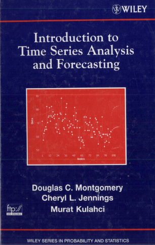
2.2 Plot time series
2.2.1 Plot
plot_ts(sheet="B.1-10YTCM", fmla=`Rate (%)` ~ `Month`, type="l")
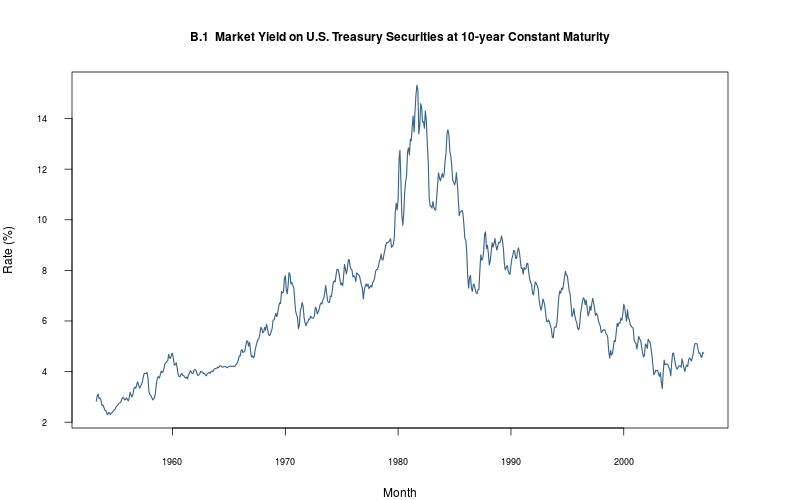
2.2.2 Plot
plot_ts(sheet="B.2-PHAR", fmla=`Sales (thousands)` ~ `Week`)
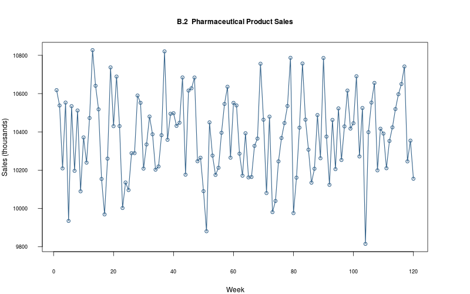
2.2.3 Plot
plot_ts(sheet="B.3-VISC", fmla=`Reading` ~ `Time Period`)
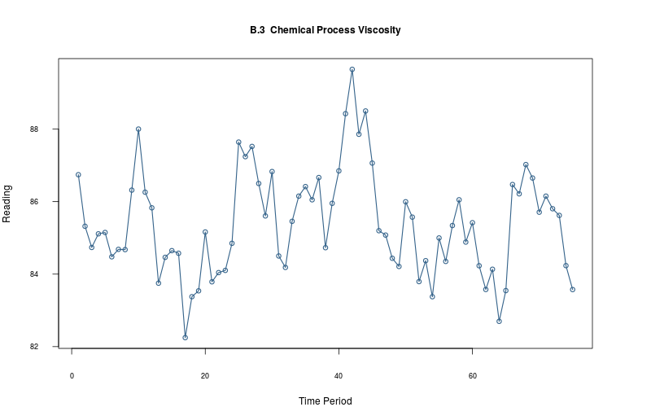
2.2.4 Plot
plot_ts(sheet="B.4-BLUE", fmla=`Production (thousands)` ~ `Year`)
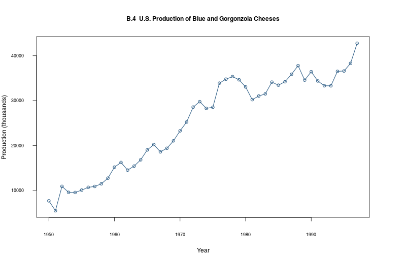
2.2.5 Plot
plot_ts(sheet="B.5-BEV", fmla=`USD (millions)` ~ `Month`)

2.2.6 Plot
plot_ts(sheet="B.6-GSAT-CO2", fmla=`Surface Temp (C)` ~ `Year`)
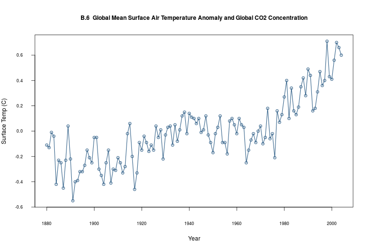
2.2.7 Plot
plot_ts(sheet="B.6-GSAT-CO2", fmla=`CO2 (ppmv)` ~ `Year`)
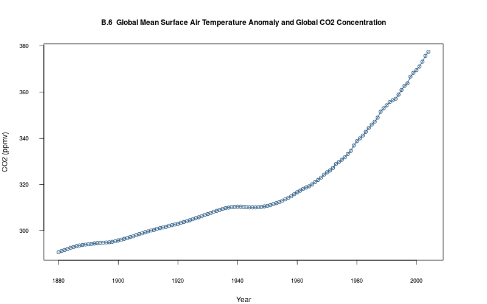
2.2.8 Plot
plot_ts(sheet="B.7-WFMI", fmla=`Price (USD)` ~ `Date`, type="l")
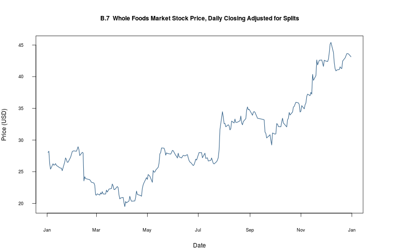
2.2.9 Plot
plot_ts(sheet="B.8-UNEMP", fmla=`Unemployment Rate (%)` ~ `Month`, type="l")

2.2.10 Plot
plot_ts(sheet="B.9-SUNSPOT", fmla=`Sunspot Number` ~ `Year`)
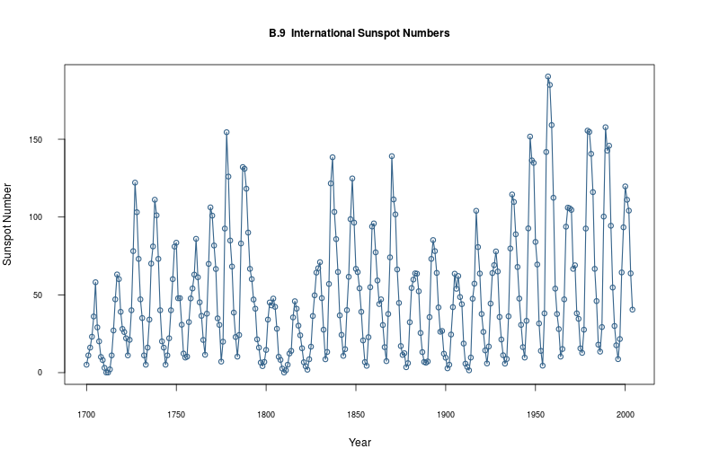
2.2.11 Plot
plot_ts(sheet="B.10-FLOWN", fmla=`Miles Flown (millions)` ~ `Month`)
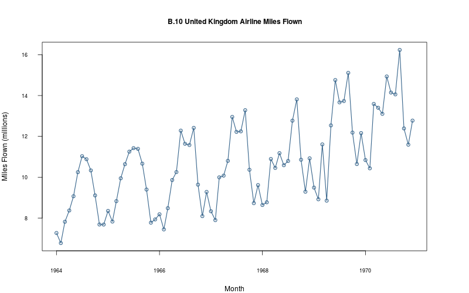
2.2.12 Plot
plot_ts(sheet="B.11-CHAMP", fmla=`Sales (thousands)` ~ `Month`)

2.2.13 Plot
plot_ts(sheet="B.12-YIELD", fmla=`Yield (%)` ~ `Hour`)
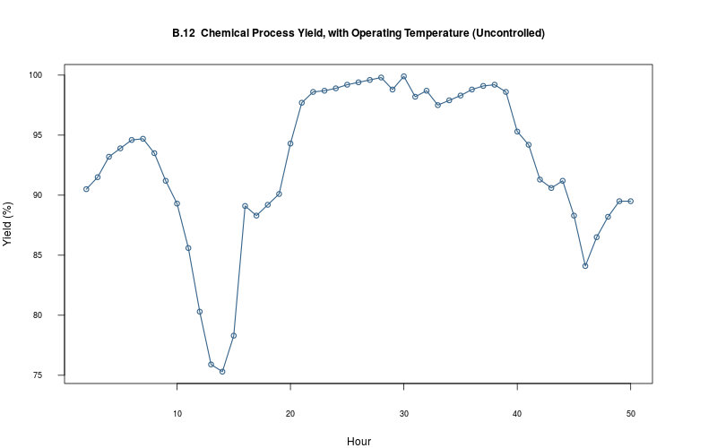
2.2.14 Plot
plot_ts(sheet="B.12-YIELD", fmla=`Temp (F)` ~ `Hour`)
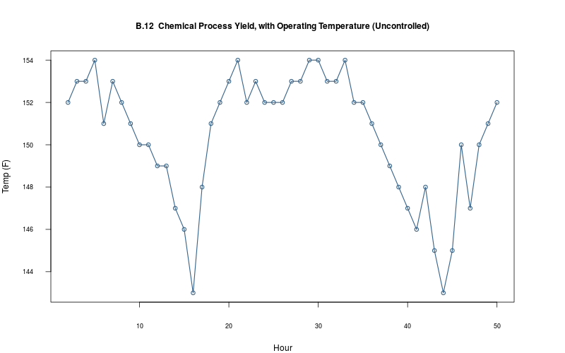
2.2.15 Plot
plot_ts(sheet="B.18-COAL", fmla=`Coal (short tons, thousands)` ~ `Year`)
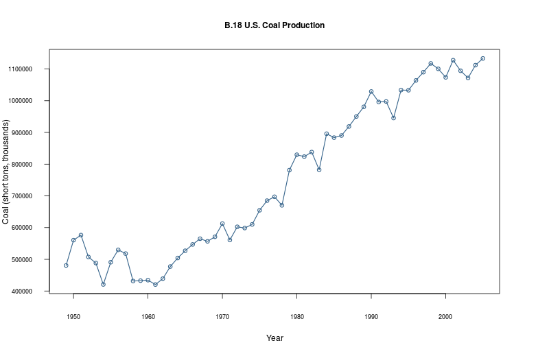
2.2.16 Plot
plot_ts(sheet="B.19-DROWN", fmla=`Drowning Rate (per 100k)` ~ `Year`)
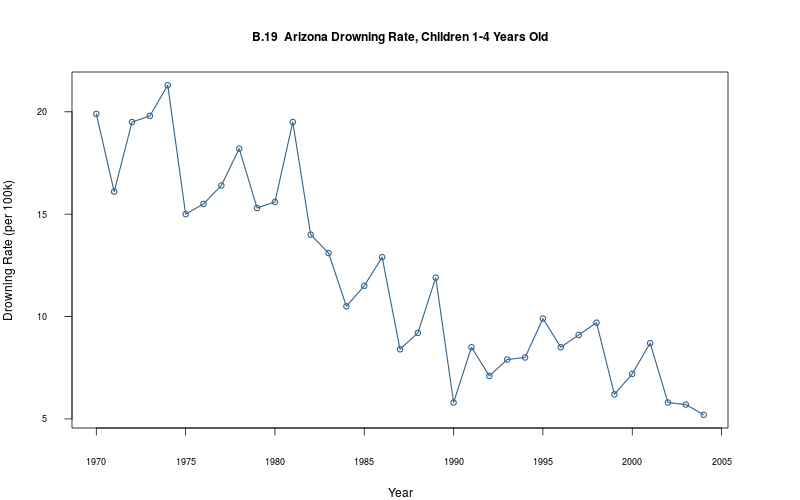
This is a particularly interesting, albeit macabre, short time series. I could not locate the original report (or reports) for the time period in question (1970–2004), but did find one on the Arizona Department of Health Services web site (the AZDHS publishes such tables regularly, e.g. these tables are in the period 2001–2011).
Regrettably, I failed to find an explanation for the precipitous fall in deaths in the 1970–2004 period either in the book or on the AZDHS site. It would interesting to compare to mortality tables in other states. The CDC has some salient information:
3 State Space Modeling
3.1 Mean-only model, Normal shocks (vectorized)
3.1.1 Create model
model<- make_model( sheet="B.2-PHAR", model="mean-only_normal_vectorized", force=FALSE )
3.1.2 Closure: capture a model
make_model
function(
sheet,
model,
response=NULL,
T_new=NULL,
seasonal=NULL,
force=FALSE,
iter=2000,
n.chains=3
) {
.binfilename<-
sprintf(
"stan/%s_%s%s_%d_s%d.rds",
model,
sheet,
ifelse(is.null(response), "", paste0("_", response, sep="")),
ifelse(is.null(T_new), 0, T_new),
ifelse(is.null(seasonal), 0, seasonal)
)
if (!file.exists(.binfilename) | force==TRUE) {
## construct the environment
this<- new.env()
.sheet<- sheet
.model<- model
.response<- response
.T_new<- T_new
.Lambda<- seasonal
.chains<- n.chains
.iter<- iter
rm(
sheet,
model,
response,
T_new,
n.chains,
iter
)
bind_to_env(get_seed, env=this)
.data<- get_data_block(
.sheet,
response=.response,
model.name=.model,
T_new=.T_new,
Lambda=.Lambda
)
.model.file<- get_model_filename(.model)
.fit<-
get_stanfit(
.data,
model=.model,
.iter=.iter,
.chains=.chains
)
`binfilename`<- function() {
.binfilename
}
`sheet`<- function() {
.sheet
}
`model`<- function() {
.model
}
`model_filename`<- function() {
.model.file
}
`show_model_file`<- function() {
cat(paste(readLines(.model.file)), sep = '\n')
invisible()
}
`y`<- function() {
.data[["y"]]
}
`T`<- function() {
.data[["T"]]
}
`T_new`<- function() {
.data[["T_new"]]
}
`T_end`<- function() {
if (is.null(T_new())) return(T())
T() + T_new()
}
`fit`<- function() {
.fit
}
`extract_par`<- function(par, start, end) {
assert(any(grepl(par, names(this$fit()))))
theta<- rstan::extract(this$fit())[[par]]
if (is.na(dim(theta)[2]))
theta<- matrix(theta, nc=1)
theta_mean<- apply(theta, 2, mean)
theta_quantiles<- apply(theta, 2, quantile, c(.0275,.975))
time_index<- get_t(this$sheet(), start=start, end=end)
out<- time_index %>%
mutate(
theta_mean = theta_mean,
theta_lower = theta_quantiles["2.75%", ],
theta_upper = theta_quantiles["97.5%", ]
)
colnames(out)<- gsub("theta", par, colnames(out))
out
}
`plot_y_tilde`<- function() {
y_tilde<- extract_par(
"y_tilde",
start = this$T() + 1,
end = this$T_end()
)
y_comb<- bind_rows(
tabs[[this$sheet()]],
y_tilde
)
z<- zoo(
y_comb[, setdiff(colnames(y_comb), get_t_name(this$sheet()))] %>% as.matrix,
order.by=y_comb[, get_t_name(this$sheet())] %>% as.matrix
)
plot(
z[, 1:2],
col=c("steelblue4", "darkgreen"),
screen=1,
main=gsub("Table ", "", get_name(this$sheet())),
xlab=get_t_name(this$sheet()),
ylab=colnames(tabs[[this$sheet()]])[2],
ylim=c(min(z, na.rm=TRUE), max(z, na.rm=TRUE)),
type="o"
)
lines(z[, 3], col="limegreen", type="o")
lines(z[, 4], col="limegreen", type="o")
}
bind_to_env(`binfilename`, env=this)
bind_to_env(`sheet`, env=this)
bind_to_env(`model`, env=this)
bind_to_env(`model_filename`, env=this)
bind_to_env(`show_model_file`, env=this)
bind_to_env(`y`, env=this)
bind_to_env(`T`, env=this)
bind_to_env(`T_new`, env=this)
bind_to_env(`T_end`, env=this)
bind_to_env(`fit`, env=this)
bind_to_env(`extract_par`, env=this)
bind_to_env(`plot_y_tilde`, env=this)
class(this)<- "model"
## assert(fully_converged(fit))
saveRDS(this, file=.binfilename)
}
else {
this<- readRDS(.binfilename)
assert(this$binfilename()==.binfilename)
}
this
}
3.1.3 What’s in your model?
as.matrix(vapply(objects(env=model), function(x) class(get(x, env=model)), character(1)))
[,1]
binfilename "function"
extract_par "function"
fit "function"
get_seed "function"
model "function"
model_filename "function"
plot_y_tilde "function"
sheet "function"
show_model_file "function"
T "function"
T_end "function"
T_new "function"
y "function"
3.1.4 Show Stan code
We use vectorization for this particular example because it has a nigh isomorphism to the Stan code (and vectorization affords an optimization in the Stan model):
model$show_model_file()
// ---------------------------------------------------------------------
// model name: mean-only, normal [vectorized: no for loop over index t]
data {
int<lower=1> T;
real y[T];
}
parameters {
real theta;
real<lower=0> sigma;
}
model {
y ~ normal(theta, sigma);
}
cf. the model itself:
\begin{equation} y_t \sim \mathscr{N}(\theta, \sigma^2) \end{equation}3.1.5 Fitted Stan model
model$fit()
Inference for Stan model: mean-only_normal_vectorized.
3 chains, each with iter=2000; warmup=1000; thin=1;
post-warmup draws per chain=1000, total post-warmup draws=3000.
mean se_mean sd 2.5% 25% 50% 75% 97.5% n_eff Rhat
theta 10378.67 0.47 20.24 10338.88 10365.08 10378.85 10392.43 10418.39 1838 1
sigma 219.32 0.37 14.61 192.21 209.33 218.41 228.38 249.52 1573 1
lp__ -700.97 0.04 1.05 -703.81 -701.35 -700.64 -700.23 -699.97 794 1
Samples were drawn using NUTS(diag_e) at Mon May 30 23:40:31 2016.
For each parameter, n_eff is a crude measure of effective sample size,
and Rhat is the potential scale reduction factor on split chains (at
convergence, Rhat=1).
3.1.6 Assess fit
traceplot(model$fit(), inc_warmup=FALSE)
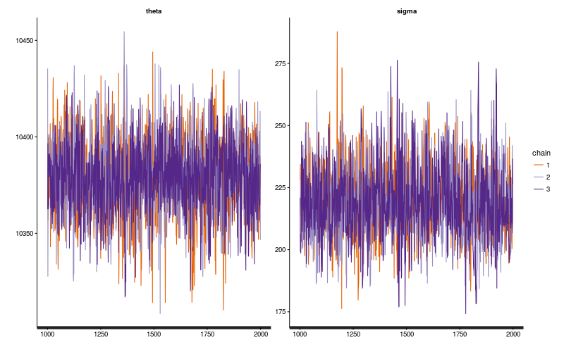
pairs(model$fit())
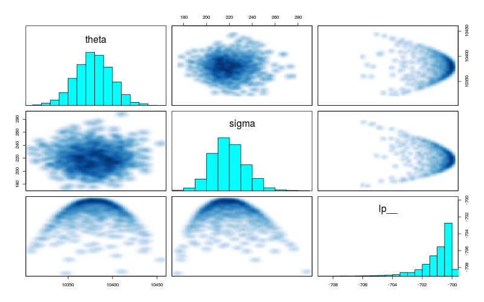
par(mfrow=c(1,2)) hist(extract(model$fit())[["theta"]], breaks=30, main="theta", xlab="theta") hist(extract(model$fit())[["sigma"]], breaks=30, main="sigma", xlab="sigma")
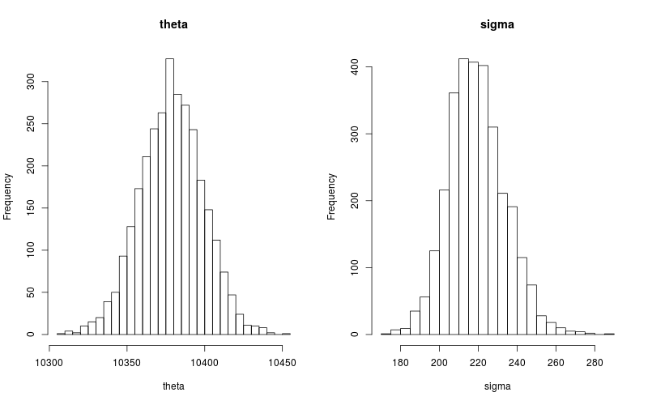
3.1.7 Simulate from fit (mean-posterior predictive fit)
We can get the posterior mean in one of two ways:
(theta<- get_posterior_mean(model$fit(), par="theta")[, "mean-all chains"]) (sigma<- get_posterior_mean(model$fit(), par="sigma")[, "mean-all chains"])
[1] 10378.67 [1] 219.322
(theta<- mean(extract(model$fit())[["theta"]])) (sigma<- mean(extract(model$fit())[["sigma"]]))
[1] 10378.67 [1] 219.322
and then simulate from the posterior mean (this is a “posterior predictive fit"—not a forecast!):
theta<- mean(extract(model$fit())[["theta"]]) sigma<- mean(extract(model$fit())[["sigma"]]) y.sim<- rnorm(model$T(), mean=theta, sd=sigma) plot(model$y(), col="steelblue4", lwd=2.5, type="o") lines(y.sim, type="o", col="blue")
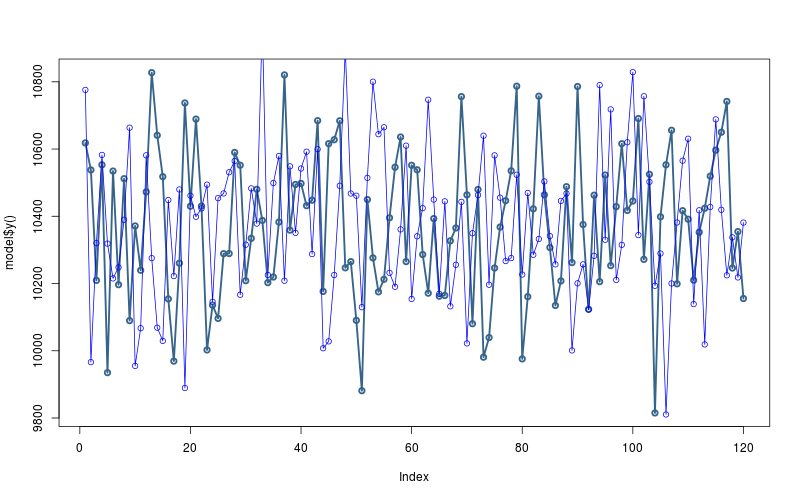
Note that we are incorporating the uncertainty in the posterior estimates by averaging over them and taking a point estimate (the posterior mean). This is not the same as integrating over the posterior density (which is a weighted average of all posterior estimates).
3.2 Mean-only model, Normal shocks (for loop)
3.2.1 Create model
model<- make_model( sheet="B.2-PHAR", model="mean-only_normal", force=FALSE )
3.2.2 Show Stan code
We used vectorization in the previous example
but we prefer to use the for loop because it generalizes to the
remaining examples and is of particular advantage in time-series
models.
We’re not going to worry too much about
optimizing the model set-up—rather, we’ll focus on model use.
model$show_model_file()
// ---------------------------------------------------------------------
// model name: mean-only, normal [uses for loop over index t]
data {
int<lower=1> T;
real y[T];
}
parameters {
real theta;
real<lower=0> sigma;
}
model {
for (t in 1:T) {
y[t] ~ normal(theta, sigma);
}
}
cf. the model itself:
\begin{eqnarray} y_t &\sim& \mathscr{N}(\theta, \sigma^2) \\[3mm] \Leftrightarrow y_t &=& \theta + \varepsilon_t, \;\;\;\;\; \varepsilon_t \;\sim\; \mathscr{N}(0, \sigma^2) \end{eqnarray}3.2.3 Fitted Stan model
model$fit()
Inference for Stan model: mean-only_normal.
3 chains, each with iter=2000; warmup=1000; thin=1;
post-warmup draws per chain=1000, total post-warmup draws=3000.
mean se_mean sd 2.5% 25% 50% 75% 97.5% n_eff Rhat
theta 10378.52 0.44 19.70 10340.91 10364.80 10378.21 10391.80 10417.24 1998 1
sigma 219.66 0.36 14.25 193.86 209.66 218.93 228.58 249.12 1566 1
lp__ -700.91 0.03 0.96 -703.49 -701.31 -700.63 -700.21 -699.96 940 1
Samples were drawn using NUTS(diag_e) at Mon May 30 23:41:05 2016.
For each parameter, n_eff is a crude measure of effective sample size,
and Rhat is the potential scale reduction factor on split chains (at
convergence, Rhat=1).
3.2.4 Simulate from fit
theta<- mean(extract(model$fit())[["theta"]]) sigma<- mean(extract(model$fit())[["sigma"]]) y.sim<- rnorm(model$T(), mean=theta, sd=sigma) plot(model$y(), col="steelblue4", lwd=2.5, type="o") lines(y.sim, type="o", col="blue")
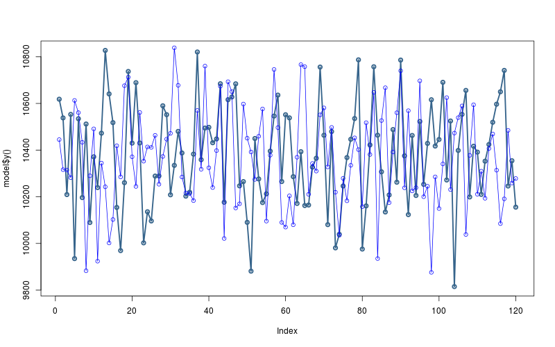
3.3 Mean-only model, Normal shocks, generate forecast from model block
3.3.1 Create model
Note: we will generate T_new new data points out of sample,
i.e. we will forecast T_new steps ahead.
model<- make_model( sheet="B.2-PHAR", model="mean-only_normal_predict_new_model_block", T_new=5, force=FALSE )
SAMPLING FOR MODEL 'mean-only_normal_predict_new_model_block' NOW (CHAIN 1).
Chain 1, Iteration: 1 / 2000 [ 0%] (Warmup)
Chain 1, Iteration: 200 / 2000 [ 10%] (Warmup)
Chain 1, Iteration: 400 / 2000 [ 20%] (Warmup)
Chain 1, Iteration: 600 / 2000 [ 30%] (Warmup)
Chain 1, Iteration: 800 / 2000 [ 40%] (Warmup)
Chain 1, Iteration: 1000 / 2000 [ 50%] (Warmup)
Chain 1, Iteration: 1001 / 2000 [ 50%] (Sampling)
Chain 1, Iteration: 1200 / 2000 [ 60%] (Sampling)
Chain 1, Iteration: 1400 / 2000 [ 70%] (Sampling)
Chain 1, Iteration: 1600 / 2000 [ 80%] (Sampling)
Chain 1, Iteration: 1800 / 2000 [ 90%] (Sampling)
Chain 1, Iteration: 2000 / 2000 [100%] (Sampling)#
# Elapsed Time: 0.72597 seconds (Warm-up)
# 0.030108 seconds (Sampling)
# 0.756078 seconds (Total)
#
SAMPLING FOR MODEL 'mean-only_normal_predict_new_model_block' NOW (CHAIN 2).
Chain 2, Iteration: 1 / 2000 [ 0%] (Warmup)
Chain 2, Iteration: 200 / 2000 [ 10%] (Warmup)
Chain 2, Iteration: 400 / 2000 [ 20%] (Warmup)
Chain 2, Iteration: 600 / 2000 [ 30%] (Warmup)
Chain 2, Iteration: 800 / 2000 [ 40%] (Warmup)
Chain 2, Iteration: 1000 / 2000 [ 50%] (Warmup)
Chain 2, Iteration: 1001 / 2000 [ 50%] (Sampling)
Chain 2, Iteration: 1200 / 2000 [ 60%] (Sampling)
Chain 2, Iteration: 1400 / 2000 [ 70%] (Sampling)
Chain 2, Iteration: 1600 / 2000 [ 80%] (Sampling)
Chain 2, Iteration: 1800 / 2000 [ 90%] (Sampling)
Chain 2, Iteration: 2000 / 2000 [100%] (Sampling)#
# Elapsed Time: 0.794401 seconds (Warm-up)
# 0.033499 seconds (Sampling)
# 0.8279 seconds (Total)
#
SAMPLING FOR MODEL 'mean-only_normal_predict_new_model_block' NOW (CHAIN 3).
Chain 3, Iteration: 1 / 2000 [ 0%] (Warmup)
Chain 3, Iteration: 200 / 2000 [ 10%] (Warmup)
Chain 3, Iteration: 400 / 2000 [ 20%] (Warmup)
Chain 3, Iteration: 600 / 2000 [ 30%] (Warmup)
Chain 3, Iteration: 800 / 2000 [ 40%] (Warmup)
Chain 3, Iteration: 1000 / 2000 [ 50%] (Warmup)
Chain 3, Iteration: 1001 / 2000 [ 50%] (Sampling)
Chain 3, Iteration: 1200 / 2000 [ 60%] (Sampling)
Chain 3, Iteration: 1400 / 2000 [ 70%] (Sampling)
Chain 3, Iteration: 1600 / 2000 [ 80%] (Sampling)
Chain 3, Iteration: 1800 / 2000 [ 90%] (Sampling)
Chain 3, Iteration: 2000 / 2000 [100%] (Sampling)#
# Elapsed Time: 0.833951 seconds (Warm-up)
# 0.035478 seconds (Sampling)
# 0.869429 seconds (Total)
#
The following numerical problems occured the indicated number of times after warmup on chain 3
count
Exception thrown at line 19: normal_log: Scale parameter is 0, but must be > 0! 1
When a numerical problem occurs, the Metropolis proposal gets rejected.
However, by design Metropolis proposals sometimes get rejected even when there are no numerical problems.
Thus, if the number in the 'count' column is small, do not ask about this message on stan-users.
3.3.2 Show Stan code
model$show_model_file()
// ---------------------------------------------------------------------
// model name: mean-only, normal [predict T_new in model block]
data {
int<lower=1> T;
real y[T];
int<lower=0> T_new;
}
parameters {
real theta;
real<lower=0> sigma;
vector[T_new] y_tilde;
}
model {
for (t in 1:T) {
y[t] ~ normal(theta, sigma);
}
for (t in 1:T_new) {
y_tilde[t] ~ normal(theta, sigma);
}
}
cf. the model itself:
\begin{eqnarray} y_t &\sim& \mathscr{N}(\theta, \sigma^2) \\[3mm] \Leftrightarrow y_t &=& \theta + \varepsilon_t, \;\;\;\;\; \varepsilon_t \;\sim\; \mathscr{N}(0, \sigma^2) \end{eqnarray}3.3.3 Fitted Stan model
model$fit()
Inference for Stan model: mean-only_normal_predict_new_model_block.
3 chains, each with iter=2000; warmup=1000; thin=1;
post-warmup draws per chain=1000, total post-warmup draws=3000.
mean se_mean sd 2.5% 25% 50% 75% 97.5% n_eff Rhat
theta 10379.48 0.40 20.01 10340.25 10365.92 10379.11 10392.10 10419.46 2503 1.00
sigma 219.72 0.29 14.35 193.27 209.61 219.12 229.23 249.23 2385 1.00
y_tilde[1] 10379.42 4.15 211.31 9968.39 10234.45 10385.18 10524.61 10796.74 2595 1.00
y_tilde[2] 10380.57 4.70 222.01 9938.44 10232.95 10382.46 10525.15 10812.51 2230 1.00
y_tilde[3] 10375.66 4.54 230.59 9940.10 10220.16 10370.44 10528.45 10833.30 2581 1.00
y_tilde[4] 10376.72 4.56 226.31 9955.13 10226.05 10372.99 10525.91 10817.21 2462 1.00
y_tilde[5] 10371.47 4.35 220.84 9920.32 10228.42 10374.29 10522.11 10804.19 2577 1.00
lp__ -730.40 0.06 1.95 -735.08 -731.46 -730.08 -729.01 -727.65 1102 1.01
Samples were drawn using NUTS(diag_e) at Mon May 30 23:57:39 2016.
For each parameter, n_eff is a crude measure of effective sample size,
and Rhat is the potential scale reduction factor on split chains (at
convergence, Rhat=1).
3.3.4 Forecast
model$plot_y_tilde()
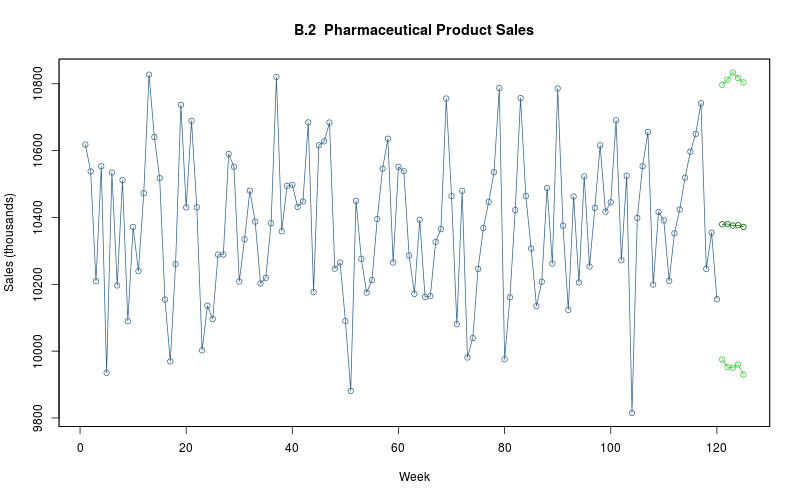
3.4 Mean-only model, Normal shocks, generate forecast from generated quantities
3.4.1 Create model
model<- make_model( sheet="B.2-PHAR", model="mean-only_normal_predict_new_generated_quantities", T_new=5, force=FALSE )
SAMPLING FOR MODEL 'mean-only_normal_predict_new_generated_quantities' NOW (CHAIN 1). Chain 1, Iteration: 1 / 2000 [ 0%] (Warmup) Chain 1, Iteration: 200 / 2000 [ 10%] (Warmup) Chain 1, Iteration: 400 / 2000 [ 20%] (Warmup) Chain 1, Iteration: 600 / 2000 [ 30%] (Warmup) Chain 1, Iteration: 800 / 2000 [ 40%] (Warmup) Chain 1, Iteration: 1000 / 2000 [ 50%] (Warmup) Chain 1, Iteration: 1001 / 2000 [ 50%] (Sampling) Chain 1, Iteration: 1200 / 2000 [ 60%] (Sampling) Chain 1, Iteration: 1400 / 2000 [ 70%] (Sampling) Chain 1, Iteration: 1600 / 2000 [ 80%] (Sampling) Chain 1, Iteration: 1800 / 2000 [ 90%] (Sampling) Chain 1, Iteration: 2000 / 2000 [100%] (Sampling)# # Elapsed Time: 0.218478 seconds (Warm-up) # 0.022934 seconds (Sampling) # 0.241412 seconds (Total) # SAMPLING FOR MODEL 'mean-only_normal_predict_new_generated_quantities' NOW (CHAIN 2). Chain 2, Iteration: 1 / 2000 [ 0%] (Warmup) Chain 2, Iteration: 200 / 2000 [ 10%] (Warmup) Chain 2, Iteration: 400 / 2000 [ 20%] (Warmup) Chain 2, Iteration: 600 / 2000 [ 30%] (Warmup) Chain 2, Iteration: 800 / 2000 [ 40%] (Warmup) Chain 2, Iteration: 1000 / 2000 [ 50%] (Warmup) Chain 2, Iteration: 1001 / 2000 [ 50%] (Sampling) Chain 2, Iteration: 1200 / 2000 [ 60%] (Sampling) Chain 2, Iteration: 1400 / 2000 [ 70%] (Sampling) Chain 2, Iteration: 1600 / 2000 [ 80%] (Sampling) Chain 2, Iteration: 1800 / 2000 [ 90%] (Sampling) Chain 2, Iteration: 2000 / 2000 [100%] (Sampling)# # Elapsed Time: 0.236686 seconds (Warm-up) # 0.019834 seconds (Sampling) # 0.25652 seconds (Total) # SAMPLING FOR MODEL 'mean-only_normal_predict_new_generated_quantities' NOW (CHAIN 3). Chain 3, Iteration: 1 / 2000 [ 0%] (Warmup) Chain 3, Iteration: 200 / 2000 [ 10%] (Warmup) Chain 3, Iteration: 400 / 2000 [ 20%] (Warmup) Chain 3, Iteration: 600 / 2000 [ 30%] (Warmup) Chain 3, Iteration: 800 / 2000 [ 40%] (Warmup) Chain 3, Iteration: 1000 / 2000 [ 50%] (Warmup) Chain 3, Iteration: 1001 / 2000 [ 50%] (Sampling) Chain 3, Iteration: 1200 / 2000 [ 60%] (Sampling) Chain 3, Iteration: 1400 / 2000 [ 70%] (Sampling) Chain 3, Iteration: 1600 / 2000 [ 80%] (Sampling) Chain 3, Iteration: 1800 / 2000 [ 90%] (Sampling) Chain 3, Iteration: 2000 / 2000 [100%] (Sampling)# # Elapsed Time: 0.270393 seconds (Warm-up) # 0.022084 seconds (Sampling) # 0.292477 seconds (Total) #
3.4.2 Show Stan code
model$show_model_file()
// ---------------------------------------------------------------------
// model name: mean-only, normal [predicts T_new values in y_tilde]
data {
int<lower=1> T;
real y[T];
int<lower=0> T_new;
}
parameters {
real theta;
real<lower=0> sigma;
}
model {
for (t in 1:T) {
y[t] ~ normal(theta, sigma);
}
}
generated quantities {
vector[T_new] y_tilde;
for (t in 1:T_new) {
y_tilde[t]<- theta;
}
}
cf. the model itself:
\begin{eqnarray} y_t &\sim& \mathscr{N}(\theta, \sigma^2) \\[3mm] \Leftrightarrow y_t &=& \theta + \varepsilon_t, \;\;\;\;\; \varepsilon_t \;\sim\; \mathscr{N}(0, \sigma^2) \end{eqnarray}3.4.3 Fitted Stan model
model$fit()
Inference for Stan model: mean-only_normal_predict_new_generated_quantities.
3 chains, each with iter=2000; warmup=1000; thin=1;
post-warmup draws per chain=1000, total post-warmup draws=3000.
mean se_mean sd 2.5% 25% 50% 75% 97.5% n_eff Rhat
theta 10378.52 0.44 19.70 10340.91 10364.80 10378.21 10391.80 10417.24 1998 1
sigma 219.66 0.36 14.25 193.86 209.66 218.93 228.58 249.12 1566 1
y_tilde[1] 10378.52 0.44 19.70 10340.91 10364.80 10378.21 10391.80 10417.24 1998 1
y_tilde[2] 10378.52 0.44 19.70 10340.91 10364.80 10378.21 10391.80 10417.24 1998 1
y_tilde[3] 10378.52 0.44 19.70 10340.91 10364.80 10378.21 10391.80 10417.24 1998 1
y_tilde[4] 10378.52 0.44 19.70 10340.91 10364.80 10378.21 10391.80 10417.24 1998 1
y_tilde[5] 10378.52 0.44 19.70 10340.91 10364.80 10378.21 10391.80 10417.24 1998 1
lp__ -700.91 0.03 0.96 -703.49 -701.31 -700.63 -700.21 -699.96 940 1
Samples were drawn using NUTS(diag_e) at Mon May 30 23:58:12 2016.
For each parameter, n_eff is a crude measure of effective sample size,
and Rhat is the potential scale reduction factor on split chains (at
convergence, Rhat=1).
3.4.4 Forecast
model$plot_y_tilde()
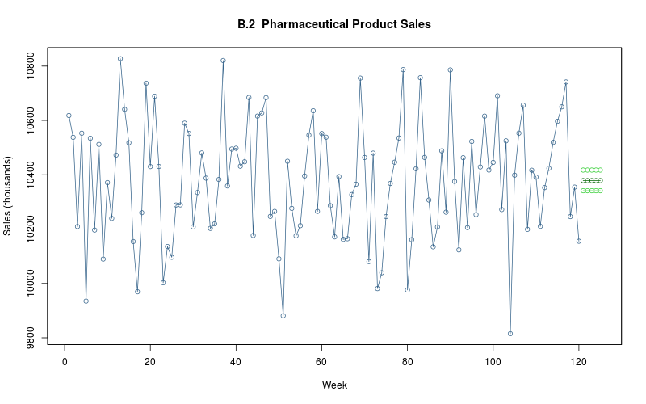
3.5 Mean-only model, Normal shocks, generate forecast from generated quantities with Monte Carlo simulation
3.5.1 Create model
model<- make_model( sheet="B.2-PHAR", model="mean-only_normal_predict_new_generated_quantities_mc", T_new=5, force=FALSE )
SAMPLING FOR MODEL 'mean-only_normal_predict_new_generated_quantities_mc' NOW (CHAIN 1). Chain 1, Iteration: 1 / 2000 [ 0%] (Warmup) Chain 1, Iteration: 200 / 2000 [ 10%] (Warmup) Chain 1, Iteration: 400 / 2000 [ 20%] (Warmup) Chain 1, Iteration: 600 / 2000 [ 30%] (Warmup) Chain 1, Iteration: 800 / 2000 [ 40%] (Warmup) Chain 1, Iteration: 1000 / 2000 [ 50%] (Warmup) Chain 1, Iteration: 1001 / 2000 [ 50%] (Sampling) Chain 1, Iteration: 1200 / 2000 [ 60%] (Sampling) Chain 1, Iteration: 1400 / 2000 [ 70%] (Sampling) Chain 1, Iteration: 1600 / 2000 [ 80%] (Sampling) Chain 1, Iteration: 1800 / 2000 [ 90%] (Sampling) Chain 1, Iteration: 2000 / 2000 [100%] (Sampling)# # Elapsed Time: 0.273756 seconds (Warm-up) # 0.025425 seconds (Sampling) # 0.299181 seconds (Total) # SAMPLING FOR MODEL 'mean-only_normal_predict_new_generated_quantities_mc' NOW (CHAIN 2). Chain 2, Iteration: 1 / 2000 [ 0%] (Warmup) Chain 2, Iteration: 200 / 2000 [ 10%] (Warmup) Chain 2, Iteration: 400 / 2000 [ 20%] (Warmup) Chain 2, Iteration: 600 / 2000 [ 30%] (Warmup) Chain 2, Iteration: 800 / 2000 [ 40%] (Warmup) Chain 2, Iteration: 1000 / 2000 [ 50%] (Warmup) Chain 2, Iteration: 1001 / 2000 [ 50%] (Sampling) Chain 2, Iteration: 1200 / 2000 [ 60%] (Sampling) Chain 2, Iteration: 1400 / 2000 [ 70%] (Sampling) Chain 2, Iteration: 1600 / 2000 [ 80%] (Sampling) Chain 2, Iteration: 1800 / 2000 [ 90%] (Sampling) Chain 2, Iteration: 2000 / 2000 [100%] (Sampling)# # Elapsed Time: 0.231618 seconds (Warm-up) # 0.022441 seconds (Sampling) # 0.254059 seconds (Total) # SAMPLING FOR MODEL 'mean-only_normal_predict_new_generated_quantities_mc' NOW (CHAIN 3). Chain 3, Iteration: 1 / 2000 [ 0%] (Warmup) Chain 3, Iteration: 200 / 2000 [ 10%] (Warmup) Chain 3, Iteration: 400 / 2000 [ 20%] (Warmup) Chain 3, Iteration: 600 / 2000 [ 30%] (Warmup) Chain 3, Iteration: 800 / 2000 [ 40%] (Warmup) Chain 3, Iteration: 1000 / 2000 [ 50%] (Warmup) Chain 3, Iteration: 1001 / 2000 [ 50%] (Sampling) Chain 3, Iteration: 1200 / 2000 [ 60%] (Sampling) Chain 3, Iteration: 1400 / 2000 [ 70%] (Sampling) Chain 3, Iteration: 1600 / 2000 [ 80%] (Sampling) Chain 3, Iteration: 1800 / 2000 [ 90%] (Sampling) Chain 3, Iteration: 2000 / 2000 [100%] (Sampling)# # Elapsed Time: 0.211353 seconds (Warm-up) # 0.026607 seconds (Sampling) # 0.23796 seconds (Total) #
plot_ts(sheet=model$sheet(), fmla=`Sales (thousands)` ~ `Week`);

3.5.2 Show Stan code
model$show_model_file()
// ---------------------------------------------------------------------
// model name: mean-only, normal [predicts T_new values in y_tilde]
data {
int<lower=1> T;
real y[T];
int<lower=0> T_new;
}
parameters {
real theta;
real<lower=0> sigma;
}
model {
for (t in 1:T) {
y[t] ~ normal(theta, sigma);
}
}
generated quantities {
vector[T_new] y_tilde;
for (t in 1:T_new) {
y_tilde[t]<- normal_rng(theta, sigma);
}
}
cf. the model itself:
\begin{equation} y_t \sim \mathscr{N}(\theta, \sigma^2) \end{equation}3.5.3 Fitted Stan model
model$fit()
Inference for Stan model: mean-only_normal_predict_new_generated_quantities_mc.
3 chains, each with iter=2000; warmup=1000; thin=1;
post-warmup draws per chain=1000, total post-warmup draws=3000.
mean se_mean sd 2.5% 25% 50% 75% 97.5% n_eff Rhat
theta 10379.71 0.46 20.31 10339.12 10366.58 10379.96 10393.80 10418.62 1950 1
sigma 219.31 0.35 14.46 193.32 209.35 218.74 228.57 249.14 1667 1
y_tilde[1] 10373.81 4.12 225.76 9933.51 10221.13 10375.88 10520.34 10818.54 3000 1
y_tilde[2] 10373.10 3.99 218.41 9942.35 10221.92 10377.23 10523.32 10801.63 3000 1
y_tilde[3] 10382.18 4.21 223.86 9940.05 10234.29 10384.17 10529.67 10823.47 2823 1
y_tilde[4] 10383.65 4.08 223.68 9931.30 10235.25 10386.39 10530.31 10826.64 3000 1
y_tilde[5] 10378.64 4.05 221.95 9932.72 10232.54 10373.66 10529.40 10808.04 3000 1
lp__ -700.97 0.03 1.04 -703.71 -701.34 -700.67 -700.24 -699.97 904 1
Samples were drawn using NUTS(diag_e) at Mon May 30 23:58:45 2016.
For each parameter, n_eff is a crude measure of effective sample size,
and Rhat is the potential scale reduction factor on split chains (at
convergence, Rhat=1).
3.5.4 Assess fit
## layout(matrix(c(1,2,3,3), byrow=TRUE, nc=2)) traceplot(model$fit(), inc_warmup=FALSE)
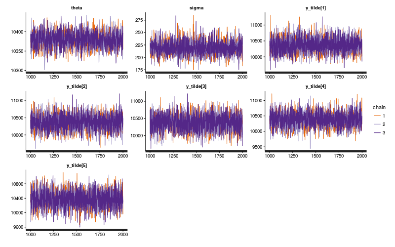
pairs(model$fit())
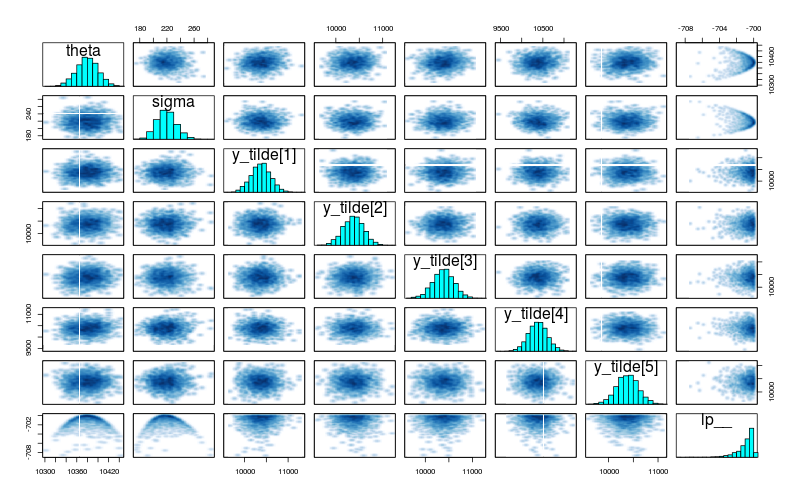
par(mfrow=c(1,2)) hist(extract(model$fit())[["theta"]], breaks=50, main="theta", xlab="theta") hist(extract(model$fit())[["sigma"]], breaks=50, main="sigma", xlab="sigma")
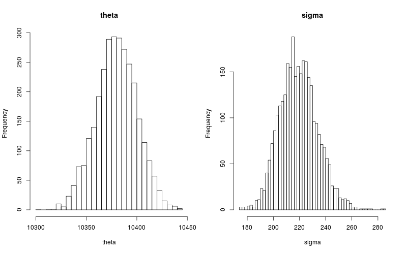
3.5.5 Simulate from fit (mean-posterior predictive fit)
We can get the posterior mean in one of two ways:
(theta<- get_posterior_mean(model$fit(), par="theta")[, "mean-all chains"]) (sigma<- get_posterior_mean(model$fit(), par="sigma")[, "mean-all chains"])
[1] 10379.71 [1] 219.3105
(theta<- mean(extract(model$fit())[["theta"]])) (sigma<- mean(extract(model$fit())[["sigma"]]))
[1] 10379.71 [1] 219.3105
and then simulate from the posterior mean (this is a “posterior predictive fit"—not a forecast!):
theta<- mean(extract(model$fit())[["theta"]]) sigma<- mean(extract(model$fit())[["sigma"]]) y.sim<- rnorm(model$T(), mean=theta, sd=sigma) plot(model$y(), col="steelblue4", lwd=2.5, type="o") lines(y.sim, type="o", col="blue")
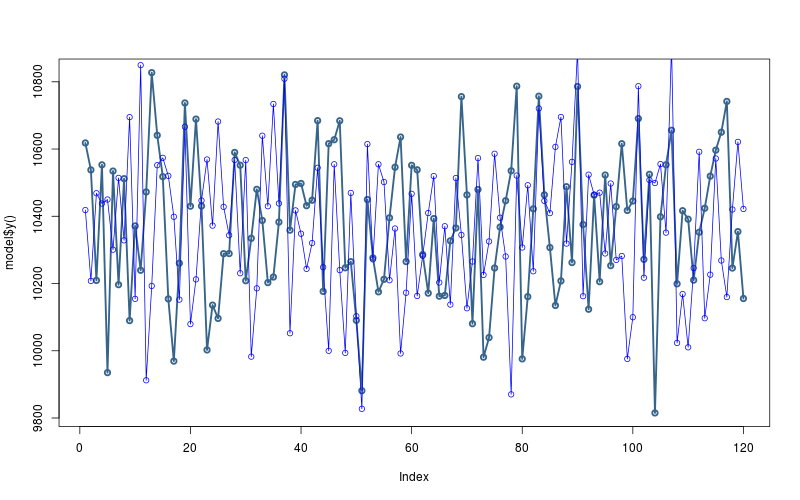
3.5.6 Forecast
model$fit()
Inference for Stan model: mean-only_normal_predict_new_generated_quantities_mc.
3 chains, each with iter=2000; warmup=1000; thin=1;
post-warmup draws per chain=1000, total post-warmup draws=3000.
mean se_mean sd 2.5% 25% 50% 75% 97.5% n_eff Rhat
theta 10379.71 0.46 20.31 10339.12 10366.58 10379.96 10393.80 10418.62 1950 1
sigma 219.31 0.35 14.46 193.32 209.35 218.74 228.57 249.14 1667 1
y_tilde[1] 10373.81 4.12 225.76 9933.51 10221.13 10375.88 10520.34 10818.54 3000 1
y_tilde[2] 10373.10 3.99 218.41 9942.35 10221.92 10377.23 10523.32 10801.63 3000 1
y_tilde[3] 10382.18 4.21 223.86 9940.05 10234.29 10384.17 10529.67 10823.47 2823 1
y_tilde[4] 10383.65 4.08 223.68 9931.30 10235.25 10386.39 10530.31 10826.64 3000 1
y_tilde[5] 10378.64 4.05 221.95 9932.72 10232.54 10373.66 10529.40 10808.04 3000 1
lp__ -700.97 0.03 1.04 -703.71 -701.34 -700.67 -700.24 -699.97 904 1
Samples were drawn using NUTS(diag_e) at Mon May 30 23:58:45 2016.
For each parameter, n_eff is a crude measure of effective sample size,
and Rhat is the potential scale reduction factor on split chains (at
convergence, Rhat=1).
model$plot_y_tilde()
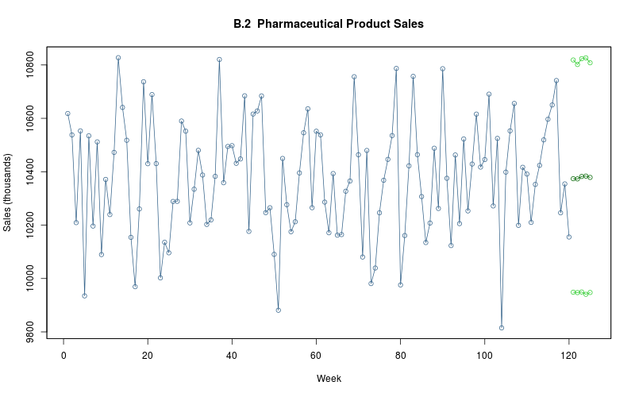
3.6 Mean-varying model, Normal shocks (a.k.a. “local-level model”, “random walk plus noise”)
3.6.1 Create model
model<- make_model( sheet="B.19-DROWN", model="mean-varying_normal", T_new=NULL, force=FALSE )
SAMPLING FOR MODEL 'mean-varying_normal' NOW (CHAIN 1).
Chain 1, Iteration: 1 / 2000 [ 0%] (Warmup)
Chain 1, Iteration: 200 / 2000 [ 10%] (Warmup)
Chain 1, Iteration: 400 / 2000 [ 20%] (Warmup)
Chain 1, Iteration: 600 / 2000 [ 30%] (Warmup)
Chain 1, Iteration: 800 / 2000 [ 40%] (Warmup)
Chain 1, Iteration: 1000 / 2000 [ 50%] (Warmup)
Chain 1, Iteration: 1001 / 2000 [ 50%] (Sampling)
Chain 1, Iteration: 1200 / 2000 [ 60%] (Sampling)
Chain 1, Iteration: 1400 / 2000 [ 70%] (Sampling)
Chain 1, Iteration: 1600 / 2000 [ 80%] (Sampling)
Chain 1, Iteration: 1800 / 2000 [ 90%] (Sampling)
Chain 1, Iteration: 2000 / 2000 [100%] (Sampling)#
# Elapsed Time: 0.09298 seconds (Warm-up)
# 0.078214 seconds (Sampling)
# 0.171194 seconds (Total)
#
SAMPLING FOR MODEL 'mean-varying_normal' NOW (CHAIN 2).
Chain 2, Iteration: 1 / 2000 [ 0%] (Warmup)
Chain 2, Iteration: 200 / 2000 [ 10%] (Warmup)
Chain 2, Iteration: 400 / 2000 [ 20%] (Warmup)
Chain 2, Iteration: 600 / 2000 [ 30%] (Warmup)
Chain 2, Iteration: 800 / 2000 [ 40%] (Warmup)
Chain 2, Iteration: 1000 / 2000 [ 50%] (Warmup)
Chain 2, Iteration: 1001 / 2000 [ 50%] (Sampling)
Chain 2, Iteration: 1200 / 2000 [ 60%] (Sampling)
Chain 2, Iteration: 1400 / 2000 [ 70%] (Sampling)
Chain 2, Iteration: 1600 / 2000 [ 80%] (Sampling)
Chain 2, Iteration: 1800 / 2000 [ 90%] (Sampling)
Chain 2, Iteration: 2000 / 2000 [100%] (Sampling)#
# Elapsed Time: 0.086007 seconds (Warm-up)
# 0.074769 seconds (Sampling)
# 0.160776 seconds (Total)
#
SAMPLING FOR MODEL 'mean-varying_normal' NOW (CHAIN 3).
Chain 3, Iteration: 1 / 2000 [ 0%] (Warmup)
Chain 3, Iteration: 200 / 2000 [ 10%] (Warmup)
Chain 3, Iteration: 400 / 2000 [ 20%] (Warmup)
Chain 3, Iteration: 600 / 2000 [ 30%] (Warmup)
Chain 3, Iteration: 800 / 2000 [ 40%] (Warmup)
Chain 3, Iteration: 1000 / 2000 [ 50%] (Warmup)
Chain 3, Iteration: 1001 / 2000 [ 50%] (Sampling)
Chain 3, Iteration: 1200 / 2000 [ 60%] (Sampling)
Chain 3, Iteration: 1400 / 2000 [ 70%] (Sampling)
Chain 3, Iteration: 1600 / 2000 [ 80%] (Sampling)
Chain 3, Iteration: 1800 / 2000 [ 90%] (Sampling)
Chain 3, Iteration: 2000 / 2000 [100%] (Sampling)#
# Elapsed Time: 0.086661 seconds (Warm-up)
# 0.0899 seconds (Sampling)
# 0.176561 seconds (Total)
#
The following numerical problems occured the indicated number of times after warmup on chain 3
count
Exception thrown at line 14: normal_log: Scale parameter is 0, but must be > 0! 1
When a numerical problem occurs, the Metropolis proposal gets rejected.
However, by design Metropolis proposals sometimes get rejected even when there are no numerical problems.
Thus, if the number in the 'count' column is small, do not ask about this message on stan-users.
plot_ts(sheet=model$sheet(), fmla=`Drowning Rate (per 100k)` ~ `Year`)

3.6.2 Show Stan code
model$show_model_file()
data {
int<lower=1> T;
vector[T] y;
}
parameters {
vector[T] theta_1;
real<lower=0> sigma_1;
real<lower=0> sigma_2;
}
model {
for (t in 1:T) {
y[t] ~ normal(theta_1[t], sigma_1);
}
for (t in 2:T) {
theta_1[t] ~ normal(theta_1[t-1], sigma_2);
}
}
cf. the model itself:
\begin{eqnarray} y_t &\sim& \mathscr{N}(\theta_{1,t}, \, \sigma_1^2) \\[3mm] \theta_{1,t+1} &\sim& \mathscr{N}(\theta_{1,t}, \, \sigma_2^2) \\[3mm] &\Leftrightarrow& \\ y_t &=& \theta_{1,t} + \varepsilon_t, \;\;\;\;\; \varepsilon_t \;\sim\; \mathscr{N}(0, \, \sigma_1^2) \;\;\left\{ \begin{array}{l} \mbox{} \\ \mbox{observation / measurement equation} \\ \mbox{} \end{array} \right. \\ \theta_{1,t+1} &=& \theta_{1,t} + \eta_t, \;\;\;\;\; \eta_t \;\sim\; \mathscr{N}(0, \, \sigma_2^2) \;\;\left\{ \begin{array}{l} \mbox{} \\ \mbox{state equation} \\ \mbox{} \end{array} \right. \end{eqnarray}3.6.3 Fitted Stan model
model$fit()
Inference for Stan model: mean-varying_normal.
3 chains, each with iter=2000; warmup=1000; thin=1;
post-warmup draws per chain=1000, total post-warmup draws=3000.
mean se_mean sd 2.5% 25% 50% 75% 97.5% n_eff Rhat
theta_1[1] 18.91 0.03 1.21 16.56 18.12 18.89 19.69 21.30 1928 1.00
theta_1[2] 18.05 0.03 1.13 15.86 17.30 18.05 18.76 20.28 1384 1.00
theta_1[3] 18.86 0.03 1.05 16.76 18.15 18.88 19.56 20.95 1575 1.00
theta_1[4] 19.12 0.03 1.10 16.91 18.41 19.09 19.84 21.31 1355 1.00
theta_1[5] 18.98 0.03 1.17 16.75 18.20 18.95 19.76 21.34 1180 1.01
theta_1[6] 16.85 0.02 1.09 14.71 16.12 16.88 17.63 18.86 1929 1.00
theta_1[7] 16.37 0.02 1.07 14.15 15.66 16.38 17.09 18.37 1895 1.00
theta_1[8] 16.56 0.02 1.02 14.52 15.89 16.61 17.24 18.52 2443 1.00
theta_1[9] 16.89 0.03 1.07 14.83 16.17 16.87 17.62 19.01 1687 1.00
theta_1[10] 16.09 0.02 1.04 14.13 15.41 16.10 16.75 18.15 3000 1.00
theta_1[11] 16.04 0.02 1.02 14.06 15.38 16.02 16.71 18.15 2381 1.00
theta_1[12] 16.52 0.04 1.28 14.18 15.64 16.48 17.32 19.26 911 1.01
theta_1[13] 14.54 0.02 1.02 12.56 13.85 14.54 15.20 16.59 2385 1.00
theta_1[14] 13.16 0.02 1.01 11.21 12.48 13.09 13.85 15.24 2162 1.00
theta_1[15] 11.82 0.03 1.08 9.65 11.10 11.81 12.52 13.95 1482 1.00
theta_1[16] 11.57 0.03 1.02 9.61 10.89 11.59 12.22 13.61 1431 1.00
theta_1[17] 11.40 0.03 1.06 9.35 10.68 11.41 12.12 13.51 1278 1.00
theta_1[18] 9.87 0.03 1.09 7.71 9.15 9.88 10.60 11.91 1117 1.00
theta_1[19] 9.60 0.03 1.03 7.56 8.90 9.63 10.27 11.61 1389 1.00
theta_1[20] 9.75 0.03 1.09 7.60 9.02 9.75 10.47 11.85 1572 1.00
theta_1[21] 8.01 0.03 1.12 5.75 7.26 8.03 8.76 10.19 1297 1.00
theta_1[22] 8.15 0.02 1.05 6.10 7.47 8.17 8.81 10.25 2234 1.00
theta_1[23] 7.80 0.02 1.03 5.73 7.11 7.81 8.49 9.81 1869 1.00
theta_1[24] 8.02 0.02 1.03 5.99 7.35 8.00 8.69 10.00 2012 1.00
theta_1[25] 8.30 0.02 1.01 6.35 7.61 8.27 8.96 10.30 1876 1.00
theta_1[26] 8.87 0.03 1.03 6.86 8.17 8.88 9.57 10.94 1414 1.00
theta_1[27] 8.66 0.02 1.03 6.55 8.02 8.67 9.33 10.67 1999 1.00
theta_1[28] 8.73 0.02 1.06 6.63 8.03 8.73 9.42 10.87 2049 1.00
theta_1[29] 8.56 0.02 1.06 6.53 7.87 8.58 9.24 10.66 1924 1.00
theta_1[30] 7.41 0.02 1.03 5.42 6.73 7.37 8.09 9.51 2118 1.00
theta_1[31] 7.37 0.02 0.98 5.47 6.72 7.35 8.01 9.31 2327 1.00
theta_1[32] 7.46 0.02 1.03 5.47 6.78 7.43 8.14 9.49 2153 1.00
theta_1[33] 6.43 0.02 1.00 4.49 5.75 6.45 7.09 8.41 2152 1.00
theta_1[34] 5.97 0.02 1.06 3.93 5.26 5.96 6.67 8.10 1834 1.00
theta_1[35] 5.65 0.03 1.28 3.14 4.80 5.63 6.51 8.14 2249 1.00
sigma_1 1.64 0.01 0.34 0.98 1.42 1.63 1.85 2.32 695 1.01
sigma_2 1.44 0.02 0.44 0.81 1.12 1.37 1.68 2.50 502 1.01
lp__ -60.01 0.35 7.26 -75.43 -64.44 -59.57 -55.13 -46.58 425 1.00
Samples were drawn using NUTS(diag_e) at Mon May 30 23:59:22 2016.
For each parameter, n_eff is a crude measure of effective sample size,
and Rhat is the potential scale reduction factor on split chains (at
convergence, Rhat=1).
theta_1<- model$extract_par("theta_1", start=1, end=model$T()) sigma_1<- mean(extract(model$fit())[["sigma_1"]]) sigma_2<- mean(extract(model$fit())[["sigma_2"]]) plot_ts(sheet="B.19-DROWN", fmla=`Drowning Rate (per 100k)` ~ `Year`) lines(theta_1_mean ~ Year, data=theta_1, col="darkgreen", type="o")
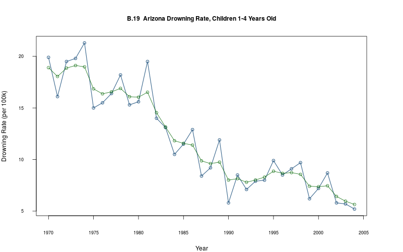
3.7 Mean-varying model, Normal shocks (a.k.a. “local-level model”, “random walk plus noise”), predict ahead
3.7.1 Create model
model<- make_model( sheet="B.19-DROWN", model="mean-varying_normal_predict_new", T_new=5, force=FALSE )
SAMPLING FOR MODEL 'mean-varying_normal_predict_new' NOW (CHAIN 1). Chain 1, Iteration: 1 / 2000 [ 0%] (Warmup) Chain 1, Iteration: 200 / 2000 [ 10%] (Warmup) Chain 1, Iteration: 400 / 2000 [ 20%] (Warmup) Chain 1, Iteration: 600 / 2000 [ 30%] (Warmup) Chain 1, Iteration: 800 / 2000 [ 40%] (Warmup) Chain 1, Iteration: 1000 / 2000 [ 50%] (Warmup) Chain 1, Iteration: 1001 / 2000 [ 50%] (Sampling) Chain 1, Iteration: 1200 / 2000 [ 60%] (Sampling) Chain 1, Iteration: 1400 / 2000 [ 70%] (Sampling) Chain 1, Iteration: 1600 / 2000 [ 80%] (Sampling) Chain 1, Iteration: 1800 / 2000 [ 90%] (Sampling) Chain 1, Iteration: 2000 / 2000 [100%] (Sampling)# # Elapsed Time: 0.126455 seconds (Warm-up) # 0.117514 seconds (Sampling) # 0.243969 seconds (Total) # SAMPLING FOR MODEL 'mean-varying_normal_predict_new' NOW (CHAIN 2). Chain 2, Iteration: 1 / 2000 [ 0%] (Warmup) Chain 2, Iteration: 200 / 2000 [ 10%] (Warmup) Chain 2, Iteration: 400 / 2000 [ 20%] (Warmup) Chain 2, Iteration: 600 / 2000 [ 30%] (Warmup) Chain 2, Iteration: 800 / 2000 [ 40%] (Warmup) Chain 2, Iteration: 1000 / 2000 [ 50%] (Warmup) Chain 2, Iteration: 1001 / 2000 [ 50%] (Sampling) Chain 2, Iteration: 1200 / 2000 [ 60%] (Sampling) Chain 2, Iteration: 1400 / 2000 [ 70%] (Sampling) Chain 2, Iteration: 1600 / 2000 [ 80%] (Sampling) Chain 2, Iteration: 1800 / 2000 [ 90%] (Sampling) Chain 2, Iteration: 2000 / 2000 [100%] (Sampling)# # Elapsed Time: 0.145055 seconds (Warm-up) # 0.107148 seconds (Sampling) # 0.252203 seconds (Total) # SAMPLING FOR MODEL 'mean-varying_normal_predict_new' NOW (CHAIN 3). Chain 3, Iteration: 1 / 2000 [ 0%] (Warmup) Chain 3, Iteration: 200 / 2000 [ 10%] (Warmup) Chain 3, Iteration: 400 / 2000 [ 20%] (Warmup) Chain 3, Iteration: 600 / 2000 [ 30%] (Warmup) Chain 3, Iteration: 800 / 2000 [ 40%] (Warmup) Chain 3, Iteration: 1000 / 2000 [ 50%] (Warmup) Chain 3, Iteration: 1001 / 2000 [ 50%] (Sampling) Chain 3, Iteration: 1200 / 2000 [ 60%] (Sampling) Chain 3, Iteration: 1400 / 2000 [ 70%] (Sampling) Chain 3, Iteration: 1600 / 2000 [ 80%] (Sampling) Chain 3, Iteration: 1800 / 2000 [ 90%] (Sampling) Chain 3, Iteration: 2000 / 2000 [100%] (Sampling)# # Elapsed Time: 0.14014 seconds (Warm-up) # 0.086738 seconds (Sampling) # 0.226878 seconds (Total) # Warning messages: 1: There were 1 divergent transitions after warmup. Increasing adapt_delta above 0.8 may help. 2: Examine the pairs() plot to diagnose sampling problems
plot_ts(sheet=model$sheet(), fmla=`Drowning Rate (per 100k)` ~ `Year`)

3.7.2 Show Stan code
model$show_model_file()
data {
int<lower=1> T;
int<lower=1> T_new;
vector[T] y;
}
transformed data {
int<lower=T> T_start;
int<lower=T> T_end;
T_start<- T+1;
T_end<- T+T_new;
}
parameters {
real<lower=0> sigma_1;
real<lower=0> sigma_2;
vector[T+T_new] theta_1;
}
model {
for(t in 1:T) {
y[t] ~ normal(theta_1[t], sigma_1);
}
for(t in 2:T_end) {
theta_1[t] ~ normal(theta_1[t-1], sigma_2);
}
}
generated quantities {
vector[T_new] y_tilde;
for (t in T_start:T_end) {
y_tilde[t-T]<- normal_rng(theta_1[t], sigma_1);
}
}
cf. the model itself:
\begin{eqnarray} y_t &\sim& \mathscr{N}(\theta_{1,t}, \, \sigma_1^2) \\[3mm] \theta_{1,t+1} &\sim& \mathscr{N}(\theta_{1,t}, \, \sigma_2^2) \\[3mm] &\Leftrightarrow& \\ y_t &=& \theta_{1,t} + \varepsilon_t, \;\;\;\;\; \varepsilon_t \;\sim\; \mathscr{N}(0, \, \sigma_1^2) \\[3mm] \theta_{1,t+1} &=& \theta_{1,t} + \eta_t, \;\;\;\;\; \eta_t \;\sim\; \mathscr{N}(0, \, \sigma_2^2) \end{eqnarray}3.7.3 Fitted Stan model
model$fit()
model$plot_y_tilde() theta_1<- model$extract_par("theta_1", start=1, end=model$T_end()) lines(theta_1_mean ~ Year, data=theta_1, col="darkgreen", type="o")
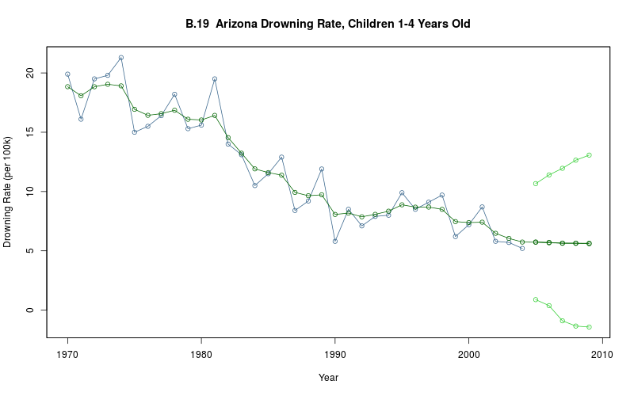
3.8 Mean-varying, linear-trend model, Normal shocks, predict ahead (a.k.a. “local linear-trend model”)
3.8.1 Create model
model<- make_model( sheet="B.19-DROWN", model="mean-varying_linear-trend_normal", T_new=5, iter=5000, force=FALSE )
SAMPLING FOR MODEL 'mean-varying_linear-trend_normal' NOW (CHAIN 1). Chain 1, Iteration: 1 / 5000 [ 0%] (Warmup) Chain 1, Iteration: 500 / 5000 [ 10%] (Warmup) Chain 1, Iteration: 1000 / 5000 [ 20%] (Warmup) Chain 1, Iteration: 1500 / 5000 [ 30%] (Warmup) Chain 1, Iteration: 2000 / 5000 [ 40%] (Warmup) Chain 1, Iteration: 2500 / 5000 [ 50%] (Warmup) Chain 1, Iteration: 2501 / 5000 [ 50%] (Sampling) Chain 1, Iteration: 3000 / 5000 [ 60%] (Sampling) Chain 1, Iteration: 3500 / 5000 [ 70%] (Sampling) Chain 1, Iteration: 4000 / 5000 [ 80%] (Sampling) Chain 1, Iteration: 4500 / 5000 [ 90%] (Sampling) Chain 1, Iteration: 5000 / 5000 [100%] (Sampling)# # Elapsed Time: 1.89458 seconds (Warm-up) # 1.55528 seconds (Sampling) # 3.44986 seconds (Total) # SAMPLING FOR MODEL 'mean-varying_linear-trend_normal' NOW (CHAIN 2). Chain 2, Iteration: 1 / 5000 [ 0%] (Warmup) Chain 2, Iteration: 500 / 5000 [ 10%] (Warmup) Chain 2, Iteration: 1000 / 5000 [ 20%] (Warmup) Chain 2, Iteration: 1500 / 5000 [ 30%] (Warmup) Chain 2, Iteration: 2000 / 5000 [ 40%] (Warmup) Chain 2, Iteration: 2500 / 5000 [ 50%] (Warmup) Chain 2, Iteration: 2501 / 5000 [ 50%] (Sampling) Chain 2, Iteration: 3000 / 5000 [ 60%] (Sampling) Chain 2, Iteration: 3500 / 5000 [ 70%] (Sampling) Chain 2, Iteration: 4000 / 5000 [ 80%] (Sampling) Chain 2, Iteration: 4500 / 5000 [ 90%] (Sampling) Chain 2, Iteration: 5000 / 5000 [100%] (Sampling)# # Elapsed Time: 2.31836 seconds (Warm-up) # 6.79005 seconds (Sampling) # 9.10842 seconds (Total) # SAMPLING FOR MODEL 'mean-varying_linear-trend_normal' NOW (CHAIN 3). Chain 3, Iteration: 1 / 5000 [ 0%] (Warmup) Chain 3, Iteration: 500 / 5000 [ 10%] (Warmup) Chain 3, Iteration: 1000 / 5000 [ 20%] (Warmup) Chain 3, Iteration: 1500 / 5000 [ 30%] (Warmup) Chain 3, Iteration: 2000 / 5000 [ 40%] (Warmup) Chain 3, Iteration: 2500 / 5000 [ 50%] (Warmup) Chain 3, Iteration: 2501 / 5000 [ 50%] (Sampling) Chain 3, Iteration: 3000 / 5000 [ 60%] (Sampling) Chain 3, Iteration: 3500 / 5000 [ 70%] (Sampling) Chain 3, Iteration: 4000 / 5000 [ 80%] (Sampling) Chain 3, Iteration: 4500 / 5000 [ 90%] (Sampling) Chain 3, Iteration: 5000 / 5000 [100%] (Sampling)# # Elapsed Time: 1.95461 seconds (Warm-up) # 1.16863 seconds (Sampling) # 3.12324 seconds (Total) # Warning messages: 1: There were 143 divergent transitions after warmup. Increasing adapt_delta above 0.8 may help. 2: Examine the pairs() plot to diagnose sampling problems
plot_ts(sheet=model$sheet(), fmla=`Drowning Rate (per 100k)` ~ `Year`)

3.8.2 Show Stan code
model$show_model_file()
data {
int<lower=1> T;
int<lower=1> T_new;
vector[T] y;
}
transformed data {
int<lower=T> T_start;
int<lower=T> T_end;
T_start<- T+1;
T_end<- T+T_new;
}
parameters {
real<lower=0> sigma_1;
real<lower=0> sigma_2;
real<lower=0> sigma_3;
vector[T+T_new] theta_1;
vector[T+T_new] theta_2;
}
model {
for(t in 1:T) {
y[t] ~ normal(theta_1[t], sigma_1);
}
for(t in 2:T_end) {
theta_1[t] ~ normal(theta_1[t-1] + theta_2[t], sigma_2);
theta_2[t] ~ normal(theta_2[t-1], sigma_3);
}
}
generated quantities {
vector[T_new] y_tilde;
for (t in T_start:T_end) {
y_tilde[t-T]<- normal_rng(theta_1[t] + theta_2[t], sigma_1);
}
}
cf. the model itself:
\begin{eqnarray} y_t &\sim& \mathscr{N}(\theta_{1,t}, \, \sigma_1^2) \\[3mm] \theta_{1,t+1} &\sim& \mathscr{N}(\theta_{1,t} + \theta_{2,t}, \, \sigma_2^2) \\[3mm] \theta_{2,t+1} &\sim& \mathscr{N}(\theta_{2,t}, \, \sigma_2^2) \\[3mm] &\Leftrightarrow& \\ y_t &=& \theta_{1,t} + \varepsilon_t, \;\;\;\;\; \varepsilon_t \;\sim\; \mathscr{N}(0, \, \sigma_1^2) \\[3mm] \theta_{1,t+1} &=& \theta_{1,t} + \theta_{2,t} + \eta_t, \;\;\;\;\; \eta_t \;\sim\; \mathscr{N}(0, \, \sigma_2^2) \\[3mm] \theta_{2,t+1} &=& \theta_{2,t} + \xi_t, \;\;\;\;\; \xi_t \;\sim\; \mathscr{N}(0, \, \sigma_3^2) \end{eqnarray}3.8.3 Fitted Stan model
model$fit()
Inference for Stan model: mean-varying_linear-trend_normal.
3 chains, each with iter=5000; warmup=2500; thin=1;
post-warmup draws per chain=2500, total post-warmup draws=7500.
mean se_mean sd 2.5% 25% 50% 75% 97.5% n_eff Rhat
sigma_1 1.75 0.03 0.41 0.59 1.57 1.77 1.97 2.47 211 1.02
sigma_2 0.93 0.05 0.59 0.19 0.53 0.81 1.17 2.58 144 1.05
sigma_3 0.22 0.02 0.17 0.02 0.09 0.17 0.29 0.66 115 1.04
theta_1[1] 19.26 0.03 1.24 16.79 18.45 19.27 20.06 21.76 2073 1.00
theta_1[2] 18.55 0.06 1.17 16.11 17.81 18.62 19.33 20.76 394 1.01
theta_1[3] 18.82 0.03 0.99 16.94 18.18 18.85 19.47 20.71 915 1.00
theta_1[4] 18.80 0.04 1.02 16.84 18.13 18.78 19.46 20.83 674 1.00
theta_1[5] 18.57 0.06 1.12 16.61 17.82 18.46 19.19 21.20 335 1.01
theta_1[6] 17.20 0.05 1.03 14.99 16.57 17.29 17.90 19.07 403 1.02
theta_1[7] 16.78 0.04 0.96 14.86 16.15 16.84 17.44 18.55 595 1.01
theta_1[8] 16.71 0.02 0.89 14.94 16.13 16.70 17.29 18.44 2283 1.00
theta_1[9] 16.74 0.04 0.96 14.88 16.10 16.71 17.36 18.60 734 1.00
theta_1[10] 16.09 0.03 0.93 14.24 15.46 16.09 16.71 17.92 1261 1.00
theta_1[11] 15.84 0.03 0.95 14.01 15.21 15.83 16.44 17.80 1196 1.00
theta_1[12] 15.86 0.09 1.33 13.75 14.94 15.67 16.57 19.24 237 1.02
theta_1[13] 14.40 0.02 0.90 12.67 13.82 14.38 14.98 16.22 2199 1.00
theta_1[14] 13.30 0.02 0.89 11.53 12.73 13.30 13.88 15.02 2476 1.00
theta_1[15] 12.17 0.04 0.99 10.12 11.55 12.22 12.83 14.00 496 1.01
theta_1[16] 11.68 0.02 0.90 9.86 11.13 11.68 12.26 13.44 1408 1.00
theta_1[17] 11.27 0.04 0.96 9.36 10.65 11.26 11.88 13.21 715 1.00
theta_1[18] 10.13 0.05 1.00 8.12 9.48 10.17 10.82 12.03 448 1.01
theta_1[19] 9.73 0.03 0.91 7.93 9.14 9.74 10.36 11.56 945 1.00
theta_1[20] 9.59 0.05 1.02 7.66 8.90 9.56 10.21 11.83 483 1.01
theta_1[21] 8.38 0.07 1.11 5.89 7.72 8.46 9.15 10.39 294 1.02
theta_1[22] 8.34 0.03 0.92 6.52 7.73 8.38 8.97 10.11 1070 1.00
theta_1[23] 8.06 0.04 0.94 6.20 7.40 8.08 8.69 9.86 660 1.01
theta_1[24] 8.16 0.02 0.86 6.42 7.61 8.17 8.73 9.85 1878 1.00
theta_1[25] 8.32 0.02 0.86 6.63 7.76 8.31 8.87 10.04 2712 1.00
theta_1[26] 8.66 0.03 0.95 6.86 8.03 8.61 9.29 10.64 744 1.01
theta_1[27] 8.51 0.02 0.91 6.71 7.93 8.49 9.11 10.35 1586 1.00
theta_1[28] 8.47 0.03 0.94 6.64 7.85 8.44 9.08 10.40 1156 1.00
theta_1[29] 8.31 0.04 0.99 6.44 7.62 8.27 8.94 10.32 673 1.01
theta_1[30] 7.52 0.04 0.94 5.70 6.89 7.51 8.17 9.36 695 1.00
theta_1[31] 7.32 0.02 0.90 5.58 6.72 7.30 7.91 9.10 1724 1.00
theta_1[32] 7.17 0.03 0.94 5.37 6.54 7.16 7.79 9.03 847 1.01
theta_1[33] 6.41 0.02 0.93 4.59 5.79 6.41 7.03 8.26 2012 1.00
theta_1[34] 5.92 0.03 1.02 3.94 5.26 5.89 6.56 7.98 1614 1.00
theta_1[35] 5.47 0.04 1.23 3.05 4.66 5.47 6.23 7.87 1076 1.00
theta_1[36] 5.09 0.06 1.91 1.16 3.96 5.11 6.25 8.87 1206 1.00
theta_1[37] 4.71 0.08 2.53 -0.42 3.20 4.77 6.23 9.80 1030 1.00
theta_1[38] 4.31 0.10 3.18 -2.11 2.43 4.42 6.12 10.75 958 1.00
theta_1[39] 3.92 0.12 3.86 -4.04 1.70 4.04 6.09 11.85 962 1.00
theta_1[40] 3.52 0.15 4.53 -5.81 0.94 3.62 6.04 12.62 971 1.00
theta_2[1] -0.38 0.02 0.61 -1.61 -0.67 -0.39 -0.09 0.88 1200 1.00
theta_2[2] -0.38 0.02 0.55 -1.52 -0.64 -0.39 -0.10 0.76 961 1.00
theta_2[3] -0.35 0.02 0.49 -1.33 -0.60 -0.37 -0.11 0.65 835 1.00
theta_2[4] -0.37 0.02 0.45 -1.28 -0.61 -0.38 -0.13 0.54 832 1.00
theta_2[5] -0.41 0.01 0.42 -1.32 -0.62 -0.40 -0.18 0.40 1222 1.00
theta_2[6] -0.46 0.01 0.42 -1.39 -0.64 -0.44 -0.23 0.27 1191 1.00
theta_2[7] -0.44 0.01 0.39 -1.30 -0.62 -0.43 -0.23 0.29 1320 1.00
theta_2[8] -0.42 0.01 0.38 -1.25 -0.61 -0.42 -0.22 0.33 1413 1.00
theta_2[9] -0.41 0.01 0.38 -1.18 -0.60 -0.42 -0.22 0.36 1534 1.00
theta_2[10] -0.44 0.01 0.37 -1.20 -0.62 -0.44 -0.25 0.29 1561 1.00
theta_2[11] -0.47 0.01 0.37 -1.22 -0.65 -0.47 -0.29 0.28 1486 1.00
theta_2[12] -0.52 0.01 0.36 -1.27 -0.69 -0.51 -0.33 0.21 1541 1.00
theta_2[13] -0.60 0.02 0.39 -1.48 -0.79 -0.57 -0.39 0.09 632 1.01
theta_2[14] -0.62 0.02 0.40 -1.53 -0.82 -0.58 -0.40 0.08 503 1.01
theta_2[15] -0.62 0.02 0.40 -1.49 -0.81 -0.58 -0.39 0.08 522 1.01
theta_2[16] -0.58 0.01 0.38 -1.40 -0.77 -0.55 -0.37 0.14 804 1.01
theta_2[17] -0.55 0.01 0.37 -1.36 -0.73 -0.52 -0.34 0.15 830 1.00
theta_2[18] -0.53 0.01 0.37 -1.35 -0.72 -0.51 -0.33 0.15 937 1.00
theta_2[19] -0.49 0.01 0.37 -1.26 -0.67 -0.47 -0.29 0.22 1514 1.00
theta_2[20] -0.45 0.01 0.36 -1.20 -0.63 -0.44 -0.26 0.26 1607 1.00
theta_2[21] -0.42 0.01 0.36 -1.21 -0.60 -0.41 -0.23 0.28 1672 1.00
theta_2[22] -0.35 0.01 0.36 -1.10 -0.54 -0.36 -0.16 0.38 1497 1.00
theta_2[23] -0.29 0.01 0.37 -0.99 -0.50 -0.32 -0.11 0.52 1188 1.00
theta_2[24] -0.24 0.01 0.39 -0.98 -0.45 -0.28 -0.05 0.62 753 1.00
theta_2[25] -0.21 0.02 0.40 -0.93 -0.44 -0.25 0.00 0.69 555 1.01
theta_2[26] -0.20 0.02 0.40 -0.93 -0.43 -0.24 0.01 0.70 532 1.01
theta_2[27] -0.23 0.01 0.39 -0.96 -0.45 -0.26 -0.03 0.66 706 1.00
theta_2[28] -0.25 0.01 0.38 -0.99 -0.46 -0.27 -0.05 0.56 1033 1.00
theta_2[29] -0.29 0.01 0.38 -1.04 -0.50 -0.31 -0.09 0.49 1572 1.00
theta_2[30] -0.34 0.01 0.38 -1.11 -0.54 -0.34 -0.12 0.43 1658 1.00
theta_2[31] -0.34 0.01 0.38 -1.12 -0.55 -0.35 -0.14 0.45 1712 1.00
theta_2[32] -0.36 0.01 0.41 -1.19 -0.58 -0.36 -0.14 0.45 1563 1.00
theta_2[33] -0.39 0.01 0.43 -1.31 -0.62 -0.39 -0.16 0.48 1086 1.00
theta_2[34] -0.40 0.01 0.47 -1.38 -0.65 -0.38 -0.15 0.54 1012 1.00
theta_2[35] -0.40 0.02 0.53 -1.53 -0.67 -0.39 -0.12 0.63 894 1.00
theta_2[36] -0.40 0.02 0.59 -1.70 -0.67 -0.38 -0.10 0.82 884 1.00
theta_2[37] -0.40 0.02 0.65 -1.82 -0.70 -0.38 -0.07 0.94 841 1.00
theta_2[38] -0.40 0.02 0.70 -1.93 -0.71 -0.38 -0.06 1.02 902 1.00
theta_2[39] -0.40 0.02 0.76 -2.04 -0.73 -0.38 -0.03 1.16 990 1.00
theta_2[40] -0.40 0.02 0.80 -2.16 -0.74 -0.38 -0.04 1.22 1216 1.00
y_tilde[1] 4.69 0.07 2.89 -1.03 2.80 4.71 6.58 10.43 1677 1.00
y_tilde[2] 4.31 0.10 3.47 -2.46 2.12 4.30 6.49 11.12 1186 1.00
y_tilde[3] 3.90 0.12 4.07 -4.23 1.39 3.99 6.42 12.09 1124 1.00
y_tilde[4] 3.52 0.15 4.79 -6.31 0.69 3.62 6.33 13.11 1035 1.00
y_tilde[5] 3.10 0.17 5.46 -8.12 -0.03 3.22 6.24 14.11 1023 1.00
lp__ 8.09 8.11 36.07 -57.31 -18.12 7.56 31.88 81.88 20 1.09
Samples were drawn using NUTS(diag_e) at Tue May 31 00:00:44 2016.
For each parameter, n_eff is a crude measure of effective sample size,
and Rhat is the potential scale reduction factor on split chains (at
convergence, Rhat=1).
model$plot_y_tilde()
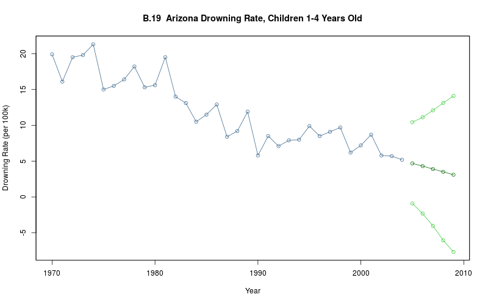
model$plot_y_tilde()
## TODO: put this into the model:
theta_1<- model$extract_par("theta_1", start=1, end=model$T_end())
lines(theta_1_mean ~ Year, data=theta_1, col="darkgreen", type="o")
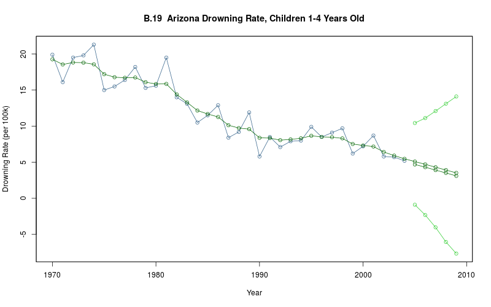
theta_2<- model$extract_par("theta_2", start=1, end=model$T_end()) par(mar=c(5,4,4,5)+.1) plot_ts(model$sheet(), fmla=`Drowning Rate (per 100k)` ~ `Year`) par(new=TRUE) plot( theta_2_mean ~ Year, data=theta_2 %>% filter(Year <= (get_t(model$sheet()) %>% max)), col="darkgreen", type="o", xaxt="n", yaxt="n", xlab="", ylab="" ) axis(4) # mtext("theta_2", side=4, line=3) legend("bottomleft", col=c("steelblue3","darkgreen"), lwd=2, legend=c("time series","theta_2"), inset=0.02)
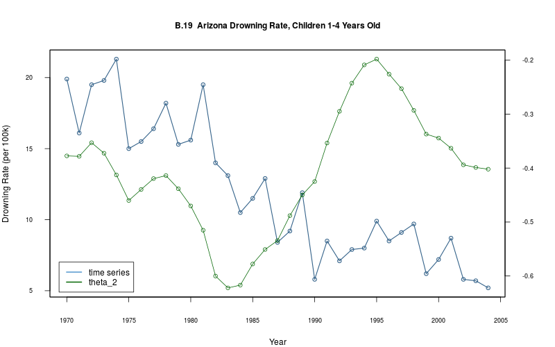
3.9 Mean-varying with seasonal, Normal shocks (a.k.a. “local model with stochastic seasonal”)
3.9.1 Create model
model<- make_model( sheet="B.5-BEV", model="mean-varying_seasonal_normal", T_new=NULL, seasonal=12, iter=5000, force=FALSE )
SAMPLING FOR MODEL 'mean-varying_seasonal_normal' NOW (CHAIN 1).
Chain 1, Iteration: 1 / 5000 [ 0%] (Warmup)
Chain 1, Iteration: 500 / 5000 [ 10%] (Warmup)
Chain 1, Iteration: 1000 / 5000 [ 20%] (Warmup)
Chain 1, Iteration: 1500 / 5000 [ 30%] (Warmup)
Chain 1, Iteration: 2000 / 5000 [ 40%] (Warmup)
Chain 1, Iteration: 2500 / 5000 [ 50%] (Warmup)
Chain 1, Iteration: 2501 / 5000 [ 50%] (Sampling)
Chain 1, Iteration: 3000 / 5000 [ 60%] (Sampling)
Chain 1, Iteration: 3500 / 5000 [ 70%] (Sampling)
Chain 1, Iteration: 4000 / 5000 [ 80%] (Sampling)
Chain 1, Iteration: 4500 / 5000 [ 90%] (Sampling)
Chain 1, Iteration: 5000 / 5000 [100%] (Sampling)#
# Elapsed Time: 50.1348 seconds (Warm-up)
# 228.302 seconds (Sampling)
# 278.437 seconds (Total)
#
SAMPLING FOR MODEL 'mean-varying_seasonal_normal' NOW (CHAIN 2).
Chain 2, Iteration: 1 / 5000 [ 0%] (Warmup)
Chain 2, Iteration: 500 / 5000 [ 10%] (Warmup)
Chain 2, Iteration: 1000 / 5000 [ 20%] (Warmup)
Chain 2, Iteration: 1500 / 5000 [ 30%] (Warmup)
Chain 2, Iteration: 2000 / 5000 [ 40%] (Warmup)
Chain 2, Iteration: 2500 / 5000 [ 50%] (Warmup)
Chain 2, Iteration: 2501 / 5000 [ 50%] (Sampling)
Chain 2, Iteration: 3000 / 5000 [ 60%] (Sampling)
Chain 2, Iteration: 3500 / 5000 [ 70%] (Sampling)
Chain 2, Iteration: 4000 / 5000 [ 80%] (Sampling)
Chain 2, Iteration: 4500 / 5000 [ 90%] (Sampling)
Chain 2, Iteration: 5000 / 5000 [100%] (Sampling)#
# Elapsed Time: 68.0167 seconds (Warm-up)
# 17.2331 seconds (Sampling)
# 85.2498 seconds (Total)
#
SAMPLING FOR MODEL 'mean-varying_seasonal_normal' NOW (CHAIN 3).
Chain 3, Iteration: 1 / 5000 [ 0%] (Warmup)
Chain 3, Iteration: 500 / 5000 [ 10%] (Warmup)
Chain 3, Iteration: 1000 / 5000 [ 20%] (Warmup)
Chain 3, Iteration: 1500 / 5000 [ 30%] (Warmup)
Chain 3, Iteration: 2000 / 5000 [ 40%] (Warmup)
Chain 3, Iteration: 2500 / 5000 [ 50%] (Warmup)
Chain 3, Iteration: 2501 / 5000 [ 50%] (Sampling)
Chain 3, Iteration: 3000 / 5000 [ 60%] (Sampling)
Chain 3, Iteration: 3500 / 5000 [ 70%] (Sampling)
Chain 3, Iteration: 4000 / 5000 [ 80%] (Sampling)
Chain 3, Iteration: 4500 / 5000 [ 90%] (Sampling)
Chain 3, Iteration: 5000 / 5000 [100%] (Sampling)#
# Elapsed Time: 172.868 seconds (Warm-up)
# 31.8761 seconds (Sampling)
# 204.744 seconds (Total)
#
The following numerical problems occured the indicated number of times after warmup on chain 3
count
Exception thrown at line 51: normal_log: Scale parameter is 0, but must be > 0! 1
When a numerical problem occurs, the Metropolis proposal gets rejected.
However, by design Metropolis proposals sometimes get rejected even when there are no numerical problems.
Thus, if the number in the 'count' column is small, do not ask about this message on stan-users.
Warning messages:
1: There were 2 divergent transitions after warmup. Increasing adapt_delta above 0.8 may help.
2: There were 694 transitions after warmup that exceeded the maximum treedepth. Increase max_treedepth above 10.
3: Examine the pairs() plot to diagnose sampling problems
plot_ts(sheet=model$sheet(), fmla=`USD (millions)` ~ `Month`)

3.9.2 Show Stan code
model$show_model_file()
functions {
real sum_constraint(vector x, int t, int Lambda) {
int t_start;
int t_end;
real s;
s<- 0;
// wind back from: (t-1) to: t-(Lambda-1)
t_start<- t-1;
t_end<- t-(Lambda-1);
for (i in t_start:t_end) {
s<- s - x[i];
}
return s;
}
}
data {
int<lower=12> T;
vector[T] y;
int<lower=12,upper=12> Lambda;
}
parameters {
vector[T] theta_1;
vector[T] s;
real<lower=0> sigma_1;
real<lower=0> sigma_2;
real<lower=0> sigma_3;
}
transformed parameters {
vector[T] ss;
for (t in 1:(Lambda-1)) {
ss[t]<- 0;
}
for (t in Lambda:T) {
ss[t]<- 0;
for (lambda in 1:(Lambda-1)) {
ss[t]<- ss[t] - s[t-lambda];
}
}
}
model {
for (t in 1:T) {
y[t] ~ normal(theta_1[t] + s[t], sigma_1);
}
for (t in 2:T) {
theta_1[t] ~ normal(theta_1[t-1], sigma_2);
}
for (t in Lambda:T) {
// s[t] ~ normal(-s[t-1]-s[t-2]-s[t-3]-s[t-4]-s[t-5]-s[t-6]-s[t-7]-s[t-8]-s[t-9]-s[t-10]-s[t-11], sigma_3);
s[t] ~ normal(ss[t], sigma_3);
// s[t] ~ normal(sum_constraint(s, t, Lambda), sigma_3);
}
// priors on initial values
theta_1[1] ~ normal(y[1], sigma_2);
// hyperparameters
sigma_1 ~ inv_gamma(0.001, 0.001);
sigma_2 ~ inv_gamma(0.001, 0.001);
sigma_3 ~ inv_gamma(0.001, 0.001);
}
cf. the model itself:
\begin{eqnarray} y_t &\sim& \mathscr{N}(\theta_{1,t} + s_t, \, \sigma_1^2) \\[3mm] \theta_{1,t+1} &\sim& \mathscr{N}(\theta_{1,t}, \, \sigma_2^2) \\[3mm] s_{t+1} &\sim& \mathscr{N}(-\sum_{\lambda = 1}^{\lambda = \Lambda } s_{t-\lambda}, \, \sigma_3^2), \;\;\;\;\;\mbox{each season \(s=s_t\), for \(s=1,\ldots,\Lambda\), e.g. \(\Lambda=12\) for monthly data} \\[3mm] &\Leftrightarrow& \\[3mm] y_t &=& \theta_{1,t} + \varepsilon_t, \;\;\;\;\; \varepsilon_t \;\sim\; \mathscr{N}(0, \, \sigma_1^2) \\[3mm] \theta_{1,t+1} &=& \theta_{1,t} + \eta_t, \;\;\;\;\; \eta_t \;\sim\; \mathscr{N}(0, \, \sigma_2^2) \\[3mm] s_{t+1} &=& -\sum_{\lambda = 1}^{\lambda = \Lambda } s_{t-\lambda} + \xi_t, \;\;\;\;\; \xi_t \;\sim\; \mathscr{N}(0, \, \sigma_3^2) \end{eqnarray}3.9.3 Fitted Stan model
model$fit()
Inference for Stan model: mean-varying_seasonal_normal.
3 chains, each with iter=5000; warmup=2500; thin=1;
post-warmup draws per chain=2500, total post-warmup draws=7500.
mean se_mean sd 2.5% 25% 50% 75% 97.5% n_eff Rhat
theta_1[1] 4008.90 3.33 68.46 3879.00 3963.33 4007.37 4053.16 4148.38 422 1.01
theta_1[2] 4241.07 4.92 65.13 4110.23 4198.42 4242.46 4284.83 4365.13 175 1.02
theta_1[3] 4346.13 7.33 62.15 4221.40 4304.67 4347.42 4387.92 4465.07 72 1.03
theta_1[4] 4319.13 5.91 59.69 4202.06 4279.84 4319.24 4358.53 4436.34 102 1.03
theta_1[5] 4261.42 1.55 57.64 4146.11 4223.29 4261.57 4299.97 4375.59 1378 1.01
theta_1[6] 4202.15 1.22 57.95 4086.95 4164.09 4201.91 4240.45 4313.40 2267 1.00
theta_1[7] 4186.82 1.47 57.69 4076.61 4147.72 4186.62 4225.48 4302.43 1536 1.00
theta_1[8] 4107.27 1.66 59.11 3989.43 4067.48 4106.70 4147.05 4224.39 1265 1.01
theta_1[9] 4167.03 1.21 57.89 4052.76 4127.59 4168.17 4205.54 4280.77 2298 1.00
theta_1[10] 4218.49 2.14 59.55 4100.47 4178.61 4219.02 4258.94 4335.92 775 1.01
theta_1[11] 4218.10 1.23 58.10 4102.94 4178.02 4218.73 4257.09 4330.89 2230 1.00
theta_1[12] 4236.93 1.18 58.28 4119.59 4198.62 4236.60 4275.43 4351.36 2460 1.00
theta_1[13] 4233.54 1.40 55.37 4127.70 4196.71 4232.35 4268.99 4347.13 1572 1.00
theta_1[14] 4200.80 1.92 57.47 4091.62 4161.92 4199.94 4238.47 4316.55 896 1.01
theta_1[15] 4137.17 2.12 55.42 4030.43 4099.77 4137.09 4173.09 4249.04 681 1.01
theta_1[16] 4168.29 1.21 53.36 4062.89 4133.77 4168.25 4203.54 4271.57 1951 1.00
theta_1[17] 4230.18 1.46 53.99 4125.68 4193.86 4230.22 4265.83 4335.93 1368 1.01
theta_1[18] 4256.77 1.23 53.52 4151.02 4221.07 4257.90 4292.61 4358.40 1892 1.00
theta_1[19] 4272.75 1.26 53.10 4169.17 4236.56 4272.96 4308.60 4377.15 1774 1.00
theta_1[20] 4307.60 1.37 52.93 4203.71 4271.99 4308.05 4343.19 4409.09 1487 1.01
theta_1[21] 4289.40 1.31 54.39 4181.36 4253.20 4290.22 4325.73 4395.32 1716 1.00
theta_1[22] 4201.35 1.86 58.01 4087.12 4162.26 4201.33 4240.74 4313.91 970 1.00
theta_1[23] 4284.57 1.21 53.08 4182.34 4248.68 4283.48 4320.12 4389.61 1936 1.00
theta_1[24] 4318.72 1.13 52.24 4218.80 4283.16 4318.13 4353.65 4422.17 2134 1.00
theta_1[25] 4303.10 2.24 52.74 4203.40 4267.59 4302.23 4337.20 4410.57 556 1.01
theta_1[26] 4398.17 1.70 54.21 4295.20 4360.90 4397.32 4433.29 4507.60 1016 1.00
theta_1[27] 4439.01 1.44 53.08 4334.42 4404.00 4438.15 4474.91 4542.69 1350 1.00
theta_1[28] 4422.95 1.15 51.83 4321.27 4387.79 4423.29 4458.40 4523.37 2046 1.00
theta_1[29] 4449.86 1.15 53.26 4345.69 4414.16 4450.64 4485.43 4551.73 2151 1.00
theta_1[30] 4512.33 1.66 52.98 4404.13 4476.41 4512.84 4548.99 4612.67 1021 1.01
theta_1[31] 4468.80 1.20 52.63 4363.61 4433.30 4469.71 4504.68 4569.59 1926 1.00
theta_1[32] 4444.95 2.74 53.63 4339.66 4408.71 4444.39 4480.16 4552.79 382 1.01
theta_1[33] 4431.14 1.63 53.07 4327.43 4394.89 4431.05 4467.45 4535.73 1058 1.01
theta_1[34] 4504.69 1.46 53.35 4397.58 4468.41 4505.63 4541.07 4607.67 1339 1.00
theta_1[35] 4547.98 1.36 52.95 4443.03 4512.83 4547.36 4582.60 4650.73 1513 1.00
theta_1[36] 4577.16 1.18 52.46 4474.84 4542.10 4576.27 4612.70 4679.29 1989 1.00
theta_1[37] 4525.41 1.76 52.57 4424.84 4490.70 4525.15 4559.15 4628.67 892 1.01
theta_1[38] 4540.57 1.61 52.83 4440.02 4504.01 4540.01 4575.44 4647.15 1072 1.00
theta_1[39] 4588.23 1.39 51.15 4487.09 4554.27 4588.13 4622.83 4689.01 1360 1.00
theta_1[40] 4585.21 1.04 50.85 4486.79 4550.46 4584.68 4619.72 4682.78 2403 1.00
theta_1[41] 4610.07 1.11 52.69 4509.05 4574.89 4609.00 4645.30 4715.14 2269 1.00
theta_1[42] 4665.27 1.10 51.38 4564.88 4630.37 4665.01 4700.11 4765.97 2164 1.00
theta_1[43] 4695.15 1.41 53.30 4591.38 4658.97 4696.36 4730.63 4800.40 1436 1.00
theta_1[44] 4867.66 3.20 57.73 4753.35 4829.46 4867.92 4906.14 4976.93 325 1.01
theta_1[45] 4805.04 1.80 53.66 4696.91 4769.89 4805.94 4841.61 4908.80 893 1.01
theta_1[46] 4768.78 1.22 51.18 4668.06 4734.46 4769.15 4803.26 4868.74 1760 1.00
theta_1[47] 4692.93 5.65 54.63 4590.93 4655.92 4691.18 4727.91 4803.29 94 1.03
theta_1[48] 4753.98 1.53 51.94 4651.95 4720.20 4753.04 4788.37 4858.22 1149 1.01
theta_1[49] 4845.77 1.87 53.04 4738.33 4811.95 4846.52 4881.30 4947.50 808 1.01
theta_1[50] 4813.01 1.36 52.81 4708.74 4777.92 4813.35 4847.38 4916.38 1507 1.00
theta_1[51] 4845.52 1.80 51.65 4747.08 4810.30 4844.43 4879.95 4949.95 824 1.01
theta_1[52] 4959.61 1.48 51.18 4858.49 4925.23 4959.20 4994.07 5061.76 1188 1.01
theta_1[53] 4992.80 1.49 52.83 4884.97 4958.34 4993.60 5028.18 5095.31 1256 1.01
theta_1[54] 5002.10 1.35 51.70 4899.06 4967.74 5002.10 5036.41 5102.83 1461 1.00
theta_1[55] 5066.15 1.67 52.97 4962.04 5030.02 5066.62 5101.89 5167.78 1005 1.01
theta_1[56] 4995.71 1.24 51.42 4897.03 4961.85 4994.90 5029.82 5097.74 1711 1.01
theta_1[57] 4988.76 1.34 51.32 4887.65 4953.67 4989.43 5022.94 5089.49 1464 1.00
theta_1[58] 4985.39 1.69 52.66 4883.16 4949.53 4985.65 5020.30 5087.72 975 1.00
theta_1[59] 5115.83 6.06 56.81 4999.64 5080.15 5116.50 5154.58 5223.75 88 1.03
theta_1[60] 5011.92 1.18 52.00 4910.00 4976.80 5012.13 5046.83 5113.29 1926 1.00
theta_1[61] 4892.95 6.52 54.59 4788.30 4855.82 4891.90 4928.96 5003.16 70 1.03
theta_1[62] 4933.63 1.58 50.92 4834.67 4899.13 4933.44 4967.22 5034.88 1045 1.00
theta_1[63] 5005.29 1.44 52.05 4901.21 4970.39 5005.50 5040.79 5107.81 1311 1.01
theta_1[64] 4997.17 1.12 50.83 4899.08 4962.56 4997.44 5030.28 5097.46 2066 1.00
theta_1[65] 5013.59 1.21 50.82 4914.42 4980.53 5013.90 5046.86 5113.82 1775 1.01
theta_1[66] 4992.03 1.34 52.31 4891.75 4956.28 4990.61 5027.30 5095.34 1522 1.00
theta_1[67] 5093.97 1.30 52.78 4992.44 5058.48 5093.65 5129.29 5200.75 1640 1.00
theta_1[68] 5114.16 1.09 50.11 5017.30 5081.60 5113.41 5146.78 5212.02 2098 1.00
theta_1[69] 5171.27 1.20 51.24 5070.44 5137.40 5171.83 5204.55 5274.13 1812 1.00
theta_1[70] 5264.91 1.83 53.89 5158.47 5228.95 5265.49 5300.91 5371.21 868 1.01
theta_1[71] 5223.99 1.27 51.68 5123.25 5189.22 5224.32 5258.95 5325.32 1643 1.00
theta_1[72] 5220.37 1.19 51.31 5117.30 5186.74 5220.73 5254.39 5320.65 1853 1.00
theta_1[73] 5239.72 1.76 51.07 5138.86 5206.25 5239.94 5273.95 5340.48 843 1.00
theta_1[74] 5220.09 1.36 50.86 5118.64 5187.42 5220.47 5253.92 5319.80 1398 1.00
theta_1[75] 5155.43 1.62 51.97 5054.58 5120.65 5155.38 5189.88 5259.63 1033 1.01
theta_1[76] 5186.90 1.40 50.83 5091.21 5152.45 5185.33 5220.59 5290.04 1314 1.00
theta_1[77] 5206.92 1.51 53.04 5100.13 5173.13 5207.76 5241.74 5312.39 1236 1.00
theta_1[78] 5281.74 1.54 51.90 5179.31 5246.93 5281.96 5316.28 5382.58 1131 1.01
theta_1[79] 5256.57 1.14 50.72 5153.88 5223.49 5256.82 5291.52 5356.78 1967 1.00
theta_1[80] 5241.61 1.23 50.61 5138.15 5207.83 5242.26 5275.56 5339.76 1686 1.00
theta_1[81] 5265.08 1.35 53.23 5159.07 5228.82 5266.08 5301.55 5366.23 1565 1.01
theta_1[82] 5178.00 1.87 52.91 5076.38 5143.26 5176.89 5212.15 5285.48 797 1.01
theta_1[83] 5053.38 5.17 54.96 4946.89 5016.81 5052.66 5089.94 5163.24 113 1.02
theta_1[84] 5101.88 1.26 50.59 5002.16 5067.69 5102.51 5136.98 5197.30 1618 1.00
theta_1[85] 5113.09 1.16 51.55 5012.69 5077.99 5113.19 5147.13 5215.27 1976 1.00
theta_1[86] 5131.33 1.42 51.47 5028.28 5097.38 5131.36 5166.27 5230.48 1319 1.00
theta_1[87] 5134.90 1.32 50.95 5036.15 5100.28 5134.02 5170.21 5235.04 1481 1.00
theta_1[88] 5149.68 1.43 52.41 5046.18 5116.17 5148.81 5184.72 5251.39 1349 1.00
theta_1[89] 5081.35 1.82 54.61 4969.43 5045.05 5081.44 5117.50 5186.30 897 1.00
theta_1[90] 5156.80 1.38 51.80 5058.02 5121.42 5155.95 5191.48 5259.56 1415 1.00
theta_1[91] 5140.22 1.17 50.76 5042.27 5106.41 5140.58 5174.64 5239.43 1896 1.00
theta_1[92] 5103.65 1.27 51.50 5002.66 5068.89 5103.13 5138.55 5206.34 1642 1.00
theta_1[93] 5137.62 2.28 52.09 5034.02 5102.68 5137.38 5171.94 5241.49 520 1.01
theta_1[94] 5183.43 1.36 51.93 5083.48 5148.42 5183.05 5218.27 5287.26 1453 1.00
theta_1[95] 5168.56 1.22 50.52 5068.89 5134.58 5169.02 5203.41 5264.58 1705 1.00
theta_1[96] 5142.02 1.63 54.96 5031.46 5106.08 5143.44 5179.29 5249.14 1139 1.00
theta_1[97] 5234.10 1.39 51.94 5132.10 5199.25 5234.15 5268.71 5335.08 1401 1.00
theta_1[98] 5220.93 1.45 51.39 5122.07 5186.33 5220.53 5254.19 5324.22 1261 1.00
theta_1[99] 5281.24 1.71 51.43 5178.93 5246.68 5281.81 5315.64 5380.12 905 1.01
theta_1[100] 5293.70 1.42 51.41 5190.16 5259.04 5294.16 5327.42 5395.58 1306 1.01
theta_1[101] 5244.37 1.17 51.91 5139.57 5210.64 5244.66 5279.08 5346.42 1964 1.00
theta_1[102] 5278.95 1.47 52.49 5175.97 5244.56 5278.73 5314.56 5380.98 1281 1.01
theta_1[103] 5174.92 2.57 53.65 5072.52 5138.35 5174.14 5211.05 5279.11 437 1.01
theta_1[104] 5219.61 2.14 51.68 5121.86 5184.49 5218.31 5252.67 5325.55 583 1.02
theta_1[105] 5357.08 2.14 54.16 5249.28 5321.26 5357.65 5393.92 5461.21 643 1.01
theta_1[106] 5324.66 1.20 51.63 5224.84 5289.45 5324.72 5358.71 5428.41 1864 1.00
theta_1[107] 5296.16 1.23 52.14 5196.07 5262.32 5295.20 5330.81 5400.69 1807 1.00
theta_1[108] 5230.78 1.92 56.21 5118.94 5193.61 5231.71 5268.49 5340.79 855 1.01
theta_1[109] 5323.17 1.44 52.77 5221.36 5287.48 5323.12 5357.59 5427.92 1334 1.00
theta_1[110] 5432.33 2.49 54.08 5323.63 5396.98 5432.32 5468.33 5539.27 470 1.02
theta_1[111] 5387.19 1.37 51.82 5286.68 5352.47 5387.70 5421.85 5488.92 1434 1.00
theta_1[112] 5331.84 1.88 53.13 5229.95 5296.34 5330.70 5366.20 5439.64 795 1.01
theta_1[113] 5425.03 1.52 53.31 5319.55 5390.23 5424.38 5460.65 5531.47 1233 1.00
theta_1[114] 5349.78 1.49 53.57 5245.67 5313.64 5350.34 5386.06 5454.57 1295 1.00
theta_1[115] 5466.24 1.25 51.61 5364.48 5431.59 5465.88 5500.61 5569.56 1703 1.00
theta_1[116] 5583.53 3.77 58.76 5467.77 5544.35 5582.58 5622.27 5697.57 243 1.02
theta_1[117] 5441.18 2.41 52.51 5340.77 5404.59 5441.13 5476.33 5544.94 474 1.02
theta_1[118] 5452.99 2.00 51.87 5351.48 5418.87 5452.33 5487.24 5556.32 671 1.01
theta_1[119] 5506.87 1.35 51.53 5401.91 5473.19 5507.97 5541.81 5607.38 1453 1.00
theta_1[120] 5467.74 1.34 52.21 5366.71 5432.96 5468.08 5502.43 5571.28 1514 1.01
theta_1[121] 5361.04 1.66 54.19 5254.61 5324.27 5361.27 5397.70 5467.21 1069 1.00
theta_1[122] 5383.19 1.35 51.49 5280.53 5349.07 5382.88 5417.04 5484.27 1465 1.00
theta_1[123] 5417.50 1.36 51.52 5314.18 5382.47 5417.99 5452.62 5514.01 1435 1.00
theta_1[124] 5442.21 1.82 51.87 5341.23 5407.25 5442.92 5476.58 5541.96 814 1.01
theta_1[125] 5391.72 1.23 51.97 5291.06 5356.31 5392.40 5426.42 5494.04 1787 1.00
theta_1[126] 5320.06 1.50 55.86 5206.96 5282.96 5320.11 5357.76 5429.06 1379 1.00
theta_1[127] 5407.54 1.37 52.40 5305.82 5372.58 5407.26 5441.46 5512.07 1465 1.00
theta_1[128] 5410.08 1.25 52.17 5307.65 5375.81 5409.73 5444.26 5512.97 1742 1.00
theta_1[129] 5385.92 1.56 52.46 5282.23 5350.80 5385.67 5420.72 5490.47 1124 1.01
theta_1[130] 5404.03 2.42 53.41 5299.11 5368.05 5403.40 5439.28 5511.65 488 1.02
theta_1[131] 5437.00 1.20 51.97 5333.52 5403.23 5436.82 5471.89 5537.79 1889 1.01
theta_1[132] 5496.02 1.11 51.50 5394.51 5462.78 5495.47 5530.17 5598.28 2165 1.00
theta_1[133] 5501.79 1.39 52.09 5398.69 5466.65 5501.85 5537.10 5603.33 1404 1.00
theta_1[134] 5541.19 2.07 54.36 5432.29 5505.98 5542.58 5579.10 5643.70 688 1.01
theta_1[135] 5571.36 1.57 52.00 5466.36 5537.90 5571.59 5606.75 5670.04 1090 1.00
theta_1[136] 5589.30 1.22 51.86 5489.07 5554.61 5588.94 5623.87 5692.32 1802 1.00
theta_1[137] 5588.63 1.26 50.95 5489.34 5553.88 5588.22 5622.94 5690.29 1641 1.00
theta_1[138] 5634.28 1.20 51.66 5532.12 5599.34 5634.17 5670.26 5732.86 1858 1.01
theta_1[139] 5646.12 1.32 51.72 5543.95 5611.94 5645.72 5680.01 5746.20 1534 1.00
theta_1[140] 5611.63 2.27 52.89 5510.91 5575.59 5610.75 5646.30 5717.07 544 1.02
theta_1[141] 5740.11 1.47 53.58 5636.58 5703.94 5739.42 5775.16 5846.59 1334 1.01
theta_1[142] 5805.82 1.64 54.70 5699.90 5768.78 5805.35 5842.11 5913.94 1111 1.00
theta_1[143] 5736.70 4.18 55.69 5631.68 5699.32 5734.83 5772.54 5849.12 178 1.03
theta_1[144] 5844.38 1.26 52.21 5742.08 5809.20 5844.00 5878.75 5948.91 1726 1.00
theta_1[145] 6005.88 4.90 54.62 5894.62 5970.43 6007.19 6042.72 6110.94 124 1.03
theta_1[146] 5962.01 2.00 59.06 5843.63 5922.66 5963.24 6002.63 6073.75 868 1.00
theta_1[147] 6087.51 2.25 53.92 5977.48 6052.31 6088.73 6123.22 6192.19 574 1.02
theta_1[148] 6096.03 1.21 52.83 5990.90 6059.98 6095.88 6131.47 6200.24 1902 1.00
theta_1[149] 6159.89 1.29 52.76 6053.14 6125.12 6159.94 6194.59 6264.11 1666 1.00
theta_1[150] 6165.34 1.14 52.27 6065.10 6129.44 6165.01 6200.55 6267.55 2111 1.00
theta_1[151] 6169.16 1.35 52.38 6065.76 6134.74 6168.72 6202.61 6275.48 1505 1.00
theta_1[152] 6236.05 1.66 53.05 6128.52 6201.78 6236.56 6271.20 6338.55 1022 1.01
theta_1[153] 6270.91 2.29 55.41 6157.37 6235.89 6271.39 6307.88 6377.78 584 1.01
theta_1[154] 6159.67 1.43 53.73 6056.43 6124.08 6158.70 6194.49 6267.07 1404 1.00
theta_1[155] 6082.71 1.18 53.23 5975.78 6047.10 6083.15 6118.36 6184.28 2020 1.00
theta_1[156] 5985.57 2.37 54.09 5881.99 5948.18 5984.11 6021.95 6092.49 520 1.01
theta_1[157] 5907.30 1.52 55.40 5797.66 5870.26 5907.18 5944.59 6016.54 1325 1.01
theta_1[158] 5931.47 1.61 55.86 5820.94 5895.15 5932.18 5969.55 6039.64 1200 1.00
theta_1[159] 5943.40 2.10 58.59 5825.59 5903.88 5943.93 5982.43 6059.87 779 1.01
theta_1[160] 6152.33 3.31 56.67 6040.59 6114.14 6152.46 6191.31 6262.44 294 1.02
theta_1[161] 6169.16 3.46 55.40 6063.38 6132.31 6168.10 6205.17 6280.35 256 1.02
theta_1[162] 6313.29 1.20 53.54 6211.60 6276.04 6313.93 6349.42 6417.35 2004 1.00
theta_1[163] 6451.88 8.10 58.89 6330.93 6413.94 6453.37 6491.97 6561.31 53 1.04
theta_1[164] 6374.96 1.25 52.86 6273.46 6338.90 6374.27 6411.42 6478.32 1791 1.00
theta_1[165] 6372.85 1.25 53.42 6267.58 6337.75 6372.42 6407.71 6480.50 1828 1.00
theta_1[166] 6390.42 1.28 54.18 6283.54 6354.44 6390.41 6427.00 6495.04 1804 1.00
theta_1[167] 6389.40 3.76 55.37 6281.18 6351.64 6389.26 6427.17 6498.15 217 1.02
theta_1[168] 6476.99 1.61 57.09 6367.51 6438.23 6476.86 6515.82 6587.79 1259 1.01
theta_1[169] 6368.94 1.71 60.96 6247.98 6328.97 6369.55 6410.28 6489.29 1268 1.00
theta_1[170] 6357.28 1.83 60.01 6239.10 6317.12 6357.74 6397.51 6474.30 1072 1.00
theta_1[171] 6382.02 1.67 58.69 6265.66 6342.14 6383.25 6421.80 6494.72 1240 1.01
theta_1[172] 6387.83 1.48 59.34 6270.60 6349.01 6388.52 6426.33 6506.10 1601 1.00
theta_1[173] 6560.83 1.93 63.98 6440.39 6517.79 6559.01 6602.46 6691.09 1099 1.01
theta_1[174] 6535.55 1.46 59.69 6417.82 6495.43 6534.97 6575.85 6653.61 1680 1.00
theta_1[175] 6418.12 1.55 60.25 6299.82 6378.77 6418.69 6458.19 6536.35 1504 1.01
theta_1[176] 6490.19 1.67 59.66 6371.19 6450.63 6489.57 6529.83 6609.65 1272 1.00
theta_1[177] 6455.20 1.65 59.19 6337.48 6416.32 6456.02 6494.32 6571.90 1292 1.01
theta_1[178] 6546.10 1.24 57.12 6436.01 6507.71 6545.81 6583.85 6661.77 2112 1.00
theta_1[179] 6699.21 2.25 68.05 6570.05 6652.82 6698.82 6743.59 6835.63 912 1.01
theta_1[180] 6607.28 2.48 70.48 6473.84 6558.83 6606.11 6654.11 6749.21 811 1.01
s[1] -521.12 10.97 72.92 -668.83 -569.71 -518.55 -470.64 -383.31 44 1.06
s[2] -455.10 1.80 60.25 -570.66 -497.12 -455.55 -413.92 -336.99 1119 1.00
s[3] -30.00 1.45 56.55 -139.05 -67.88 -29.68 7.68 83.31 1521 1.00
s[4] -71.71 3.12 57.64 -186.46 -110.30 -71.88 -32.73 40.29 341 1.02
s[5] 398.16 1.25 56.42 287.11 359.75 397.85 435.78 509.36 2042 1.01
s[6] 613.32 1.51 56.48 502.06 575.51 613.17 650.06 724.31 1403 1.00
s[7] 254.01 2.96 58.15 140.96 214.36 254.04 292.93 369.52 385 1.02
s[8] 359.15 3.48 58.75 243.77 320.17 358.90 397.88 473.76 285 1.02
s[9] 174.28 1.52 56.60 65.02 136.48 173.21 212.31 284.62 1379 1.00
s[10] -154.42 1.92 58.38 -270.94 -193.45 -154.18 -114.90 -41.71 924 1.00
s[11] -215.26 1.31 57.32 -326.47 -254.10 -216.23 -176.09 -99.90 1904 1.00
s[12] -305.52 1.28 56.45 -412.77 -343.73 -306.18 -268.16 -190.11 1951 1.00
s[13] -586.49 3.60 53.47 -695.46 -622.27 -585.06 -550.05 -482.55 220 1.02
s[14] -436.42 3.81 55.88 -547.40 -474.19 -435.90 -396.99 -331.03 215 1.02
s[15] -45.99 1.38 51.45 -147.37 -80.18 -46.43 -12.51 57.04 1381 1.00
s[16] -61.36 3.15 52.52 -163.19 -96.32 -61.48 -26.12 41.30 278 1.02
s[17] 395.77 1.25 51.53 295.38 361.63 395.22 431.40 495.28 1699 1.01
s[18] 639.22 1.29 50.83 542.66 604.43 638.34 673.27 738.63 1556 1.00
s[19] 204.20 1.28 50.61 102.99 169.74 203.45 239.47 303.54 1553 1.00
s[20] 415.12 1.28 49.80 319.54 381.03 415.48 448.88 512.67 1517 1.00
s[21] 162.28 1.41 50.98 63.41 127.78 161.16 196.72 265.83 1308 1.01
s[22] -179.06 6.90 58.77 -294.72 -219.46 -179.09 -139.35 -63.77 73 1.03
s[23] -193.36 1.26 50.59 -290.86 -227.95 -192.83 -159.38 -95.19 1609 1.00
s[24] -269.16 4.51 51.38 -369.67 -303.64 -269.84 -233.42 -168.18 130 1.02
s[25] -651.73 1.19 48.66 -748.57 -684.01 -651.48 -619.50 -555.73 1679 1.00
s[26] -438.33 3.40 52.59 -541.49 -474.78 -437.81 -401.31 -337.46 240 1.02
s[27] -28.12 1.50 49.93 -125.04 -62.50 -28.14 5.59 70.41 1105 1.00
s[28] -50.74 3.08 50.24 -148.93 -85.39 -50.27 -16.82 45.69 266 1.01
s[29] 375.79 4.02 51.38 276.28 341.19 375.44 410.48 475.87 163 1.02
s[30] 665.72 1.92 50.81 568.91 630.67 665.20 700.45 765.26 697 1.01
s[31] 173.10 1.73 50.45 75.30 138.56 173.33 207.12 272.99 852 1.01
s[32] 457.95 3.34 50.80 359.25 423.36 457.61 492.10 557.70 231 1.02
s[33] 107.09 1.83 49.60 9.00 72.98 107.56 141.22 202.66 738 1.01
s[34] -122.87 1.44 49.74 -219.17 -156.52 -123.09 -89.13 -25.76 1186 1.00
s[35] -210.40 1.24 49.47 -306.89 -243.57 -210.09 -176.90 -113.12 1597 1.00
s[36] -259.63 4.69 51.21 -360.63 -294.49 -259.83 -224.57 -159.87 119 1.02
s[37] -661.92 1.31 48.46 -758.86 -694.40 -661.70 -629.04 -569.41 1368 1.00
s[38] -465.87 1.37 49.25 -560.58 -498.93 -466.25 -432.91 -368.90 1289 1.00
s[39] -30.30 1.64 48.38 -124.49 -62.68 -30.07 2.06 64.67 867 1.01
s[40] -21.18 1.30 48.15 -116.33 -53.61 -19.86 11.74 72.18 1382 1.01
s[41] 378.29 2.15 50.59 277.75 345.44 378.36 411.90 477.29 553 1.01
s[42] 647.28 1.31 48.50 552.31 614.01 647.32 679.75 742.34 1374 1.00
s[43] 160.61 4.82 50.89 62.76 126.20 160.50 194.93 259.42 112 1.02
s[44] 490.11 7.40 56.62 380.77 450.59 492.17 529.63 596.82 59 1.06
s[45] 86.85 3.38 51.29 -13.50 51.62 87.06 121.38 189.45 230 1.02
s[46] -90.89 1.31 48.10 -185.50 -122.68 -90.38 -58.84 3.48 1355 1.00
s[47] -213.53 1.35 48.64 -312.19 -246.16 -213.47 -181.03 -118.65 1293 1.00
s[48] -288.65 1.19 48.10 -384.09 -321.11 -288.59 -257.36 -192.82 1623 1.00
s[49] -640.10 1.90 48.91 -736.75 -673.31 -639.90 -607.67 -543.68 662 1.01
s[50] -484.27 1.51 48.86 -579.82 -516.76 -484.53 -451.66 -386.76 1043 1.00
s[51] -59.38 1.27 47.04 -152.05 -91.59 -58.38 -27.29 30.77 1369 1.00
s[52] 21.16 1.23 47.58 -73.79 -10.99 21.55 53.77 112.12 1501 1.00
s[53] 388.31 1.43 49.05 291.96 355.14 387.88 421.17 483.64 1182 1.01
s[54] 593.48 2.44 49.28 495.68 560.78 594.18 626.39 690.47 409 1.02
s[55] 242.08 2.70 50.72 142.19 207.92 241.43 276.88 340.85 353 1.02
s[56] 413.15 1.16 47.01 322.29 381.24 413.21 443.97 507.89 1655 1.00
s[57] 118.68 1.34 48.38 23.35 86.72 117.70 151.35 212.81 1312 1.00
s[58] -102.51 2.04 50.00 -199.75 -136.30 -101.58 -67.76 -6.04 598 1.01
s[59] -162.20 5.62 51.77 -263.58 -197.43 -162.45 -126.48 -61.81 85 1.03
s[60] -307.83 1.15 47.24 -400.80 -339.39 -307.76 -275.54 -215.89 1699 1.00
s[61] -683.40 1.84 49.26 -778.34 -717.34 -683.32 -650.66 -586.15 713 1.01
s[62] -470.21 1.34 47.57 -561.68 -502.46 -470.90 -438.02 -376.04 1267 1.00
s[63] -56.02 1.49 48.12 -150.41 -88.51 -55.54 -23.71 38.21 1038 1.00
s[64] 25.22 1.09 46.35 -66.01 -5.41 24.39 56.63 115.25 1804 1.00
s[65] 393.89 1.78 48.50 298.05 361.50 394.03 426.65 487.73 740 1.01
s[66] 584.57 3.71 49.14 487.84 551.09 584.98 617.84 679.56 175 1.02
s[67] 257.21 4.52 51.29 157.34 222.64 257.37 292.74 355.76 129 1.03
s[68] 381.25 1.71 46.86 288.96 349.74 380.84 411.94 472.88 749 1.01
s[69] 117.12 1.33 48.39 19.82 85.05 116.27 149.89 211.32 1315 1.00
s[70] -22.83 5.35 51.15 -124.27 -57.34 -23.42 12.78 76.53 92 1.03
s[71] -218.91 1.33 47.61 -313.21 -251.10 -217.95 -186.78 -127.70 1285 1.00
s[72] -322.36 1.25 47.66 -416.23 -354.31 -321.90 -291.03 -226.74 1461 1.00
s[73] -666.82 1.31 47.45 -760.85 -698.18 -666.55 -635.38 -574.01 1305 1.00
s[74] -460.51 1.65 47.43 -552.39 -492.16 -461.35 -429.16 -366.35 825 1.00
s[75] -93.40 1.70 48.32 -186.88 -125.94 -92.99 -60.81 -0.25 808 1.01
s[76] 61.66 1.95 48.24 -31.26 28.16 61.65 94.09 157.22 614 1.01
s[77] 359.90 6.33 53.42 254.90 325.01 358.66 394.67 467.55 71 1.04
s[78] 638.21 1.89 49.26 542.65 605.08 637.39 671.47 734.67 683 1.01
s[79] 218.77 1.23 47.38 127.26 185.74 218.10 251.19 311.82 1494 1.00
s[80] 366.52 2.92 48.26 270.28 334.23 366.70 399.58 459.34 273 1.02
s[81] 148.91 3.17 50.80 50.54 114.04 148.21 183.83 247.25 258 1.02
s[82] -6.19 4.71 51.14 -108.34 -40.60 -5.99 27.74 94.92 118 1.03
s[83] -243.04 3.93 51.72 -346.44 -277.87 -241.94 -207.78 -144.92 173 1.02
s[84] -326.80 1.28 47.08 -419.72 -358.24 -326.84 -294.94 -235.60 1359 1.00
s[85] -662.69 1.20 47.63 -756.60 -694.54 -663.56 -629.91 -568.83 1565 1.00
s[86] -474.23 1.45 47.42 -567.37 -506.09 -474.50 -442.36 -380.58 1066 1.00
s[87] -89.81 1.56 47.28 -183.36 -123.54 -88.54 -57.90 -1.12 915 1.01
s[88] 73.21 2.71 50.20 -23.74 39.10 73.21 107.66 172.14 343 1.02
s[89] 358.82 9.12 57.58 251.15 319.73 357.24 397.17 476.51 40 1.07
s[90] 645.87 4.82 51.62 544.64 610.88 646.58 681.47 745.01 115 1.03
s[91] 198.21 1.16 47.61 105.01 166.50 197.96 229.18 292.48 1688 1.00
s[92] 379.23 2.05 48.45 284.14 347.35 379.26 412.11 473.31 560 1.01
s[93] 139.71 2.57 49.38 42.43 106.30 139.96 172.85 239.19 371 1.02
s[94] -7.52 4.19 50.75 -106.83 -42.06 -6.88 27.16 90.07 147 1.02
s[95] -194.38 1.16 47.72 -286.05 -226.61 -194.58 -162.04 -100.80 1697 1.00
s[96] -378.18 5.88 55.06 -483.59 -416.26 -378.98 -340.52 -270.41 88 1.04
s[97] -644.37 2.20 48.73 -738.82 -677.72 -644.45 -611.39 -550.21 489 1.02
s[98] -496.93 1.53 47.46 -589.77 -528.80 -496.79 -464.99 -405.15 964 1.00
s[99] -68.26 1.46 48.08 -163.07 -100.23 -67.87 -36.21 25.69 1088 1.00
s[100] 35.42 1.39 48.10 -60.48 4.05 34.35 67.44 131.93 1198 1.00
s[101] 429.31 4.87 50.42 330.53 395.36 429.38 462.41 530.40 107 1.03
s[102] 607.79 2.41 49.76 510.15 573.56 607.95 640.88 706.03 427 1.02
s[103] 171.12 4.32 50.12 71.95 136.91 172.45 205.50 267.34 135 1.02
s[104] 415.20 1.13 46.41 322.60 384.01 415.61 446.69 504.78 1684 1.00
s[105] 138.52 4.85 52.06 37.52 103.41 138.50 173.97 240.68 115 1.03
s[106] -33.10 1.46 48.42 -127.48 -65.42 -33.09 -0.22 63.11 1106 1.00
s[107] -157.82 3.73 49.02 -253.27 -190.66 -157.98 -125.44 -62.62 173 1.02
s[108] -371.52 5.70 55.54 -480.42 -410.11 -371.64 -333.13 -261.24 95 1.03
s[109] -694.91 1.34 48.49 -792.60 -727.84 -694.77 -661.29 -601.43 1315 1.00
s[110] -465.97 1.81 49.17 -559.21 -499.92 -466.38 -432.24 -369.59 742 1.01
s[111] -67.02 1.41 48.17 -160.10 -100.01 -67.73 -34.48 26.79 1160 1.00
s[112] -27.27 3.96 49.26 -125.12 -60.72 -27.34 5.70 66.93 155 1.02
s[113] 560.03 5.47 52.97 455.45 524.73 560.54 596.20 663.13 94 1.03
s[114] 481.03 7.96 54.51 376.16 443.44 480.74 518.41 584.79 47 1.06
s[115] 204.79 1.25 47.66 108.88 173.69 205.43 236.63 297.67 1457 1.00
s[116] 492.19 8.21 57.99 380.92 450.75 492.33 533.18 604.12 50 1.06
s[117] 55.53 2.29 49.62 -40.68 21.60 56.03 89.20 151.33 469 1.01
s[118] -20.83 1.55 48.40 -115.45 -53.90 -20.82 11.59 74.66 971 1.01
s[119] -160.69 3.36 48.65 -256.08 -193.37 -161.88 -128.01 -63.50 209 1.02
s[120] -306.00 1.15 47.78 -400.91 -337.94 -305.59 -273.68 -214.53 1724 1.00
s[121] -739.82 4.33 52.40 -842.85 -775.10 -740.10 -704.28 -638.82 147 1.02
s[122] -493.02 1.33 47.76 -585.11 -525.02 -493.30 -461.64 -397.35 1281 1.00
s[123] -66.16 1.45 48.06 -157.55 -98.62 -66.31 -34.41 32.38 1104 1.00
s[124] -7.88 1.34 47.81 -101.09 -40.66 -7.69 24.08 86.44 1265 1.00
s[125] 574.15 1.99 49.58 475.55 540.31 574.21 609.37 668.44 622 1.01
s[126] 448.78 8.23 55.68 340.44 409.79 448.49 487.04 557.91 46 1.06
s[127] 252.73 2.40 50.35 154.30 219.20 253.56 286.79 348.40 440 1.02
s[128] 446.94 1.32 48.19 351.88 415.19 446.57 479.25 542.16 1340 1.01
s[129] 68.05 1.40 48.30 -24.79 35.64 67.71 100.61 163.47 1192 1.00
s[130] -2.81 2.64 50.37 -103.41 -36.01 -2.78 31.17 95.44 364 1.02
s[131] -193.39 1.16 48.28 -288.15 -225.73 -193.94 -161.23 -96.98 1742 1.00
s[132] -273.26 1.15 47.96 -368.50 -305.53 -273.59 -241.31 -179.50 1741 1.00
s[133] -729.24 1.54 49.10 -824.61 -763.19 -729.44 -695.12 -633.89 1015 1.01
s[134] -535.54 2.29 50.61 -635.20 -570.45 -536.36 -501.42 -435.08 488 1.01
s[135] -55.57 1.49 48.31 -148.17 -88.03 -55.80 -23.81 42.20 1050 1.00
s[136] -15.08 1.24 48.13 -110.29 -47.40 -14.41 17.36 80.07 1505 1.00
s[137] 574.09 1.24 48.05 480.97 541.62 573.80 606.80 667.92 1514 1.00
s[138] 486.22 1.26 48.96 390.31 453.18 486.84 519.70 582.79 1506 1.01
s[139] 248.37 2.19 49.39 152.59 215.63 248.47 281.48 346.28 509 1.01
s[140] 399.39 4.28 50.24 302.55 365.30 399.76 433.86 495.65 138 1.02
s[141] 95.45 3.49 50.57 -7.36 62.23 96.32 129.37 193.99 210 1.02
s[142] 12.67 6.93 55.11 -97.20 -23.54 13.87 49.87 119.54 63 1.05
s[143] -213.13 2.63 51.56 -315.63 -247.77 -212.26 -177.81 -113.43 384 1.01
s[144] -267.76 1.11 48.48 -362.96 -300.57 -267.86 -234.52 -171.12 1897 1.00
s[145] -694.36 2.91 50.35 -792.87 -728.64 -694.39 -660.65 -595.23 300 1.02
s[146] -589.60 8.65 62.82 -706.87 -633.63 -591.10 -546.87 -463.77 53 1.06
s[147] -41.36 1.56 49.73 -138.35 -74.40 -41.88 -9.03 56.97 1022 1.00
s[148] -36.95 1.23 49.88 -132.69 -70.57 -37.45 -3.18 63.39 1656 1.00
s[149] 604.48 1.73 50.24 507.93 570.53 603.89 638.83 704.16 845 1.01
s[150] 504.45 1.21 49.44 407.18 470.15 504.88 538.38 599.47 1680 1.00
s[151] 209.77 1.24 48.59 113.35 177.93 209.34 241.91 306.28 1538 1.00
s[152] 427.85 1.40 48.38 332.05 396.41 427.87 461.21 522.21 1186 1.01
s[153] 96.45 4.85 52.05 -7.57 62.08 96.75 130.68 197.43 115 1.03
s[154] -41.17 1.49 50.02 -140.40 -74.35 -40.58 -7.12 55.70 1123 1.00
s[155] -156.51 1.20 49.21 -251.23 -189.19 -156.54 -124.40 -58.45 1682 1.00
s[156] -235.28 2.90 51.33 -335.27 -270.52 -235.83 -200.58 -134.19 314 1.01
s[157] -772.60 2.92 54.04 -878.34 -809.51 -773.64 -735.48 -668.57 344 1.02
s[158] -530.84 2.06 53.68 -634.31 -567.23 -531.45 -494.89 -422.84 680 1.01
s[159] -106.34 7.06 58.85 -220.12 -146.73 -106.32 -66.73 9.05 69 1.05
s[160] -5.62 2.57 54.29 -111.42 -42.41 -5.71 31.03 100.43 448 1.01
s[161] 603.10 1.31 51.48 500.89 568.62 603.46 637.40 703.39 1536 1.00
s[162] 520.07 1.20 50.66 421.75 485.55 520.12 555.36 616.26 1781 1.00
s[163] 206.04 1.45 52.30 103.78 171.53 205.79 240.83 308.77 1293 1.01
s[164] 450.90 1.48 50.21 351.20 416.80 451.44 485.32 547.67 1154 1.01
s[165] 49.57 1.40 50.72 -51.54 15.28 49.88 83.50 149.51 1305 1.00
s[166] -53.26 1.45 50.80 -156.58 -87.21 -53.24 -18.01 44.51 1227 1.01
s[167] -119.21 1.71 52.91 -219.64 -156.44 -120.34 -83.43 -14.64 959 1.01
s[168] -206.51 7.68 59.09 -322.51 -246.15 -205.76 -166.94 -92.94 59 1.05
s[169] -816.58 7.03 65.26 -945.09 -861.62 -817.02 -773.61 -689.23 86 1.04
s[170] -531.76 2.25 59.27 -647.08 -571.91 -532.10 -491.59 -417.20 694 1.01
s[171] -64.51 1.66 57.28 -174.23 -102.91 -64.99 -27.52 50.10 1192 1.00
s[172] -102.22 7.62 61.40 -222.41 -143.03 -104.36 -60.96 19.73 65 1.04
s[173] 686.20 8.06 69.50 546.00 639.75 689.29 733.58 816.45 74 1.04
s[174] 550.58 2.11 59.38 437.35 509.57 549.94 590.87 667.64 791 1.01
s[175] 108.12 8.19 62.15 -13.09 65.23 107.38 150.37 230.91 58 1.04
s[176] 537.50 6.50 61.92 414.02 495.81 537.73 579.51 657.76 91 1.04
s[177] -0.51 3.96 59.14 -114.77 -40.17 -1.96 38.00 116.92 223 1.02
s[178] -93.16 1.57 56.48 -205.79 -132.05 -92.95 -54.82 17.09 1301 1.00
s[179] -10.34 13.54 76.95 -165.59 -61.58 -7.42 43.36 132.45 32 1.09
s[180] -278.68 1.41 65.97 -411.43 -322.50 -278.14 -233.66 -152.99 2205 1.00
sigma_1 24.43 14.64 26.43 0.41 2.32 10.26 44.94 83.28 3 1.69
sigma_2 105.16 2.11 12.60 83.61 96.41 104.11 112.48 132.80 36 1.04
sigma_3 43.22 2.62 11.60 18.91 35.69 44.64 51.57 62.98 20 1.16
ss[1] 0.00 0.00 0.00 0.00 0.00 0.00 0.00 0.00 7500 NaN
ss[2] 0.00 0.00 0.00 0.00 0.00 0.00 0.00 0.00 7500 NaN
ss[3] 0.00 0.00 0.00 0.00 0.00 0.00 0.00 0.00 7500 NaN
ss[4] 0.00 0.00 0.00 0.00 0.00 0.00 0.00 0.00 7500 NaN
ss[5] 0.00 0.00 0.00 0.00 0.00 0.00 0.00 0.00 7500 NaN
ss[6] 0.00 0.00 0.00 0.00 0.00 0.00 0.00 0.00 7500 NaN
ss[7] 0.00 0.00 0.00 0.00 0.00 0.00 0.00 0.00 7500 NaN
ss[8] 0.00 0.00 0.00 0.00 0.00 0.00 0.00 0.00 7500 NaN
ss[9] 0.00 0.00 0.00 0.00 0.00 0.00 0.00 0.00 7500 NaN
ss[10] 0.00 0.00 0.00 0.00 0.00 0.00 0.00 0.00 7500 NaN
ss[11] 0.00 0.00 0.00 0.00 0.00 0.00 0.00 0.00 7500 NaN
ss[12] -351.30 1.78 73.36 -502.17 -398.59 -350.73 -300.90 -210.51 1703 1.00
ss[13] -566.91 6.55 61.13 -686.87 -607.73 -567.16 -525.28 -445.79 87 1.03
ss[14] -435.51 3.21 61.95 -552.57 -478.73 -435.54 -392.84 -315.34 372 1.01
ss[15] -29.10 1.50 57.62 -141.21 -67.32 -29.47 9.02 83.36 1478 1.00
ss[16] -54.82 1.89 57.92 -171.85 -93.44 -54.14 -14.50 55.31 939 1.01
ss[17] 404.70 1.22 56.71 295.14 366.72 404.22 442.65 517.16 2178 1.00
ss[18] 622.25 1.39 56.60 512.25 584.67 621.43 660.17 734.53 1661 1.00
ss[19] 237.03 1.70 57.40 124.32 197.53 236.93 275.47 350.59 1144 1.01
ss[20] 391.99 1.39 56.30 280.65 353.65 392.26 430.80 500.95 1648 1.00
ss[21] 151.14 1.26 56.86 40.33 113.42 150.10 188.81 265.72 2043 1.00
ss[22] -165.55 2.85 60.80 -287.84 -206.61 -165.12 -123.83 -49.51 455 1.01
ss[23] -201.76 1.17 56.29 -312.96 -239.27 -202.39 -164.03 -91.58 2306 1.00
ss[24] -313.91 1.25 56.04 -421.20 -351.93 -314.04 -276.95 -201.72 2008 1.00
ss[25] -631.24 1.17 52.68 -735.87 -665.27 -631.65 -596.83 -526.96 2033 1.00
ss[26] -415.93 6.51 60.14 -532.84 -456.55 -416.50 -374.88 -296.76 85 1.03
ss[27] -23.59 1.52 53.96 -128.05 -60.32 -23.98 12.05 84.15 1264 1.00
ss[28] -56.83 3.27 54.67 -168.84 -92.91 -56.19 -20.62 47.99 279 1.02
ss[29] 389.69 1.31 54.00 286.43 353.29 388.70 426.75 495.28 1696 1.01
ss[30] 653.12 1.58 53.54 551.07 616.54 652.21 689.41 760.01 1146 1.00
ss[31] 191.60 1.39 53.33 84.99 156.01 192.24 226.81 295.80 1464 1.00
ss[32] 433.63 1.42 53.51 334.13 396.91 433.07 470.00 539.34 1428 1.01
ss[33] 137.96 1.17 52.78 35.09 102.26 138.31 173.92 242.45 2044 1.00
ss[34] -148.20 2.52 56.94 -260.31 -187.22 -147.90 -108.49 -39.16 509 1.01
ss[35] -218.69 1.37 53.33 -324.91 -254.37 -217.34 -182.76 -115.42 1522 1.00
ss[36] -277.44 2.40 53.91 -380.30 -314.89 -278.34 -242.04 -168.78 504 1.01
ss[37] -669.55 1.61 52.62 -778.28 -704.37 -668.30 -633.91 -570.39 1073 1.00
ss[38] -445.96 1.99 52.98 -547.34 -482.53 -446.15 -409.85 -342.18 712 1.01
ss[39] -8.21 2.26 54.32 -111.36 -45.65 -8.93 28.47 100.82 577 1.01
ss[40] -28.66 1.38 52.13 -132.48 -64.33 -27.70 6.73 72.67 1431 1.00
ss[41] 368.31 4.03 54.87 260.09 332.02 368.31 405.18 473.60 185 1.02
ss[42] 655.74 1.61 52.95 553.75 619.48 655.80 691.33 760.31 1078 1.00
ss[43] 181.56 1.41 52.26 78.76 146.27 181.36 217.07 283.95 1368 1.00
ss[44] 478.90 6.09 57.13 370.92 438.27 478.46 518.08 594.15 88 1.04
ss[45] 95.88 3.23 54.53 -14.15 59.47 96.80 133.33 201.93 285 1.02
ss[46] -113.84 1.52 52.61 -222.72 -147.97 -113.95 -78.66 -11.56 1202 1.00
ss[47] -233.36 1.60 52.52 -339.04 -268.12 -232.54 -197.66 -133.62 1081 1.00
ss[48] -279.46 2.28 52.36 -378.22 -315.43 -280.67 -244.37 -174.50 526 1.01
ss[49] -652.72 1.20 50.71 -751.31 -686.67 -652.75 -618.90 -552.82 1800 1.00
ss[50] -478.50 1.36 52.45 -581.29 -513.96 -478.89 -442.91 -376.21 1486 1.00
ss[51] -24.52 1.78 51.60 -124.81 -59.64 -25.20 9.32 79.16 840 1.01
ss[52] 13.68 1.16 51.14 -84.32 -21.01 12.56 48.52 113.04 1955 1.00
ss[53] 370.81 2.77 53.08 265.48 335.55 371.89 406.11 475.14 368 1.01
ss[54] 629.78 1.18 50.97 528.43 595.23 629.81 663.82 731.19 1879 1.00
ss[55] 196.91 1.29 51.19 97.64 162.20 196.24 231.12 299.73 1585 1.00
ss[56] 444.94 2.27 52.60 344.82 409.54 444.51 480.47 548.29 539 1.01
ss[57] 118.65 1.49 52.30 16.64 83.71 119.13 152.94 221.74 1230 1.00
ss[58] -90.92 1.45 50.83 -190.99 -125.24 -91.15 -57.01 9.78 1237 1.00
ss[59] -201.94 1.32 50.90 -302.00 -236.17 -202.13 -167.77 -101.30 1485 1.00
ss[60] -328.39 1.48 52.92 -433.99 -362.01 -327.72 -293.50 -225.77 1273 1.00
ss[61] -660.66 1.25 51.29 -759.60 -694.77 -660.88 -626.52 -557.38 1690 1.00
ss[62] -461.53 1.36 52.22 -563.55 -496.56 -462.59 -426.56 -358.76 1471 1.00
ss[63] -50.70 1.32 50.81 -152.48 -84.28 -50.47 -16.42 49.55 1481 1.00
ss[64] 26.48 1.14 50.13 -71.19 -6.43 26.64 59.29 124.57 1942 1.00
ss[65] 389.57 1.26 51.69 287.94 354.53 389.49 424.46 490.51 1671 1.00
ss[66] 589.17 2.25 51.75 487.19 555.07 589.65 624.78 688.78 527 1.01
ss[67] 246.67 2.76 53.55 144.20 210.32 245.94 283.44 353.23 376 1.02
ss[68] 402.60 1.18 50.18 305.48 368.89 402.11 434.99 504.22 1809 1.00
ss[69] 140.03 1.41 52.36 38.74 104.85 139.88 173.80 244.46 1375 1.00
ss[70] -79.60 1.37 51.50 -183.72 -113.85 -78.27 -45.93 21.19 1403 1.00
ss[71] -218.98 1.18 51.05 -320.21 -253.15 -218.20 -184.07 -119.51 1886 1.00
ss[72] -307.90 1.18 50.65 -406.78 -341.64 -308.23 -273.69 -206.95 1850 1.00
ss[73] -668.93 1.33 51.19 -771.87 -702.21 -668.76 -634.86 -567.62 1489 1.00
ss[74] -472.32 1.35 51.24 -573.20 -506.70 -472.40 -437.90 -372.40 1434 1.00
ss[75] -67.83 1.40 51.13 -167.41 -102.13 -67.68 -33.72 31.19 1331 1.00
ss[76] 50.79 1.44 50.74 -49.23 16.33 49.79 84.66 150.85 1243 1.00
ss[77] 383.02 2.41 51.92 279.82 348.48 383.99 418.04 482.13 465 1.01
ss[78] 607.69 1.10 51.30 504.19 573.16 607.10 641.19 711.16 2166 1.00
ss[79] 226.69 1.27 50.87 128.21 192.35 225.86 261.09 328.44 1603 1.00
ss[80] 389.18 1.18 50.06 289.97 355.58 389.57 422.29 488.31 1797 1.00
ss[81] 139.78 1.42 52.49 39.71 104.44 139.47 175.00 244.18 1368 1.00
ss[82] -31.96 1.86 52.17 -133.57 -67.15 -32.52 3.03 71.34 787 1.01
ss[83] -244.67 2.16 53.42 -353.92 -280.77 -241.95 -208.22 -143.29 614 1.01
ss[84] -324.00 1.18 50.04 -424.41 -357.71 -323.12 -290.33 -227.49 1805 1.00
ss[85] -664.02 1.23 51.00 -762.29 -698.79 -663.47 -630.17 -562.44 1722 1.00
ss[86] -461.84 1.62 50.78 -561.83 -496.17 -462.41 -428.33 -360.29 983 1.00
ss[87] -81.02 1.52 51.15 -183.00 -115.28 -80.65 -45.71 17.82 1139 1.00
ss[88] 70.45 2.10 51.72 -29.90 35.25 69.34 105.09 174.76 609 1.01
ss[89] 357.15 7.66 57.98 244.06 317.00 357.57 396.59 470.64 57 1.05
ss[90] 636.54 2.67 53.42 535.51 599.39 636.17 672.03 742.68 401 1.02
ss[91] 209.43 1.20 51.39 106.67 175.39 209.18 243.39 311.42 1824 1.00
ss[92] 377.74 2.14 51.07 277.46 343.56 378.05 411.97 476.91 570 1.01
ss[93] 147.42 2.90 52.99 47.44 110.18 146.29 182.24 252.67 333 1.02
ss[94] 1.51 4.77 54.37 -103.55 -35.02 0.44 38.30 107.71 130 1.03
ss[95] -234.00 2.26 53.79 -342.63 -269.78 -232.63 -196.97 -134.86 565 1.01
ss[96] -366.42 4.05 54.58 -474.68 -402.95 -366.17 -329.44 -260.98 182 1.02
ss[97] -650.94 1.60 51.47 -748.48 -686.15 -651.30 -617.29 -546.27 1034 1.01
ss[98] -480.79 1.40 50.85 -578.93 -515.08 -481.33 -446.90 -376.97 1318 1.00
ss[99] -73.67 1.48 50.34 -171.13 -107.90 -73.89 -39.63 22.45 1151 1.00
ss[100] 67.80 2.12 52.87 -33.92 32.41 67.44 102.69 173.72 623 1.01
ss[101] 391.20 7.13 56.48 277.41 353.51 391.45 429.18 501.20 63 1.05
ss[102] 607.76 1.96 52.33 506.93 571.71 607.18 643.33 712.05 715 1.01
ss[103] 198.19 1.22 51.05 95.59 165.15 198.44 231.42 300.44 1739 1.00
ss[104] 406.29 1.11 49.93 305.85 373.22 406.78 439.59 504.68 2022 1.00
ss[105] 130.81 2.42 52.32 32.04 94.87 129.92 165.81 234.82 469 1.01
ss[106] -15.23 2.15 52.52 -116.09 -51.12 -15.39 18.57 91.17 597 1.01
ss[107] -176.50 1.35 51.15 -276.29 -210.94 -176.74 -142.26 -73.99 1438 1.01
ss[108] -396.86 7.35 61.61 -516.60 -438.99 -397.79 -353.28 -276.68 70 1.05
ss[109] -669.71 1.39 51.10 -771.21 -704.05 -669.90 -634.46 -570.94 1351 1.00
ss[110] -471.74 1.40 51.13 -572.17 -505.97 -472.26 -437.58 -370.31 1341 1.00
ss[111] -74.03 1.50 51.05 -175.14 -108.08 -73.94 -39.71 26.10 1155 1.00
ss[112] 28.41 1.22 50.95 -73.00 -4.23 27.90 62.06 130.94 1754 1.00
ss[113] 484.99 1.15 50.77 384.29 451.03 485.01 519.31 581.52 1935 1.00
ss[114] 532.75 1.24 50.96 431.14 498.91 532.81 567.87 630.82 1690 1.01
ss[115] 222.84 1.27 51.46 121.66 188.91 222.35 256.71 325.56 1634 1.00
ss[116] 433.25 1.26 50.29 335.20 399.18 432.93 466.90 531.34 1582 1.01
ss[117] 79.58 1.38 51.04 -19.64 44.86 80.69 114.05 178.48 1373 1.00
ss[118] -9.05 2.14 52.89 -109.61 -45.78 -8.92 26.15 97.54 611 1.01
ss[119] -146.04 5.16 53.49 -245.96 -182.91 -147.08 -110.01 -39.33 107 1.03
ss[120] -356.87 4.29 55.91 -469.60 -394.08 -356.18 -318.96 -248.46 170 1.02
ss[121] -745.78 5.20 57.45 -861.10 -783.95 -744.27 -706.01 -636.46 122 1.03
ss[122] -471.93 1.50 51.45 -570.70 -506.03 -472.90 -437.93 -368.06 1180 1.00
ss[123] -45.94 1.52 52.27 -144.69 -80.68 -46.93 -12.01 58.91 1187 1.00
ss[124] -7.05 1.32 50.93 -107.80 -40.87 -7.20 27.39 93.36 1497 1.01
ss[125] 560.86 2.34 53.78 458.01 524.14 560.57 596.98 666.62 528 1.01
ss[126] 467.75 7.00 56.63 357.40 429.10 468.32 506.83 576.12 65 1.04
ss[127] 223.76 1.31 51.46 120.05 189.95 224.51 259.31 322.09 1543 1.00
ss[128] 463.22 2.76 54.34 358.46 426.10 461.98 499.71 570.55 386 1.02
ss[129] 71.81 1.44 51.18 -27.73 37.06 72.20 106.48 170.62 1272 1.00
ss[130] -17.07 1.59 52.01 -119.57 -51.92 -16.79 18.04 83.35 1073 1.01
ss[131] -174.95 1.17 51.10 -276.20 -209.23 -174.69 -141.14 -70.74 1892 1.00
ss[132] -287.57 1.12 51.29 -389.30 -322.27 -286.76 -253.58 -186.81 2089 1.00
ss[133] -754.13 3.29 55.90 -865.18 -792.39 -753.49 -715.08 -648.05 289 1.02
ss[134] -517.91 1.80 52.57 -622.98 -552.89 -517.68 -482.84 -414.63 854 1.01
ss[135] -48.53 1.43 50.96 -148.01 -82.49 -48.61 -15.72 56.12 1268 1.00
ss[136] -0.84 1.37 52.03 -102.33 -35.87 -0.98 33.67 102.16 1434 1.00
ss[137] 588.38 2.18 53.54 485.31 551.68 587.85 624.68 694.28 605 1.01
ss[138] 463.06 4.59 53.90 355.44 428.01 464.37 499.29 568.55 138 1.02
ss[139] 229.57 1.35 51.14 128.11 196.11 229.70 263.90 329.52 1427 1.00
ss[140] 428.14 1.18 50.75 326.85 393.70 429.03 462.28 528.27 1861 1.00
ss[141] 96.80 2.62 53.60 -5.71 60.98 95.46 131.32 205.15 419 1.02
ss[142] -1.45 2.58 53.86 -106.94 -37.50 -1.52 34.59 105.12 436 1.02
ss[143] -207.51 2.29 54.67 -315.71 -243.88 -206.73 -170.84 -101.48 569 1.01
ss[144] -267.63 1.36 52.41 -369.29 -303.72 -266.88 -232.81 -165.42 1491 1.00
ss[145] -729.11 1.31 52.09 -831.54 -764.33 -728.90 -693.96 -629.41 1584 1.00
ss[146] -570.29 7.12 61.28 -690.91 -612.89 -569.67 -528.55 -448.31 74 1.04
ss[147] -36.26 1.53 52.53 -138.42 -71.40 -37.22 -1.34 69.03 1185 1.00
ss[148] -9.98 1.22 52.22 -110.48 -45.49 -10.98 24.90 94.91 1827 1.00
ss[149] 601.06 1.68 53.38 498.28 564.68 600.90 637.51 706.29 1010 1.00
ss[150] 482.81 1.36 51.94 378.63 448.35 483.29 518.99 582.46 1449 1.00
ss[151] 226.74 1.40 52.59 123.01 191.60 225.82 261.41 330.54 1415 1.00
ss[152] 416.35 1.94 52.76 312.63 380.97 417.53 452.20 519.87 736 1.01
ss[153] 83.94 2.27 53.33 -19.88 48.27 82.92 119.10 190.82 550 1.01
ss[154] 0.16 4.70 56.20 -109.06 -38.51 0.34 37.76 111.86 143 1.02
ss[155] -171.79 1.20 52.35 -275.51 -206.16 -172.19 -136.81 -70.33 1910 1.00
ss[156] -283.04 1.18 53.15 -390.61 -317.85 -282.02 -247.47 -179.33 2036 1.00
ss[157] -742.12 1.32 53.81 -847.39 -778.67 -741.89 -705.38 -638.60 1669 1.00
ss[158] -559.12 5.84 60.64 -678.83 -599.41 -558.76 -518.68 -436.91 108 1.03
ss[159] -69.63 1.91 54.33 -176.30 -105.39 -69.39 -34.44 40.08 806 1.01
ss[160] -0.25 1.67 55.78 -105.09 -38.13 -0.70 36.65 110.79 1110 1.01
ss[161] 609.85 1.45 54.08 503.42 573.89 609.74 646.79 714.84 1383 1.00
ss[162] 511.20 1.20 54.14 406.44 474.47 510.04 548.09 620.04 2033 1.00
ss[163] 200.91 1.24 53.00 95.18 165.78 201.40 236.71 302.23 1818 1.00
ss[164] 422.72 2.45 54.77 313.77 385.49 422.92 460.64 527.09 500 1.01
ss[165] 68.28 1.55 53.56 -38.61 32.71 68.95 103.38 174.38 1198 1.01
ss[166] -22.47 2.31 55.21 -130.65 -59.34 -22.69 15.23 85.38 570 1.01
ss[167] -125.72 2.17 55.30 -231.74 -163.95 -126.44 -89.21 -13.74 647 1.01
ss[168] -241.78 3.93 56.55 -352.97 -279.90 -242.15 -204.59 -129.67 207 1.02
ss[169] -807.87 6.47 65.54 -938.84 -852.17 -808.07 -762.40 -684.47 103 1.03
ss[170] -522.14 1.91 58.28 -638.07 -561.36 -522.41 -483.02 -407.02 927 1.00
ss[171] -96.72 5.65 61.80 -219.54 -136.69 -96.72 -54.87 23.33 120 1.03
ss[172] -37.83 1.29 57.21 -149.79 -76.01 -38.16 0.69 73.99 1982 1.00
ss[173] 667.48 6.17 65.28 539.49 623.44 667.83 711.61 794.01 112 1.03
ss[174] 501.35 1.23 56.65 389.34 463.19 502.12 539.99 610.21 2112 1.00
ss[175] 156.80 1.43 56.35 45.21 119.45 156.64 194.51 269.47 1555 1.01
ss[176] 499.58 2.22 56.99 388.61 460.83 500.21 537.25 612.92 659 1.01
ss[177] 11.65 2.62 58.10 -102.43 -27.18 12.05 51.01 124.82 490 1.01
ss[178] -41.10 1.85 57.57 -154.60 -79.76 -40.52 -2.74 71.12 968 1.01
ss[179] -67.15 7.69 64.65 -190.16 -112.15 -68.67 -23.65 62.26 71 1.04
ss[180] -263.32 1.39 59.72 -379.63 -303.02 -263.01 -224.54 -144.73 1853 1.00
lp__ -2130.89 198.11 274.30 -2453.93 -2379.68 -2178.77 -1917.61 -1594.65 2 2.64
Samples were drawn using NUTS(diag_e) at Tue May 31 00:10:47 2016.
For each parameter, n_eff is a crude measure of effective sample size,
and Rhat is the potential scale reduction factor on split chains (at
convergence, Rhat=1).
plot_ts(model$sheet(), fmla=`USD (millions)` ~ `Month`) theta_1<- model$extract_par("theta_1", start=1, end=model$T_end()) lines(theta_1_mean ~ Month, data=theta_1, col="darkgreen", type="o")
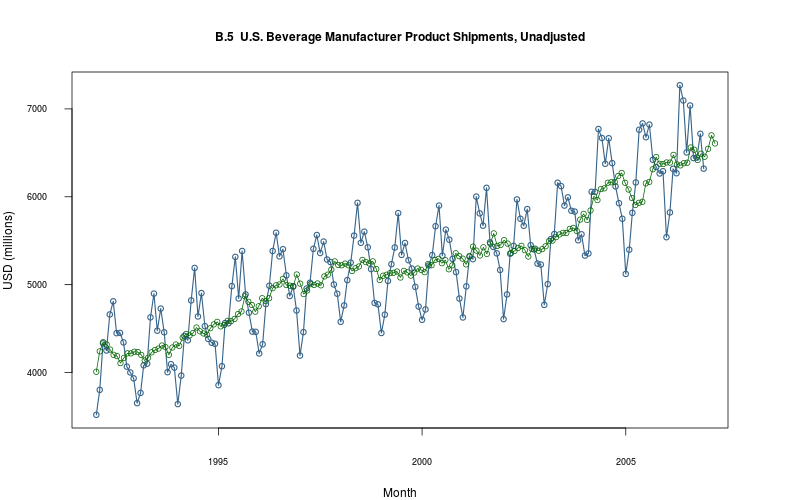
s<- model$extract_par("s", start=1, end=model$T()) par(mar=c(5,4,4,5)+.1) plot_ts(model$sheet(), fmla=`USD (millions)` ~ `Month`) par(new=TRUE) plot( s_mean ~ Month, data=s, col="darkgreen", type="o", xaxt="n", yaxt="n", xlab="", ylab="" ) axis(4) # mtext("theta_2", side=4, line=3) legend("bottomleft", col=c("steelblue3","darkgreen"), lwd=2, legend=c("time series","theta_2"), inset=0.02)
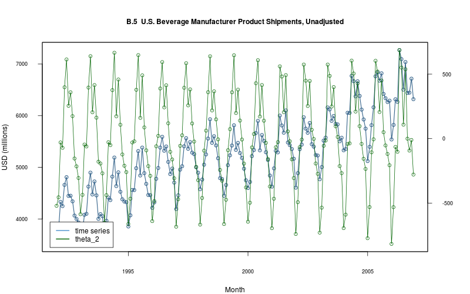
## *FIXME*: what's up with the phase drift in the stochastic seasonal here? plot_ts(model$sheet(), fmla=`USD (millions)` ~ `Month`) y.hat<- inner_join( theta_1, s, by=c("Month") ) %>% mutate( sum=theta_1_mean + s_mean ) %>% select( Month, sum ) lines(sum ~ Month, data=y.hat, col="darkgreen", type="o")
4 Autoregressive models, unit roots and cointegration
Typically, discussion on whether any observed yt are stationary focuses on whether or not there is a unit root in the AR(1) process:
\begin{equation} y_t = \rho_0 + \rho_1 y_{t-1} + \varepsilon_t \end{equation}where ρ ≥ 1 indicates a nonstationary process.
Granger and Swanson proposed the stochastic unit root model (“STUR”):
An introduction to stochastic unit roots (1997) Granger, C. and Swanson, N., Journal of Econometrics 80 (1): 35–62.
In this model:
\begin{eqnarray} y_t &=& \rho_t y_{t-1} + \varepsilon_t \;\;\;\;\; \varepsilon_t \;\sim\; \mathscr{N}(0, \sigma_1^2) \\[3mm] \rho_t &=& e^{\omega_t} \\[3mm] \omega_t &=& \varphi_0 + \varphi_1\omega_{t-1} + \eta_t \;\;\;\;\; \eta_t \;\sim\; \mathscr{N}(0, \sigma_2^2) \\[3mm] \\[3mm] &=& \mu_{\omega} + \varphi_1 (\omega_{t-1} - \mu_{\omega}) + \eta_t \end{eqnarray}where
\begin{equation} \mu_\omega = {\varphi_0 \over 1-\varphi_1} \end{equation}A Bayesian analysis of stochastic unit root models (1999) Jones, C. and Marriott, J., p. 785–794 in “Bayesian Statistics” (6th Edition), Bernardo, J. M., Berger, J. O., Dawid, A. P. and Smith, A. F. M. (Eds), Oxford University Press, Oxford, England.
consider Bayesian estimation of this model and focus on the value of μω:
\begin{eqnarray} \mu_\omega < 0 &\;\;\Leftrightarrow\;\;& \mathscr{E}(\rho_t) < 1 \\[3mm] \mu_\omega = 0 &\;\;\Leftrightarrow\;\;& \mathscr{E}(\rho_t) = 1 \\[3mm] \mu_\omega > 0 &\;\;\Leftrightarrow\;\;& \mathscr{E}(\rho_t) > 1 \end{eqnarray}4.0.1 Create model
lims<- range(unlist(tabs[["STUR"]] %>% select(C, Y))) plot(C ~ time, data=tabs[["STUR"]], col="black", type="l", lwd=1.75, ylim=c(lims[1], lims[2]), ylab="Consumption and Income", main="US Quarterly Consumption and Income" ) lines(Y ~ time, data=tabs[["STUR"]], col="steelblue4", type="l", lwd=1.5, ylim=c(lims[1], lims[2]) ) legend( "topleft", col=c("black", "steelblue4"), lwd=2, legend=c("Consumption","Income"), inset=0.02 )
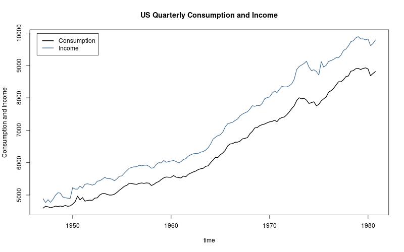
plot(e ~ time,
data=tabs[["STUR"]],
col="black",
type="o",
main="Error process: Consumption regressed on Income"
)
abline(h=0, col="steelblue4")
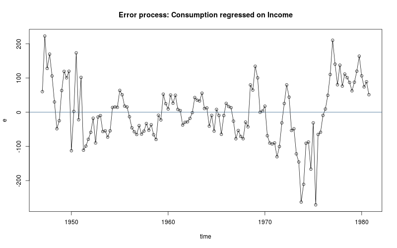
model<- make_model( sheet="STUR", response="e", model="stur", iter=5000, force=FALSE )
SAMPLING FOR MODEL 'stur' NOW (CHAIN 1).
Chain 1, Iteration: 1 / 5000 [ 0%] (Warmup)
Chain 1, Iteration: 500 / 5000 [ 10%] (Warmup)
Chain 1, Iteration: 1000 / 5000 [ 20%] (Warmup)
Chain 1, Iteration: 1500 / 5000 [ 30%] (Warmup)
Chain 1, Iteration: 2000 / 5000 [ 40%] (Warmup)
Chain 1, Iteration: 2500 / 5000 [ 50%] (Warmup)
Chain 1, Iteration: 2501 / 5000 [ 50%] (Sampling)
Chain 1, Iteration: 3000 / 5000 [ 60%] (Sampling)
Chain 1, Iteration: 3500 / 5000 [ 70%] (Sampling)
Chain 1, Iteration: 4000 / 5000 [ 80%] (Sampling)
Chain 1, Iteration: 4500 / 5000 [ 90%] (Sampling)
Chain 1, Iteration: 5000 / 5000 [100%] (Sampling)#
# Elapsed Time: 2.15481 seconds (Warm-up)
# 3.21693 seconds (Sampling)
# 5.37173 seconds (Total)
#
The following numerical problems occured the indicated number of times after warmup on chain 1
count
Exception thrown at line 38: normal_log: Location parameter is inf, but must be finite! 5
Exception thrown at line 38: normal_log: Location parameter is -inf, but must be finite! 1
Exception thrown at line 39: normal_log: Scale parameter is -0.00191727, but must be > 0! 1
Exception thrown at line 39: normal_log: Scale parameter is -0.00256917, but must be > 0! 1
Exception thrown at line 39: normal_log: Scale parameter is -0.00884453, but must be > 0! 1
Exception thrown at line 39: normal_log: Scale parameter is -0.0193304, but must be > 0! 1
Exception thrown at line 39: normal_log: Scale parameter is -0.291387, but must be > 0! 1
Exception thrown at line 39: normal_log: Scale parameter is -0.677531, but must be > 0! 1
Exception thrown at line 39: normal_log: Scale parameter is -0.713569, but must be > 0! 1
When a numerical problem occurs, the Metropolis proposal gets rejected.
However, by design Metropolis proposals sometimes get rejected even when there are no numerical problems.
Thus, if the number in the 'count' column is small, do not ask about this message on stan-users.
SAMPLING FOR MODEL 'stur' NOW (CHAIN 2).
Chain 2, Iteration: 1 / 5000 [ 0%] (Warmup)
Chain 2, Iteration: 500 / 5000 [ 10%] (Warmup)
Chain 2, Iteration: 1000 / 5000 [ 20%] (Warmup)
Chain 2, Iteration: 1500 / 5000 [ 30%] (Warmup)
Chain 2, Iteration: 2000 / 5000 [ 40%] (Warmup)
Chain 2, Iteration: 2500 / 5000 [ 50%] (Warmup)
Chain 2, Iteration: 2501 / 5000 [ 50%] (Sampling)
Chain 2, Iteration: 3000 / 5000 [ 60%] (Sampling)
Chain 2, Iteration: 3500 / 5000 [ 70%] (Sampling)
Chain 2, Iteration: 4000 / 5000 [ 80%] (Sampling)
Chain 2, Iteration: 4500 / 5000 [ 90%] (Sampling)
Chain 2, Iteration: 5000 / 5000 [100%] (Sampling)#
# Elapsed Time: 1.66919 seconds (Warm-up)
# 3.76518 seconds (Sampling)
# 5.43438 seconds (Total)
#
The following numerical problems occured the indicated number of times after warmup on chain 2
count
Exception thrown at line 38: normal_log: Location parameter is inf, but must be finite! 4
Exception thrown at line 39: normal_log: Scale parameter is -0.374239, but must be > 0! 1
When a numerical problem occurs, the Metropolis proposal gets rejected.
However, by design Metropolis proposals sometimes get rejected even when there are no numerical problems.
Thus, if the number in the 'count' column is small, do not ask about this message on stan-users.
SAMPLING FOR MODEL 'stur' NOW (CHAIN 3).
Chain 3, Iteration: 1 / 5000 [ 0%] (Warmup)
Chain 3, Iteration: 500 / 5000 [ 10%] (Warmup)
Chain 3, Iteration: 1000 / 5000 [ 20%] (Warmup)
Chain 3, Iteration: 1500 / 5000 [ 30%] (Warmup)
Chain 3, Iteration: 2000 / 5000 [ 40%] (Warmup)
Chain 3, Iteration: 2500 / 5000 [ 50%] (Warmup)
Chain 3, Iteration: 2501 / 5000 [ 50%] (Sampling)
Chain 3, Iteration: 3000 / 5000 [ 60%] (Sampling)
Chain 3, Iteration: 3500 / 5000 [ 70%] (Sampling)
Chain 3, Iteration: 4000 / 5000 [ 80%] (Sampling)
Chain 3, Iteration: 4500 / 5000 [ 90%] (Sampling)
Chain 3, Iteration: 5000 / 5000 [100%] (Sampling)#
# Elapsed Time: 1.81624 seconds (Warm-up)
# 2.07398 seconds (Sampling)
# 3.89022 seconds (Total)
#
The following numerical problems occured the indicated number of times after warmup on chain 3
count
Exception thrown at line 38: normal_log: Location parameter is inf, but must be finite! 5
Exception thrown at line 39: normal_log: Scale parameter is -0.402275, but must be > 0! 1
Exception thrown at line 39: normal_log: Scale parameter is -0.576082, but must be > 0! 1
When a numerical problem occurs, the Metropolis proposal gets rejected.
However, by design Metropolis proposals sometimes get rejected even when there are no numerical problems.
Thus, if the number in the 'count' column is small, do not ask about this message on stan-users.
Warning messages:
1: There were 426 divergent transitions after warmup. Increasing adapt_delta above 0.8 may help.
2: There were 1 transitions after warmup that exceeded the maximum treedepth. Increase max_treedepth above 10.
3: Examine the pairs() plot to diagnose sampling problems
4.0.2 Show Stan code
model$show_model_file()
// Stochastic Unit Root ("STUR")
data {
int<lower=1> T;
vector[T] y;
}
parameters {
real sigma_1;
real sigma_2;
vector[T] omega;
real mu_omega;
real phi;
}
transformed parameters {
vector[T] rho;
for (t in 1:T) {
rho[t]<- exp(omega[t]);
}
}
model {
//
// priors
//
mu_omega ~ normal(0, 1);
phi ~ normal(0,1);
sigma_1 ~ inv_gamma(0.001, 0.001);
sigma_2 ~ inv_gamma(0.001, 0.001);
// initial conditions as latent data: diffuse prior
omega[1] ~ normal(0, 1);
for (t in 2:T) {
y[t] ~ normal(rho[t]*y[t-1], sigma_1);
omega[t] ~ normal(mu_omega + phi*(omega[t-1]-mu_omega), sigma_2);
}
}
cf. the model itself:
\begin{eqnarray} y_t &=& \rho_t y_{t-1} + \varepsilon_t \;\;\;\;\; \varepsilon_t \;\sim\; \mathscr{N}(0, \sigma_1^2) \\[3mm] \rho_t &=& e^{\omega_t} \\[3mm] \omega_t &=& \varphi_0 + \varphi_1\omega_{t-1} + \eta_t \;\;\;\;\; \eta_t \;\sim\; \mathscr{N}(0, \sigma_2^2) \\[3mm] \\[3mm] &=& \mu_{\omega} + \varphi_1 (\omega_{t-1} - \mu_{\omega}) + \eta_t \end{eqnarray}where
\begin{equation} \mu_\omega = {\varphi_0 \over 1-\varphi_1} \end{equation}4.0.3 Fitted Stan model
model$fit()
Inference for Stan model: stur.
3 chains, each with iter=5000; warmup=2500; thin=1;
post-warmup draws per chain=2500, total post-warmup draws=7500.
mean se_mean sd 2.5% 25% 50% 75% 97.5% n_eff Rhat
sigma_1 54.45 1.02 6.21 43.79 49.79 53.84 58.70 67.76 37 1.06
sigma_2 0.44 0.04 0.20 0.08 0.28 0.46 0.59 0.81 28 1.07
omega[1] -0.58 0.08 1.23 -2.75 -1.50 -0.66 0.32 1.90 232 1.01
omega[2] 0.57 0.09 0.60 -0.65 0.14 0.68 1.04 1.43 44 1.06
omega[3] -0.69 0.02 0.41 -1.59 -0.94 -0.64 -0.41 -0.01 348 1.01
omega[4] -0.07 0.04 0.36 -0.76 -0.31 -0.03 0.19 0.54 99 1.04
omega[5] -0.54 0.01 0.35 -1.34 -0.73 -0.50 -0.31 0.04 1051 1.00
omega[6] -0.55 0.02 0.44 -1.58 -0.77 -0.50 -0.27 0.14 432 1.01
omega[7] -0.53 0.01 0.48 -1.63 -0.78 -0.51 -0.23 0.35 1260 1.00
omega[8] -0.41 0.01 0.48 -1.49 -0.66 -0.39 -0.10 0.48 1249 1.01
omega[9] -0.59 0.02 0.50 -1.74 -0.85 -0.54 -0.27 0.33 992 1.00
omega[10] -0.15 0.02 0.49 -1.13 -0.49 -0.16 0.18 0.80 506 1.01
omega[11] -0.50 0.01 0.42 -1.49 -0.71 -0.46 -0.22 0.23 2650 1.00
omega[12] -0.22 0.02 0.41 -1.09 -0.49 -0.21 0.08 0.53 329 1.01
omega[13] -0.97 0.05 0.51 -2.18 -1.26 -0.88 -0.59 -0.23 108 1.02
omega[14] -0.72 0.02 0.46 -1.82 -0.95 -0.63 -0.42 -0.01 403 1.01
omega[15] -0.25 0.02 0.61 -1.49 -0.59 -0.30 0.10 1.03 687 1.01
omega[16] -1.00 0.05 0.48 -2.11 -1.28 -0.91 -0.63 -0.29 81 1.02
omega[17] -0.39 0.03 0.55 -1.66 -0.67 -0.37 -0.02 0.61 382 1.01
omega[18] -0.96 0.04 0.48 -2.07 -1.25 -0.88 -0.60 -0.24 171 1.02
omega[19] -0.32 0.02 0.40 -1.23 -0.55 -0.30 -0.05 0.39 382 1.01
omega[20] -0.48 0.00 0.41 -1.41 -0.70 -0.47 -0.21 0.24 7500 1.00
omega[21] -0.40 0.01 0.45 -1.42 -0.64 -0.38 -0.10 0.38 986 1.01
omega[22] -0.57 0.01 0.48 -1.67 -0.82 -0.52 -0.27 0.29 1669 1.00
omega[23] -0.23 0.02 0.58 -1.38 -0.57 -0.27 0.10 1.02 1176 1.01
omega[24] -0.65 0.02 0.46 -1.75 -0.90 -0.57 -0.35 0.09 659 1.01
omega[25] -0.37 0.01 0.52 -1.46 -0.65 -0.38 -0.06 0.68 1566 1.01
omega[26] -0.41 0.01 0.54 -1.55 -0.70 -0.42 -0.09 0.69 5207 1.00
omega[27] -0.42 0.01 0.48 -1.51 -0.67 -0.41 -0.11 0.49 3459 1.00
omega[28] -0.36 0.01 0.48 -1.39 -0.62 -0.37 -0.06 0.59 7500 1.00
omega[29] -0.44 0.01 0.45 -1.48 -0.68 -0.42 -0.15 0.36 1855 1.00
omega[30] -0.58 0.02 0.48 -1.67 -0.82 -0.52 -0.28 0.24 837 1.01
omega[31] -0.38 0.01 0.53 -1.52 -0.66 -0.39 -0.07 0.68 7500 1.00
omega[32] -0.45 0.01 0.52 -1.60 -0.71 -0.44 -0.14 0.56 3979 1.00
omega[33] -0.36 0.01 0.54 -1.49 -0.65 -0.39 -0.05 0.79 2709 1.00
omega[34] -0.44 0.01 0.47 -1.51 -0.68 -0.42 -0.15 0.44 2055 1.00
omega[35] -0.49 0.01 0.49 -1.59 -0.74 -0.47 -0.20 0.39 1397 1.00
omega[36] -0.39 0.01 0.52 -1.53 -0.66 -0.39 -0.08 0.66 2880 1.00
omega[37] -0.47 0.01 0.52 -1.61 -0.73 -0.46 -0.16 0.57 7500 1.00
omega[38] -0.37 0.01 0.55 -1.51 -0.66 -0.38 -0.06 0.77 3302 1.00
omega[39] -0.40 0.01 0.50 -1.49 -0.65 -0.39 -0.09 0.55 4678 1.00
omega[40] -0.38 0.01 0.48 -1.40 -0.65 -0.37 -0.07 0.53 7500 1.00
omega[41] -0.49 0.01 0.46 -1.56 -0.71 -0.46 -0.19 0.33 1341 1.00
omega[42] -0.34 0.01 0.50 -1.37 -0.62 -0.35 -0.04 0.64 2872 1.00
omega[43] -0.43 0.01 0.46 -1.46 -0.67 -0.41 -0.13 0.41 2221 1.00
omega[44] -0.48 0.01 0.47 -1.56 -0.72 -0.45 -0.17 0.39 2323 1.00
omega[45] -0.34 0.01 0.51 -1.41 -0.63 -0.35 -0.03 0.64 1918 1.00
omega[46] -0.47 0.01 0.49 -1.56 -0.73 -0.44 -0.17 0.42 7500 1.00
omega[47] -0.36 0.01 0.52 -1.48 -0.64 -0.37 -0.04 0.67 7500 1.01
omega[48] -0.32 0.01 0.45 -1.30 -0.58 -0.33 -0.03 0.55 7500 1.00
omega[49] -0.63 0.02 0.45 -1.71 -0.86 -0.56 -0.33 0.12 764 1.01
omega[50] -0.34 0.01 0.55 -1.50 -0.64 -0.36 -0.02 0.82 1981 1.00
omega[51] -0.55 0.01 0.50 -1.73 -0.80 -0.51 -0.25 0.38 1178 1.01
omega[52] -0.45 0.01 0.49 -1.56 -0.71 -0.43 -0.14 0.45 7500 1.00
omega[53] -0.47 0.01 0.51 -1.59 -0.73 -0.46 -0.17 0.52 7500 1.00
omega[54] -0.35 0.01 0.55 -1.49 -0.66 -0.36 -0.04 0.81 7500 1.00
omega[55] -0.51 0.01 0.49 -1.63 -0.76 -0.47 -0.20 0.37 7500 1.00
omega[56] -0.33 0.01 0.52 -1.42 -0.62 -0.34 -0.02 0.73 7500 1.00
omega[57] -0.54 0.01 0.50 -1.70 -0.81 -0.50 -0.23 0.35 7500 1.00
omega[58] -0.37 0.01 0.53 -1.51 -0.65 -0.38 -0.06 0.69 2264 1.00
omega[59] -0.45 0.01 0.53 -1.61 -0.73 -0.45 -0.14 0.58 7500 1.00
omega[60] -0.42 0.01 0.50 -1.51 -0.68 -0.41 -0.12 0.54 2542 1.00
omega[61] -0.43 0.01 0.51 -1.59 -0.69 -0.43 -0.11 0.55 2868 1.00
omega[62] -0.44 0.01 0.50 -1.55 -0.70 -0.43 -0.13 0.53 1850 1.00
omega[63] -0.45 0.01 0.51 -1.54 -0.71 -0.44 -0.14 0.53 7500 1.00
omega[64] -0.41 0.01 0.54 -1.57 -0.69 -0.43 -0.11 0.67 3731 1.00
omega[65] -0.43 0.01 0.49 -1.49 -0.68 -0.43 -0.13 0.52 2608 1.00
omega[66] -0.44 0.01 0.49 -1.53 -0.70 -0.42 -0.14 0.50 7500 1.00
omega[67] -0.34 0.01 0.52 -1.45 -0.62 -0.35 -0.02 0.71 7500 1.00
omega[68] -0.54 0.02 0.49 -1.66 -0.80 -0.50 -0.23 0.31 901 1.00
omega[69] -0.38 0.01 0.53 -1.51 -0.67 -0.39 -0.07 0.72 3954 1.00
omega[70] -0.46 0.01 0.52 -1.61 -0.74 -0.45 -0.13 0.55 1946 1.00
omega[71] -0.50 0.01 0.50 -1.64 -0.76 -0.47 -0.20 0.39 1876 1.00
omega[72] -0.34 0.01 0.55 -1.48 -0.64 -0.36 -0.03 0.83 2203 1.00
omega[73] -0.58 0.02 0.48 -1.68 -0.82 -0.52 -0.27 0.27 975 1.00
omega[74] -0.41 0.01 0.53 -1.59 -0.68 -0.41 -0.10 0.65 3808 1.00
omega[75] -0.36 0.01 0.56 -1.54 -0.67 -0.39 -0.04 0.82 2255 1.00
omega[76] -0.56 0.02 0.48 -1.70 -0.80 -0.51 -0.25 0.27 922 1.01
omega[77] -0.40 0.01 0.52 -1.55 -0.68 -0.40 -0.09 0.67 1834 1.00
omega[78] -0.45 0.01 0.52 -1.60 -0.72 -0.44 -0.14 0.56 2615 1.00
omega[79] -0.38 0.01 0.52 -1.50 -0.66 -0.40 -0.08 0.70 2060 1.00
omega[80] -0.49 0.01 0.53 -1.69 -0.77 -0.46 -0.17 0.53 7500 1.00
omega[81] -0.30 0.01 0.55 -1.43 -0.61 -0.33 0.02 0.89 1746 1.01
omega[82] -0.50 0.01 0.46 -1.55 -0.73 -0.46 -0.20 0.29 1096 1.01
omega[83] -0.35 0.01 0.48 -1.41 -0.61 -0.35 -0.05 0.58 7500 1.00
omega[84] -0.35 0.01 0.45 -1.38 -0.60 -0.34 -0.07 0.47 2313 1.00
omega[85] -0.57 0.01 0.46 -1.63 -0.80 -0.52 -0.27 0.20 1122 1.00
omega[86] -0.33 0.01 0.52 -1.42 -0.61 -0.35 -0.01 0.71 1889 1.01
omega[87] -0.65 0.02 0.48 -1.82 -0.88 -0.57 -0.34 0.16 397 1.01
omega[88] -0.43 0.01 0.44 -1.45 -0.66 -0.40 -0.14 0.36 2129 1.00
omega[89] -0.15 0.02 0.49 -1.09 -0.49 -0.18 0.19 0.83 426 1.01
omega[90] -0.45 0.01 0.39 -1.36 -0.66 -0.42 -0.19 0.21 1240 1.01
omega[91] -0.68 0.02 0.45 -1.78 -0.91 -0.60 -0.37 0.05 469 1.00
omega[92] -0.38 0.01 0.55 -1.58 -0.65 -0.39 -0.07 0.73 1973 1.00
omega[93] -0.41 0.01 0.53 -1.55 -0.68 -0.41 -0.12 0.66 3691 1.00
omega[94] -0.51 0.01 0.50 -1.62 -0.77 -0.48 -0.21 0.41 1567 1.00
omega[95] -0.31 0.01 0.46 -1.36 -0.56 -0.31 -0.02 0.53 7500 1.00
omega[96] -0.36 0.01 0.42 -1.32 -0.59 -0.35 -0.09 0.41 3918 1.00
omega[97] -0.41 0.00 0.43 -1.37 -0.62 -0.39 -0.13 0.35 7500 1.00
omega[98] -0.21 0.02 0.43 -1.11 -0.48 -0.21 0.08 0.59 589 1.01
omega[99] -0.44 0.01 0.38 -1.31 -0.63 -0.42 -0.19 0.21 1779 1.00
omega[100] -0.56 0.02 0.43 -1.60 -0.78 -0.51 -0.28 0.15 812 1.01
omega[101] -0.53 0.01 0.50 -1.69 -0.77 -0.49 -0.22 0.35 1100 1.00
omega[102] -0.31 0.01 0.54 -1.42 -0.62 -0.34 0.00 0.84 1971 1.01
omega[103] -0.51 0.01 0.46 -1.60 -0.74 -0.48 -0.21 0.29 1114 1.00
omega[104] -0.57 0.02 0.47 -1.69 -0.82 -0.53 -0.26 0.24 846 1.00
omega[105] -0.44 0.01 0.47 -1.48 -0.70 -0.44 -0.15 0.45 7500 1.00
omega[106] -0.16 0.02 0.51 -1.16 -0.50 -0.19 0.17 0.89 572 1.01
omega[107] -0.32 0.01 0.41 -1.23 -0.56 -0.31 -0.04 0.41 1228 1.00
omega[108] 0.18 0.06 0.37 -0.58 -0.07 0.24 0.46 0.75 34 1.07
omega[109] -0.36 0.01 0.25 -0.90 -0.51 -0.34 -0.18 0.07 686 1.00
omega[110] -0.63 0.02 0.35 -1.45 -0.82 -0.58 -0.39 -0.07 318 1.01
omega[111] -0.44 0.01 0.41 -1.37 -0.65 -0.42 -0.17 0.32 4830 1.00
omega[112] 0.06 0.06 0.46 -0.80 -0.29 0.08 0.42 0.85 63 1.04
omega[113] -1.02 0.05 0.58 -2.37 -1.39 -0.90 -0.57 -0.21 120 1.03
omega[114] 0.80 0.13 1.01 -0.78 -0.18 0.92 1.78 2.21 63 1.05
omega[115] -1.05 0.06 0.49 -2.18 -1.35 -0.96 -0.66 -0.36 70 1.03
omega[116] -0.27 0.03 0.49 -1.35 -0.57 -0.28 0.06 0.64 313 1.01
omega[117] -0.60 0.01 0.47 -1.70 -0.83 -0.55 -0.31 0.20 1659 1.00
omega[118] -0.38 0.01 0.54 -1.57 -0.64 -0.38 -0.06 0.72 7500 1.00
omega[119] -0.39 0.01 0.55 -1.55 -0.68 -0.39 -0.07 0.72 4163 1.00
omega[120] -0.31 0.01 0.53 -1.38 -0.60 -0.33 0.01 0.75 2578 1.00
omega[121] 0.10 0.06 0.43 -0.69 -0.23 0.13 0.44 0.83 53 1.04
omega[122] -0.48 0.01 0.31 -1.22 -0.65 -0.46 -0.27 0.04 831 1.00
omega[123] -0.54 0.01 0.38 -1.44 -0.74 -0.50 -0.28 0.07 646 1.01
omega[124] -0.10 0.04 0.44 -0.93 -0.42 -0.12 0.22 0.74 152 1.02
omega[125] -0.60 0.02 0.41 -1.58 -0.82 -0.55 -0.33 0.06 699 1.01
omega[126] -0.21 0.02 0.45 -1.17 -0.50 -0.21 0.08 0.62 551 1.01
omega[127] -0.42 0.01 0.41 -1.34 -0.64 -0.40 -0.15 0.31 2082 1.00
omega[128] -0.37 0.00 0.42 -1.33 -0.60 -0.36 -0.10 0.36 7500 1.00
omega[129] -0.48 0.01 0.44 -1.51 -0.69 -0.44 -0.19 0.28 2692 1.00
omega[130] -0.29 0.01 0.44 -1.21 -0.57 -0.30 -0.01 0.58 7500 1.00
omega[131] -0.29 0.01 0.43 -1.27 -0.54 -0.29 0.00 0.49 3540 1.00
omega[132] -0.14 0.03 0.38 -0.88 -0.40 -0.14 0.14 0.54 134 1.02
omega[133] -0.51 0.01 0.37 -1.38 -0.69 -0.47 -0.27 0.08 1307 1.00
omega[134] -0.46 0.01 0.41 -1.41 -0.68 -0.44 -0.19 0.24 1134 1.01
omega[135] -0.32 0.01 0.44 -1.27 -0.58 -0.32 -0.04 0.52 1844 1.00
omega[136] -0.52 0.01 0.44 -1.55 -0.75 -0.48 -0.23 0.22 1095 1.01
mu_omega -0.42 0.01 0.13 -0.70 -0.50 -0.40 -0.32 -0.20 79 1.04
phi -0.18 0.04 0.36 -0.72 -0.47 -0.26 0.08 0.57 99 1.03
rho[1] 1.21 0.08 2.18 0.06 0.22 0.52 1.38 6.67 659 1.00
rho[2] 2.06 0.11 1.04 0.52 1.16 1.97 2.83 4.19 90 1.04
rho[3] 0.54 0.01 0.20 0.20 0.39 0.53 0.66 0.99 298 1.01
rho[4] 1.00 0.03 0.34 0.47 0.73 0.97 1.21 1.72 126 1.03
rho[5] 0.62 0.00 0.20 0.26 0.48 0.61 0.74 1.04 7500 1.00
rho[6] 0.63 0.01 0.24 0.21 0.46 0.60 0.76 1.16 453 1.01
rho[7] 0.66 0.00 0.31 0.20 0.46 0.60 0.79 1.42 7500 1.00
rho[8] 0.74 0.00 0.35 0.23 0.52 0.68 0.91 1.61 7500 1.01
rho[9] 0.62 0.00 0.31 0.18 0.43 0.58 0.76 1.39 7500 1.00
rho[10] 0.96 0.02 0.48 0.32 0.62 0.85 1.20 2.22 460 1.01
rho[11] 0.66 0.00 0.26 0.22 0.49 0.63 0.80 1.26 7500 1.00
rho[12] 0.87 0.02 0.35 0.34 0.61 0.81 1.08 1.69 303 1.02
rho[13] 0.42 0.02 0.18 0.11 0.28 0.41 0.55 0.79 70 1.03
rho[14] 0.53 0.01 0.21 0.16 0.39 0.53 0.66 0.99 465 1.01
rho[15] 0.95 0.03 0.95 0.23 0.55 0.74 1.11 2.80 1039 1.01
rho[16] 0.41 0.02 0.17 0.12 0.28 0.40 0.53 0.75 73 1.03
rho[17] 0.78 0.02 0.42 0.19 0.51 0.69 0.98 1.84 382 1.01
rho[18] 0.42 0.01 0.18 0.13 0.29 0.41 0.55 0.79 175 1.02
rho[19] 0.78 0.02 0.30 0.29 0.57 0.74 0.95 1.47 330 1.02
rho[20] 0.67 0.00 0.26 0.24 0.50 0.63 0.81 1.27 7500 1.00
rho[21] 0.73 0.01 0.31 0.24 0.53 0.68 0.90 1.47 548 1.01
rho[22] 0.63 0.00 0.28 0.19 0.44 0.59 0.76 1.34 7500 1.00
rho[23] 0.94 0.02 0.66 0.25 0.56 0.76 1.11 2.78 901 1.01
rho[24] 0.57 0.01 0.24 0.17 0.41 0.56 0.71 1.10 862 1.01
rho[25] 0.79 0.01 0.46 0.23 0.52 0.69 0.94 1.97 1711 1.01
rho[26] 0.77 0.01 0.47 0.21 0.50 0.66 0.91 1.99 4748 1.00
rho[27] 0.73 0.00 0.35 0.22 0.51 0.67 0.89 1.62 7500 1.00
rho[28] 0.78 0.00 0.38 0.25 0.54 0.69 0.94 1.81 7500 1.00
rho[29] 0.71 0.00 0.30 0.23 0.51 0.66 0.86 1.44 7500 1.00
rho[30] 0.62 0.00 0.27 0.19 0.44 0.59 0.76 1.27 7500 1.00
rho[31] 0.79 0.01 0.48 0.22 0.52 0.68 0.93 1.97 1818 1.00
rho[32] 0.73 0.00 0.40 0.20 0.49 0.64 0.87 1.75 7500 1.00
rho[33] 0.82 0.01 0.53 0.23 0.52 0.68 0.96 2.20 1928 1.01
rho[34] 0.71 0.00 0.33 0.22 0.51 0.65 0.86 1.55 7500 1.00
rho[35] 0.68 0.00 0.32 0.20 0.48 0.63 0.82 1.47 7500 1.00
rho[36] 0.77 0.01 0.44 0.22 0.52 0.67 0.92 1.93 2840 1.00
rho[37] 0.72 0.01 0.40 0.20 0.48 0.63 0.85 1.78 4052 1.00
rho[38] 0.81 0.01 0.53 0.22 0.52 0.68 0.95 2.17 2799 1.00
rho[39] 0.76 0.00 0.38 0.23 0.52 0.68 0.91 1.73 7500 1.00
rho[40] 0.77 0.00 0.37 0.25 0.52 0.69 0.93 1.70 7500 1.01
rho[41] 0.68 0.00 0.29 0.21 0.49 0.63 0.83 1.39 7500 1.00
rho[42] 0.80 0.01 0.42 0.25 0.54 0.70 0.96 1.89 2099 1.00
rho[43] 0.72 0.00 0.32 0.23 0.51 0.66 0.88 1.51 7500 1.00
rho[44] 0.69 0.00 0.31 0.21 0.49 0.64 0.84 1.48 7500 1.00
rho[45] 0.80 0.01 0.43 0.24 0.53 0.71 0.97 1.90 1780 1.01
rho[46] 0.70 0.00 0.33 0.21 0.48 0.64 0.85 1.51 7500 1.00
rho[47] 0.80 0.01 0.44 0.23 0.53 0.69 0.96 1.95 7500 1.01
rho[48] 0.80 0.00 0.36 0.27 0.56 0.72 0.97 1.73 7500 1.01
rho[49] 0.58 0.00 0.24 0.18 0.42 0.57 0.72 1.13 7500 1.00
rho[50] 0.83 0.01 0.53 0.22 0.53 0.69 0.98 2.27 1531 1.01
rho[51] 0.65 0.00 0.32 0.18 0.45 0.60 0.78 1.46 7500 1.00
rho[52] 0.71 0.00 0.34 0.21 0.49 0.65 0.87 1.58 7500 1.01
rho[53] 0.71 0.00 0.38 0.20 0.48 0.63 0.85 1.67 7500 1.00
rho[54] 0.83 0.01 0.56 0.23 0.52 0.69 0.96 2.24 1858 1.00
rho[55] 0.67 0.00 0.31 0.20 0.47 0.62 0.81 1.45 7500 1.00
rho[56] 0.83 0.01 0.47 0.24 0.54 0.71 0.98 2.08 1231 1.00
rho[57] 0.65 0.00 0.31 0.18 0.45 0.60 0.79 1.42 7500 1.00
rho[58] 0.79 0.01 0.46 0.22 0.52 0.69 0.94 1.98 2876 1.00
rho[59] 0.73 0.01 0.43 0.20 0.48 0.64 0.87 1.79 4110 1.00
rho[60] 0.74 0.00 0.38 0.22 0.51 0.66 0.88 1.72 7500 1.00
rho[61] 0.74 0.01 0.39 0.20 0.50 0.65 0.89 1.74 2956 1.00
rho[62] 0.73 0.01 0.37 0.21 0.50 0.65 0.88 1.70 3679 1.01
rho[63] 0.73 0.01 0.39 0.21 0.49 0.64 0.87 1.70 3846 1.00
rho[64] 0.77 0.01 0.49 0.21 0.50 0.65 0.90 1.96 3452 1.00
rho[65] 0.73 0.01 0.37 0.23 0.50 0.65 0.88 1.69 3008 1.00
rho[66] 0.72 0.00 0.37 0.22 0.50 0.65 0.87 1.66 7500 1.00
rho[67] 0.81 0.01 0.45 0.23 0.54 0.70 0.98 2.04 1388 1.00
rho[68] 0.65 0.00 0.29 0.19 0.45 0.60 0.79 1.36 7500 1.00
rho[69] 0.78 0.01 0.47 0.22 0.51 0.67 0.93 2.05 2348 1.00
rho[70] 0.72 0.01 0.40 0.20 0.48 0.64 0.87 1.74 3787 1.00
rho[71] 0.68 0.00 0.33 0.19 0.47 0.62 0.82 1.48 7500 1.00
rho[72] 0.83 0.01 0.55 0.23 0.53 0.70 0.97 2.29 2161 1.00
rho[73] 0.63 0.00 0.28 0.19 0.44 0.59 0.77 1.31 7500 1.00
rho[74] 0.76 0.01 0.44 0.20 0.51 0.66 0.91 1.92 3984 1.00
rho[75] 0.82 0.01 0.53 0.21 0.51 0.68 0.96 2.27 1896 1.01
rho[76] 0.63 0.00 0.28 0.18 0.45 0.60 0.78 1.30 7500 1.01
rho[77] 0.77 0.01 0.44 0.21 0.51 0.67 0.91 1.96 1892 1.00
rho[78] 0.72 0.00 0.39 0.20 0.49 0.64 0.87 1.75 7500 1.00
rho[79] 0.78 0.01 0.45 0.22 0.51 0.67 0.93 2.01 1891 1.00
rho[80] 0.70 0.00 0.38 0.19 0.46 0.63 0.84 1.70 7500 1.00
rho[81] 0.87 0.02 0.56 0.24 0.54 0.72 1.02 2.42 791 1.01
rho[82] 0.67 0.00 0.28 0.21 0.48 0.63 0.82 1.34 7500 1.01
rho[83] 0.78 0.00 0.38 0.24 0.54 0.70 0.95 1.79 7500 1.01
rho[84] 0.77 0.00 0.34 0.25 0.55 0.71 0.94 1.60 7500 1.01
rho[85] 0.62 0.00 0.26 0.20 0.45 0.60 0.76 1.22 7500 1.00
rho[86] 0.82 0.01 0.46 0.24 0.54 0.70 0.99 2.03 1026 1.01
rho[87] 0.58 0.01 0.25 0.16 0.41 0.56 0.71 1.17 1073 1.00
rho[88] 0.71 0.00 0.30 0.23 0.52 0.67 0.87 1.43 7500 1.00
rho[89] 0.98 0.03 0.50 0.34 0.61 0.83 1.21 2.29 377 1.01
rho[90] 0.68 0.00 0.24 0.26 0.52 0.66 0.83 1.23 7500 1.01
rho[91] 0.56 0.01 0.22 0.17 0.40 0.55 0.69 1.05 633 1.00
rho[92] 0.80 0.01 0.55 0.21 0.52 0.67 0.93 2.07 2349 1.00
rho[93] 0.76 0.01 0.47 0.21 0.51 0.66 0.89 1.93 4079 1.00
rho[94] 0.67 0.00 0.34 0.20 0.46 0.62 0.81 1.51 7500 1.00
rho[95] 0.81 0.00 0.37 0.26 0.57 0.73 0.98 1.71 7500 1.01
rho[96] 0.76 0.00 0.31 0.27 0.56 0.70 0.91 1.50 7500 1.01
rho[97] 0.72 0.00 0.29 0.25 0.54 0.68 0.88 1.42 7500 1.01
rho[98] 0.89 0.00 0.38 0.33 0.62 0.81 1.08 1.80 7500 1.01
rho[99] 0.69 0.00 0.24 0.27 0.53 0.66 0.83 1.23 7500 1.00
rho[100] 0.62 0.00 0.24 0.20 0.46 0.60 0.75 1.17 7500 1.00
rho[101] 0.66 0.00 0.31 0.18 0.47 0.61 0.80 1.42 7500 1.00
rho[102] 0.85 0.02 0.53 0.24 0.54 0.71 1.00 2.31 957 1.01
rho[103] 0.66 0.00 0.28 0.20 0.48 0.62 0.81 1.34 7500 1.00
rho[104] 0.62 0.01 0.28 0.18 0.44 0.59 0.77 1.27 1287 1.00
rho[105] 0.71 0.00 0.33 0.23 0.50 0.65 0.86 1.57 7500 1.00
rho[106] 0.97 0.02 0.54 0.31 0.61 0.83 1.19 2.45 479 1.01
rho[107] 0.78 0.01 0.31 0.29 0.57 0.73 0.96 1.50 660 1.00
rho[108] 1.27 0.06 0.43 0.56 0.93 1.27 1.59 2.12 44 1.05
rho[109] 0.72 0.01 0.17 0.41 0.60 0.71 0.83 1.07 626 1.01
rho[110] 0.56 0.01 0.18 0.23 0.44 0.56 0.68 0.94 294 1.01
rho[111] 0.70 0.00 0.28 0.25 0.52 0.66 0.84 1.38 7500 1.00
rho[112] 1.18 0.05 0.53 0.45 0.75 1.08 1.52 2.34 108 1.03
rho[113] 0.41 0.02 0.20 0.09 0.25 0.40 0.57 0.81 159 1.03
rho[114] 3.46 0.31 2.81 0.46 0.83 2.52 5.91 9.09 85 1.03
rho[115] 0.39 0.02 0.16 0.11 0.26 0.38 0.52 0.70 60 1.04
rho[116] 0.85 0.02 0.41 0.26 0.57 0.76 1.06 1.90 297 1.02
rho[117] 0.60 0.00 0.26 0.18 0.43 0.58 0.74 1.23 7500 1.00
rho[118] 0.79 0.01 0.49 0.21 0.53 0.68 0.94 2.06 2885 1.00
rho[119] 0.79 0.01 0.51 0.21 0.51 0.67 0.93 2.06 4141 1.00
rho[120] 0.84 0.01 0.47 0.25 0.55 0.72 1.01 2.12 1832 1.01
rho[121] 1.20 0.06 0.50 0.50 0.80 1.13 1.55 2.28 65 1.03
rho[122] 0.64 0.01 0.19 0.30 0.52 0.63 0.76 1.04 809 1.00
rho[123] 0.62 0.00 0.21 0.24 0.48 0.61 0.76 1.07 7500 1.01
rho[124] 1.00 0.03 0.45 0.39 0.66 0.89 1.24 2.09 182 1.02
rho[125] 0.59 0.00 0.22 0.21 0.44 0.58 0.72 1.06 7500 1.00
rho[126] 0.89 0.00 0.39 0.31 0.61 0.81 1.09 1.85 7500 1.01
rho[127] 0.71 0.00 0.27 0.26 0.53 0.67 0.86 1.36 7500 1.00
rho[128] 0.75 0.00 0.29 0.26 0.55 0.70 0.91 1.44 7500 1.01
rho[129] 0.68 0.00 0.28 0.22 0.50 0.64 0.82 1.32 7500 1.00
rho[130] 0.82 0.00 0.38 0.30 0.57 0.74 0.99 1.78 7500 1.01
rho[131] 0.82 0.00 0.34 0.28 0.58 0.75 1.00 1.64 7500 1.00
rho[132] 0.94 0.03 0.35 0.42 0.67 0.87 1.15 1.72 144 1.02
rho[133] 0.64 0.00 0.21 0.25 0.50 0.63 0.76 1.08 7500 1.00
rho[134] 0.68 0.00 0.26 0.25 0.51 0.65 0.83 1.28 7500 1.01
rho[135] 0.80 0.00 0.35 0.28 0.56 0.73 0.96 1.68 7500 1.01
rho[136] 0.65 0.00 0.26 0.21 0.47 0.62 0.80 1.25 7500 1.01
lp__ -548.91 16.27 69.54 -635.88 -598.22 -571.07 -514.09 -357.89 18 1.13
Samples were drawn using NUTS(diag_e) at Tue May 31 00:11:42 2016.
For each parameter, n_eff is a crude measure of effective sample size,
and Rhat is the potential scale reduction factor on split chains (at
convergence, Rhat=1).
A unit root corresponds to μω being positive, therefore for stationarity we wish to know:
What is Pr ( μω ) < 0?
mu_omega<- rstan::extract(model$fit())[["mu_omega"]] hist(mu_omega, breaks=30, main="mu_omega", xlab="mu_omega", ylab="density")
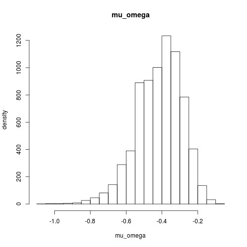
5 On exit: clean up
Discard all pending work and free resources (memory, sockets, &c.):
graphics.off()